代码精进之路
01从条件运算符说起，反思什么是好的代码
写出优秀的代码是我们每一个程序员的毕生追求，毕竟写代码本身就是个技术活，代码的好坏，其实也就是我们工艺的好坏。作为一个技术类的工种，我们没有理由不去思考如何写出优秀、让人惊叹的代码。
那什么样的代码才是优秀的代码呢？对于这个问题，我想每个人心中都会有自己的答案。今天我就来和你聊聊我的思考。
对于条件运算符（?:）的使用，我估摸着你看到过相关的争论，或者自己写代码的时候也不知道到底该不该使用条件运算符，或者什么情况下使用？这些微不足道的小话题随时都可以挑起激烈的争论。
C 语言之父丹尼斯·里奇就属于支持者。在《C 程序设计语言》这本书里，他使用了大量简短、直观的条件运算符。
然而还有一些人，对条件运算符完全丧失了好感，甚至把“永远不要使用条件运算符”作为一条 C 语言高效编程的重要技巧。
比如说吧，下面的这个例子，第一段代码使用条件语句，第二段代码使用条件运算符。 你觉得哪一段代码更“优秀”呢？
if (variable != null) {
return variable.getSomething();
}
return null;
return variable != null ? variable.getSomething() : null;
同样使用条件运算符，你会喜欢下面代码吗？
return x >= 90 ? "A" : x >= 80 ? "B" : x >= 70 ? "C" : x >= 60 ? "D" : "E";
十多年前，作为一名 C 语言程序员，我非常喜欢使用条件运算符。因为条件运算符的这种压缩方式，使代码看起来简短、整洁、干净。 而且，如果能把代码以最少的行数、最简短的方式表达出来，心里也颇有成就感。
后来，我的一位同事告诉我，对于我使用的条件运算符的部分代码，他要仔细分析才知道这一小行代码想要表达的逻辑，甚至有时候还要翻翻书、查查操作符的优先级和运算顺序，拿笔画一画逻辑关系，才能搞清楚这一小行代码有没有疏漏。
这么简单的代码，为什么还要确认运算符的优先级和运算顺序呢？因为只是“看起来”对的代码，其实特别容易出问题。所以，一定要反复查验、确认无误才能放心。
这么简单的代码，真的需要这么认真检查吗？超级简单的代码的错误，往往是我们最容易犯的一类编码错误。我个人就是犯过很多次这种低级、幼稚的错误，并且以后一定还会再犯。比如下面的这段有问题的代码，就是我最近犯的一个非常低级的代码错误：
// Map for debug logging. Enable debug log if SSLLogger is on.
private final Map<Integer, byte[]> logMap =
SSLLogger.isOn ? null : new LinkedHashMap<>();
正确的代码应该是：
// Map for debug logging. Enable debug log if SSLLogger is on.
private final Map<Integer, byte[]> logMap =
SSLLogger.isOn ? new LinkedHashMap<>() : null;
你可能会说，这个代码错误看起来太幼稚、太低级、太可笑了吧？ 确实是这样的。这段错误的代码，我的眼睛不知道看过了它们多少次，可是这个小虫子（bug）还是华丽丽地逃脱了我的注意，进入了JDK 11 的最终发布版。
如果使用条件语句，而不是条件运算符，这个幼稚错误发生的概率会急剧下降。 坚持使用最直观的编码方式，而不是追求代码简短，真的可以避免很多不必要的错误。所以说啊，选择适合的编码方式，强调代码的检查、评审、校验，真的怎么都不算过分。
现在，如果你要再问我喜欢哪种编码方式，毫无疑问，我喜欢使用条件语句，而不是条件运算符。因为，用条件语句这种编码方式，可以给我确定感，我也不需要挑战什么高难度动作；而看代码的人，也可以很确定，很轻松，不需要去查验什么模糊的东西。
这种阅读起来的确定性至少有三点好处，第一点是可以减少代码错误；第二点是可以节省我思考的时间；第三点是可以节省代码阅读者的时间。
减少错误、节省时间，是我们现在选择编码方式的一个最基本的原则。
《C 程序设计语言》这本 C 程序员的圣经，初次发表于 1978 年。那个年代的代码，多数很简单直接。简短的代码，意味着节省昂贵的计算能力，是当时流行的编码偏好。而现在，计算能力不再是瓶颈，如何更高效率地开发复杂的软件，成了我们首先需要考虑的问题。
有一些新设计的编程语言，不再提供条件运算符。 比如，Kotlin 语言的设计者认为，编写简短的代码绝对不是 Kotlin 的目标。所以，Kotlin 不支持条件运算符。 Go 语言的设计者认为，条件运算符的滥用，产生了许多难以置信的、难以理解的复杂表达式。所以，Go 语言也不支持条件运算符。
我们看到，现实环境的变化，影响着我们对于代码“好”与“坏”的判断标准。
“好”的代码与“坏”的代码
虽然对于“什么是优秀的代码“难以形成一致意见，但是这么多年的经验，让我对代码“好”与“坏”积累了一些自己的看法。
比如说，“好”的代码应该：
- 容易理解；
- 没有明显的安全问题；
- 能够满足最关键的需求；
- 有充分的注释；
- 使用规范的命名；
- 经过充分的测试。
“坏”的代码包括：
- 难以阅读的代码；
- 浪费大量计算机资源的代码；
- 代码风格混乱的代码；
- 复杂的、不直观的代码；
- 没有经过适当测试的代码。
当然，上面的列表还可以很长很长，长到一篇文章都列不完、长到我们都记不住的程度。
优秀的代码是“经济”的代码
大概也没人想记住这么多条标准吧？所以，关于优秀代码的特点，我想用“经济”这一个词语来表达。这里的“经济”，指的是使用较少的人力、物力、财力、时间、空间，来获取较大的成果或收益 。或者简单地说，投入少、收益大、投资回报高。为了方便，你也可以先理解为节俭或者抠门儿的意思。
当然，使用一个词语表达肯定是以偏概全的。但是，比起一长串的准则，一个关键词的好处是，更容易让人记住。我想这点好处可以大致弥补以偏概全的损失。
该怎么理解“经济”呢？这需要我们把代码放到软件的整个生命周期里来考察。
关于软件生命周期，我想你应该很熟悉了，我们一起来复习一下。一般而言，一个典型的软件生命周期，大致可以划分计划、分析和设计、代码实现、测试、运营和维护这六个阶段。在软件维护阶段，可能会有新的需求出现、新的问题产生、旧问题的浮现，这些因素可能就又要推动新一轮的计划，分析、设计、实现、测试、运营。这样，这个周期就会反复迭代，反复的循环，像一个周而复始的流水线。
当我们说投入少的时候，说的是这整个生命周期，甚至是这个周而复始的生命周期的投入少。 比如说，代码写得快，可是测试起来一大堆问题，就不是经济的。
现代的大型软件开发，一般都会有比较细致的分工，在各个阶段参与的人是不同的；甚至在相同的阶段，也会有多人参与。一个稍有规模的软件，可能需要数人参与设计和实现。而为了使测试相对独立，软件测试人员和软件实现人员也是相对独立的，而且他们具备不同的优势和技能。
所以，当我们考虑投入的时候，还要考虑这个生命周期里所有的参与人员。这些参与人员所处的立场、看问题的角度，所具有的资源禀赋，可能千差万别。比如说，如果客户需要阅读代码，才知道系统怎么使用，就不是经济的。
是不是所有的软件都有这六个阶段呢？显然不是的，我本科的毕业论文程序，就完全没有运营和维护阶段，甚至也不算有测试阶段。我当时的毕业论文是一个关于加快神经网络学习的数学算法。只要验证了这个算法收缩得比较快，程序的使命就完成了，程序就可以退出销毁了。 所以，运营和维护阶段，甚至测试阶段，对当时的我而言，都是不需要投入的阶段。
在现代商业社会里，尤其我们越来越倾向于敏捷开发、精益创业，提倡“快速地失败、廉价地失败”，很多软件走不到维护阶段就已经结束了。而且，由于人力资源的限制，当然包括资金的限制，一个程序员可能要承担很多种角色，甚至从开始有了想法，到软件实现结束，都是一个人在战斗，哪里分什么设计人员、测试人员。
对软件开发流程选择的差异，就带来了我们对代码质量理解，以及对代码质量重视程度的千差万别。 比如说，一个创业公司是万万不能照搬大型成熟软件的开发流程的。因为，全面的高质量、高可靠、高兼容性的软件可能并不是创业公司最核心的目标。如果过分纠缠于这些代码指标，创始人的时间、投资人的金钱可能都没有办法得到最有效的使用。
当然，越成熟的软件开发机制越容易写出优秀的代码。但是，最适合当前现实环境的代码，才是最优秀的代码。
所以，当我们考虑具体投入的时候，还要考虑我们所处的现实环境。 如果我们超出现实环境去讨论代码的质量，有时候会有失偏颇，丧失我们讨论代码质量的意义。
既然具体环境千差万别，那我们还有必要讨论什么是优秀的代码吗？优秀的代码还能有什么共同的规律吗？ 即使一个人做所有的事情，即使代码用完一次就废弃，我们长期积累下来的编写优秀代码的经验，依然可以帮助到很多人。
比如说，虽然创业公司的软件刚开始最核心的追求不是全面的高可靠性。可是，你也要明白，创业的目的不是为了失败，一旦创业公司稳住了阵脚，这个时候如果它们没有高可靠性的软件作为支撑，很快就会有反噬作用。 而程序员背锅，就是反噬的其中一个后果。
如何使用最少的时间、最少的资源，提供最可靠的软件，什么时候开始把可靠性提高到不可忽视的程度，有没有可能一开始就是高可靠的, 这些就都是一个富有经验的创业公司技术负责人不得不考虑的问题。而我们总结出来的编写代码的经验，毫无疑问，可以为这些问题提供一些思路和出路。
为什么我们要从“经济”这个角度来衡量优秀的代码呢？ 因为这是一个可以让我们更加理性的概念。
一个营利性的公司，必须考虑投入产出比，没有人愿意做亏本的买卖，股东追求的是利润最大化。作为程序员，我们也必须考虑投入和产出。 首先，我们的产出必须大幅度大于公司对我们的投入，否则就有随时被扫地出门的风险。然后，我们必须使用好我们的时间，在单位时间内创造更多的价值，否则，真的是没有功劳，只有徒劳。
编写代码的时候，如果遇到困惑或者两难，你要想一想，怎么做才能做到投资少、收益大？
即便具体环境千差万别，我还是有一些例子，可以和你一起分享：
- 代码写得又快又好，是“经济”的；代码写得快，但是错误多，不是一个“经济”的行为。
- 代码跑得又快又好，是“经济”的；代码跑得快，但是安全问题突出，不是一个“经济”的行为。
- 代码写得精简易懂，是“经济”的；代码写得精简，但是没人看得懂，不是一个“经济”的行为。
总结
对于所有的程序员来说，每个人都会遇到两个有名的捣蛋鬼，一个捣蛋鬼是“合作”，另一个捣蛋鬼是“错误”。
要合作，就需要用大部分人都舒服的方式。程序员间合作交流最重要的语言便是代码，换句话说，这就需要我们规范地编写代码，使用大家都接受的风格。不规范的代码，我们可能节省了眼前的时间，但是测试、运营、维护阶段，就需要更多的时间。而一旦问题出现，这些代码会重新返工，又回到我们手里，需要阅读、修改，再一次浪费我们自己的时间。对于这些代码，每一点时间的付出，都意味着投入，意味着浪费，意味着我们损失了做更有意义事情的机会。
人人都会犯错误，代码都会有 bug，可是有些错误的破坏力是我们无法承受的，其中，最典型的就是安全问题。很多安全问题对公司和个人造成不容忽视的恶劣影响。我见过因为安全问题破产的公司。这时候，甚至都不要谈什么投入产出比、经济效益了，所有的投入归零，公司破产，员工解散。这需要我们分外地卖力，拿出十二分的精神来处理潜在的安全威胁，编写安全的代码。
如果我们把规范和安全作为独立的话题，优秀的代码需要具备三个特征： 经济、规范、安全。这些内容就是我们接下来要在专栏里一起学习的主体。
好了，今天我们一口气聊了很多，主要是在探讨到底什么样的代码才是优秀的代码。这个问题你之前考虑过吗？和我今天讲的是否一样呢？欢迎你在留言区写写自己的想法，我们可以进一步讨论。也欢迎你把今天的文章分享给跟你协作的同学，看看你们之间的理解是否一致。# 02把错误关在笼子里的五道关卡 上一讲中，我们一起讨论了什么是优秀的代码。简而言之，优秀的代码是经济、规范、安全的代码。在平时的工作中，我们要朝着这个方向努力，时常站在团队、流程、个人能力的角度去思考优秀代码。
作为一名软件工程师，我们都想写出优秀的代码。可是，怎么才能编写出经济、规范、安全的代码呢？这是个大话题，相信你之前也有过思考。
02 无心的过失
开始之前，我先给你讲个曾经发生过的真实案例。2014 年 2 月，苹果公司的 iOS 和 OS X 操作系统爆出严重的安全漏洞，聪明的黑客们可以利用这一漏洞，伪装成可信网站或者服务，来拦截用户数据。而造成这一漏洞的原因，也让业界专家大跌眼镜。
下面我用 C 语言的伪代码来给你简单描述下当时的漏洞情况。
if ((error = doSomething()) != 0)
goto fail;
goto fail;
if ((error= doMore()) != 0)
goto fail;
fail:
return error;
其实这段代码非常简单，它有两个判断语句，如果判断条件成立，那就执行“goto fail”语句，如果不成立，那就跳过判断语句继续执行。上面的“goto fail”语句，它的意思是略过它之后的所有语句，直接跳转到标有“fail”语句的地方，也就是第 6 行。
我们来分析下，第一个判断条件（第一行和第二行），如果 error 不等于零，那就跳转到 fail 语句，这逻辑上没什么问题。而第三行，没有任何附加条件，就能直接跳转到 fail 语句，也就是说，它下面的代码永远也无法执行，这里是不是有问题？是的，漏洞就是出在这里。
这一行多余的代码就是导致苹果操作系统那个安全漏洞的罪魁祸首。2014 年 2 月 21 日，苹果发布了相关的安全补丁，你随便一搜“GoTo Fail 漏洞”就能找到相关的细节，我这里不赘述了。
我们每天仰慕的苹果操作系统出现这样“低级”的错误，你是不是有点惊讶？这么一个“简单”的错误，引发了一个非常严重的安全漏洞，是不是也有点出乎意料？上面的错误，简单看，就是复制的时候多复制了一行，或者因为时间关系，或者因为粗心大意，苹果的工程师硬是没检查出来。这在我们平时的工作中，也经常出现。
这个具有重大杀伤力的 bug 是如此的“幼稚”，如此的“好玩”，如此的“萌萌哒”，以至于到现在，人们还可以买到印有“GoTo Fail”的 T 恤衫，更别提业界对于这个问题的兴趣了。有很多文章，专门研究这一个“低级”安全漏洞；甚至有人探讨这个“低级”错误对于计算机软件教育的积极影响。
所有的危机都不应该被浪费，这一次也不例外。这些年，我也一直在思考为什么我们会犯如此“低级”的错误？即使是在苹果这样的大公司。反过来再想，我们应该如何尽可能避免类似的错误呢？
人人都会犯错误
没有人是完美的，人人都会犯错误。这应该是一个共识。这里面既有技术层面的因素，也有人类的行为模式的因素，也有现实环境的影响。我们在此不讨论人类进化和心智模式这样的严肃研究成果。但是，有两三个有意思的话题，我想和你聊聊。
第一个比较普遍的观点是好的程序员不会写坏的代码，要不然，就是他还不足够优秀。我尊重这个观点背后代表的美好愿望，但是这个观点本身我很难认同。它一定程度上忽视了人类犯错误的复杂性，和影响因素的多样性。
我认为，即使一个非常优秀的程序员，他主观上非常认真，能力又非常强，但他也会犯非常“低级”、“幼稚”的错误。所以，你不能因为苹果那个程序员，犯了那个非常低级的错误，就一棒子把他“打死”，认为他不是一个好的程序员。
第二个更加普遍的观点是同样的错误不能犯第二次。作为一名程序员，我同样尊重这个观点背后代表的美好期望。但是，我想给这个观点加一点点限制。这个观点应该是我们对自身的期望和要求；对于他人，我们可以更宽容；**对于一个团队，我们首先要思考如何提供一种机制，**以减少此类错误的发生。如果强制要求他人错不过三，现实中，我们虽然发泄了怨气，但是往往错失了工作机制提升的机会。
第三个深入人心的观点是一个人犯了错误并不可怕，怕的是不承认错误。同样的，我理解这个观点背后代表的美好诉求。这是一个深入人心的观点，具有深厚的群众基础，我万万不敢造次。在软件工程领域，我想，在犯错这件事情上，我们还是要再多一点对自己的谅解，以及对他人的宽容。错误并不可怕，你不必为此深深自责，更不应该责备他人。要不然，一旦陷入自责和指责的漩涡，很多有建设意义的事情，我们可能没有意识去做；或者即使意识到了，也没法做，做不好。
我这么说，你是不是开始有疑惑了：人人都会犯错误，还重复犯，还不能批评，这怎么能编写出优秀的代码呢？换句话说就是，我们怎么样才会少犯错误呢？
把错误关在笼子里
人人都会犯错误，苹果的工程师也不例外。所以，“GoTo Fail”的“幼稚”漏洞，实在是在情理之中。可是，这样的漏洞是如何逃脱重重“监管”，出现在最终的发布产品中，这多多少少让我有点出乎意料。
我们先来看看，这个错误是经过了怎样的“工序”，穿越了多少障碍，需要多少运气，最终才能被“发布”出来。
我把这样的工序总结为“五道关卡”。
第一道关：程序员
提高程序员的修养，是一个永不过时的课题。从别人的失败和自己的失败中学习、积累、提高，是一个程序员成长的必修课。我知道，这是你和我一直都在努力做的事情。
第三行的“GoTo Fail”，实在算得上“漏网之鱼”，才可以逃过哪怕最平凡的程序员的眼睛，堂而皇之地占据了宝贵的一行代码，并且狠狠地玩耍了一把。
现在我们可以再回过来看看那段错误代码，如果是你写，你会怎么写呢？从你的角度来看，又有哪些细节可以帮助你避免类似的错误呢？这两个问题，你可以先停下来 1 分钟，想一想。
在我看来，上面那段代码，起码有两个地方可以优化。如果那位程序员能够按照规范的方式写代码，那“GoTo Fail”的漏洞应该是很容易被发现。我们在遇到问题的时候，也应该尽量朝着规范以及可持续改进的角度去思考错误背后的原因，而非一味地自责。
首先，他应该正确使用缩进。你现在可以再看下我优化后的代码，是不是第三行的代码特别刺眼，是不是更容易被“逮住”？
if ((error = doSomething()) != 0)
goto fail;
goto fail;
if ((error= doMore()) != 0)
goto fail;
fail:
return error;
其次，他应该使用大括号。使用大括号后，这个问题是不是就自动消失了？虽然，多余的这一行依然是多余的，但已经是没有多大危害的一行代码了。
if ((error = doSomething()) != 0) {
goto fail;
goto fail;
}
if ((error= doMore()) != 0) {
goto fail;
}
fail:
return error;
从上面这个例子里，不知道你有没有体会到，好的代码风格带来的好处呢？工作中，像苹果公司的那位程序员一样的错误，你应该没少遇到吧？那现在，你是不是可以思考如何从代码风格的角度来避免类似的错误呢？
魔鬼藏于细节。很多时候， 优秀的代码源于我们对细节的热情和执着。可能，你遇到的或者想到的问题，不是每一个都有完美的答案或者解决办法。但是，如果你能够找到哪怕仅仅是一个小问题的一个小小的改进办法，都有可能会给你的代码质量带来巨大的提升和改变。
当然，你可能还会说，我代码风格不错，但是那个问题就是没看到，这也是极有可能的事情。是这样，所以也就有了第二道工序：编译器。
第二道关：编译器
编译器在代码质量方面，作为机器，恪尽职守，它可以帮助我们清除很多错误。还是以上面的漏洞代码为例子， 这一次其实编译器的防守并没有做好，因为它毫无察觉地漏过了多余的“GoTo Fail”。
在 Java 语言里，对于无法访问的代码（第三行后的代码）， Java 编译器就会及时报告错误。而在 2014 年 2 月的 GCC 编译器里，并没有提供这样的功能。
至今，GCC 社区对于无法访问代码的检查，还没有统一的意见 。然而，GCC 社区并没有完全浪费这个“GoTo Fail”的问题 。为解决类似问题，从 GCC 6 开始，GCC 社区为正确使用缩进提供了一个警告选项（ -Wmisleading-indentation ）。如果代码缩进格式没有正确使用，GCC 就会提供编译时警告。现在，如果我们启用并且注意到了 GCC 编译器的警告，犯类似错误的机会应该会大幅度地降低了。
在这里，我要提醒你的是，对于编译器的警告，我们一定要非常警觉。能消除掉所有的警告，你就应该消除掉所有的警告。就算实在没有办法消除掉编译警告，那你也一定要搞清楚警告产生的原因，并确认编译警告不会产生任何后续问题。
第三道关：回归测试 （Regression Testing）
一般地，软件测试会尽可能地覆盖关键逻辑和负面清单，以确保关键功能能够正确执行，关键错误能够有效处理。一般情况下，无论是开发人员，还是测试人员，都要写很多测试代码，来测试软件是否达到预期的要求。
另外，这些测试代码还有一个关键用途就是做回归测试 。如果有代码变更，我们可以用回归测试来检查这样的代码变更有没有使代码变得更坏。
上述的“GoTo Fail”这样的代码变更，涉及到一个非常重要的负面检查点。遗憾的是，该检查点并没有包含在回归测试中；或者，在这个变更交付工程中，回归测试并没有被执行。
软件测试没有办法覆盖所有的使用场景。但是，我们千万要覆盖关键逻辑和负面清单。一个没有良好回归测试的软件，很难保证代码变更的质量；也会使得代码变更充满不确定性，从而大幅地提高代码维护的成本。
第四道关：代码评审 （Code Review）
代码评审是一个有效的在软件研发过程中抵御人类缺陷的制度。通过更多的眼睛检查软件代码，被忽视的错误更容易被逮住，更好的设计和实现更容易浮现出来。
那代码评审是怎么实现的呢？一般情况下，代码评审是通过阅读代码变更进行的。而代码变更一般通过某种形式的工具呈现出来。比如 OpenJDK 采用的Webrev 。你可以访问我的一个代码评审使用的代码变更页面 ，感受下这种呈现方式。
回到上面那个“GoTo Fail”的代码变更，看起来什么样子呢？下面是其中的一个代码变更版本示例：
if ((err = SSLHashSHA1.update(&hashCtx, &signedParams)) != 0)
goto fail;
+ goto fail;
if ((err = SSLHashSHA1.final(&hashCtx, &hashOut)) != 0)
goto fail;
添加的这行代码，还是相当刺眼的。多一些眼睛盯着这些代码，多一些形式展现这些变更，就会大幅度地降低问题藏匿的几率。
上述的“GoTo Fail”这样的代码变更，怎么就逃过代码评审者的眼睛呢？我想说的是，评审者也是人，我们不能期望评审者能发现所有的问题。
第五道关：代码分析 （Code Analysis）
静态代码分析（Static Code Analysis）是通过对源代码的检查来发现潜在问题的一种软件质量保障方式。有很多静态代码分析工具可以帮助你检查代码缺陷，比如说商业软件 Coverity，以及开源软件 FindBugs。你可以试试看，有哪些工具可以检测到这个“GoTo Fail”问题。
代码覆盖率（Code Coverage）是一个反映测试覆盖程度的指标。它不仅仅量化测试的指标，也是一个检测代码缺陷的好工具。如果你的代码覆盖率测试实现了行覆盖（Line Coverage），这个“GoTo Fail”问题也很难闯过这一关。
很显然，苹果的这一关也没有拦截住“GoTo Fail”。这样，“GoTo Fail”就像千里走单骑的关云长，闯过了五关（有些软件开发流程，也许会设置更多的关卡）。
代码制造的流水线
我们分析了这重重关卡，我特别想传递的一个想法就是，编写优秀的代码，不能仅仅依靠一个人的战斗。代码的优秀级别，依赖于每个关卡的优秀级别。高质量的代码，依赖于高质量的流水线。每道关卡都应该给程序员提供积极的反馈。这些反馈，在保障代码质量的同时，也能帮助程序员快速学习和成长。
可是，即使我们设置了重重关卡，“GoTo Fail”依然“过关斩将”，一行代码一路恣意玩耍。这里面有关卡虚设的因素，也有我们粗心大意的因素。我们怎么样才能打造更好的关卡，或者设置更好的笼子？尤其是，身为程序员，如何守好第一关？
欢迎你在留言区说说自己的思考。下一讲，我们再接着聊这个话题。
一起来动手
下面的这段代码，有很多疏漏的地方。你看看自己读代码能发现多少问题？上面我们讨论的流程能够发现多少问题。不妨把讨论区看作代码评审区，看看在讨论区都有什么不同的发现。
package com.example;
import java.util.Collections;
import java.util.List;
import javax.net.ssl.SNIServerName;
class ServerNameSpec {
final List serverNames;
ServerNameSpec(List serverNames) {
this.serverNames = Collections.unmodifiableList(serverNames);
}
public void addServerName(SNIServerName serverName) {
serverNames.add(serverName);
}
public String toString() {
if (serverNames == null || serverNames.isEmpty())
return "<no server name indicator specified>";
StringBuilder builder = new StringBuilder(512);
for (SNIServerName sn : serverNames) {
builder.append(sn.toString());
builder.append("\n");
}
return builder.toString();
}
}
03优秀程序员的六个关键特质
上一讲我们从“五道关卡”的角度讨论了如何写出优秀代码这个话题。对我们每个程序员个体来说，其实第一道“程序员”关卡最重要。没有优秀的程序员，就没有优秀的代码。那么，什么样的程序员才是优秀的程序员呢？
如果去问一个程序员，得到的答案有可能是，“写的一手好代码，做过几个大项目，设计、编程样样不在话下”。如果去问程序员的同学，得到的答案有可能是，“刚毕业就去了大厂，中秋节发的月饼羡慕死个人” 。如果去问程序员的同事，得到的答案有可能是，“人挺好，干活挺快的” 。如果去问 HR，得到的答案有可能是“省钱、出活”。
你看，这些答案都没什么毛病，各有各的道理。你的答案是怎样的呢？我自己工作中见过特别多优秀的程序员，从他们身上发现了不少共性的特质，我总结为以下六项，下面一一给你介绍。
掌握一门编程语言
第一点很重要，优秀的程序员需要写的一手好代码，再简单来说，最起码需要能够熟练操控一门编程语言。
我们都会使用筷子，吃饭的时候，我们不需要有意识地控制着筷子的力度、开合和角度，也能准确地使用它。这个使用筷子的效率，是我们小时候长期练习的结果。每个人拿筷子的方法可能会有些差异，但是都不影响我们现在精准地、高效地使用筷子。
编写程序也是这样。熟练了之后，很多语法、语句在我们编写程序的时候，会下意识地就流露出来。如果我们设计一个线程类，下面的代码里，我觉得至少 class 和 extends 这两个关键字的使用是不需要大脑有意识地参与的。
public class MyThread extends Thread {
...
}
如果把编程语言看成一套功法，比如降龙十八掌，这套功法练得越多，练得越纯熟，用起来越得心应手。武侠小说里，一套功法只有练了全套，才有最大的威力。对于编程语言，我们了解得越多，熟知的招式就越多，可选择的范围就越大，我们就有更多的活动空间和解决问题的办法。
编程语言，基本上是相通的。掌握了第一门编程语言后，第二门语言学起来就快很多，第三门语言学起来更快。现在我们几乎都是多语言使用者，但一定要先精通一门语言，达到像用筷子那样的熟练程度。
解决现实的问题
掌握了一门编程语言，然后呢？代码是要解决具体的问题的，我们需要通过编程语言把解决问题的办法和思路表达出来。
要解决具体的问题，仅仅做到熟练使用编程语言是远远不够的，我们还需要更多工具。如果做前端，需要理解 HTML 和浏览器；如果做后端，需要掌握数据库和操作系统；如果做云计算，需要掌握 Kubernetes 等等。就像学了分筋错骨手，还要学降龙十八掌；学了七十二路空明拳，还要学左右互搏。俗话说，艺多不压身，工具箱永远都不嫌满。
有了工具还不够，优秀的程序员还要深入理解问题，懂得问题的最核心价值。只有理解了问题，看到了解决问题的价值，我们才能够真正解决好问题，并且从中获得满满的成就感。我们一定要记得，程序员的存在不是为了写代码，而是为了解决现实问题，实现现实价值。
真实的作品，都带着我们对于现实问题的理解。而打磨一个这样的作品，需要缜密的逻辑、突破创新和贯彻执行。通过使用合适的工具，把简单的、一行一行的代码，耐心地粘合、打磨成优秀的作品。
如果说花样的工具是外家功夫，思维能力和行为能力可以算是内功。
优秀的程序员，是一个内外双修的程序员。如果一个程序员可以熟练使用工具，有清晰的解决问题思路，能明晰地传达产品价值，那么他编写代码就不存在什么巨大的困难了。
发现关键的问题
有了工具，遇到问题能解决掉，我们就可以做事情了。优秀的程序员还有一项好本领，就是发现关键的问题。能够发现关键的问题，我觉得是一个好程序员和优秀程序员的分水岭。
优秀的程序员，能够发现一门编程语言的缺陷，一个顺手工具的局限。所以，他知道该怎么选择最合适的工具，该怎么避免不必要的麻烦。
优秀的程序员，能够发现解决方案背后的妥协和风险。所以，他可以预设风险防范措施，设置软件的适用边界。
优秀的程序员，能够敏锐地观察到产品的关键问题，或者客户未被满足的需求。所以，他可以推动产品持续地进步和演化。
能够发现关键的问题，意味着我们可以从一个被动的做事情的程序员，升级为一个主动找事情的程序员。
能够发现关键的问题，往往需要我们对一个领域有很深入的研究和深厚的积累，并且对新鲜事物保持充分的好奇心和求知欲。
掌握一门编程语言，解决现实的问题，能发现关键的问题，做到这三点，你就已经是一名优秀的程序员了。如果说优秀程序员有一个评价标准的话，这三条一定是硬性指标，接下来再介绍三条软性指标。
沉静的前行者
首先，优秀的程序员，一定是懂得妥协，懂得选择，一步一步把事情沉静地朝前推动的人。
如果真的较起真来，每一行代码，就像孔乙己的茴香豆，都有不止四样的写法。可是，最终的程序，只能选择唯一的一种。优秀的程序员都有在不断平衡、不断妥协中推动事物前行的能力和修为。
如果一个人说要一个完美的代码、完美的算法，完美的程序、完美的产品，我立刻就会非常紧张。完美是不存在的，所以我们才追求完美。对完美的过分追求，可能是一个代价高昂，收获甚小的行为。很多时候，我们不需要完美的东西。如果我只是想看看泰山山顶的日出，你就不要问我是爬上去的还是乘索道上去的了。
对完美的理解，也是千差万别的。如果你的完美和我的完美发生碰撞，一定有一方需要妥协，我们才可以共同迈出下一步。
而且，完美也可能意味着不承认缺陷，不承认未知。这样，我们可能在心理上就不会对代码的未知风险做出充分的预判，留出足够的安全缓冲空间。
我们写的每一行代码，都可能存在问题。有时候，我发现别人的代码的问题；有时候，别人发现我的代码的问题。我们最后都会明白，要坦诚地面对别人的问题，也要坦然地面对自己的问题。在解决问题和帮助别人解决问题中，我们把一个产品变得越来越好，问题越来越少。
可以依赖的伙伴
其次，优秀的程序员是他人可以依赖的伙伴。
如果我们把软件开发看成一个循环的流水线，参与其中的每个人，都要接受来自上一级的输入内容，在当前环节和同事合作，创造面向下一级的输出内容。优秀的程序员，知道团队合作的重要性，是一个优秀的团队成员。他在团队中能够快速学习、成长，变得越来越优秀，也能够帮助其他团队成员变得越来越优秀。
优秀的程序员是一个领导型的人。他能够倾听，持续地获取他人的优秀想法，以及不同的意见。他能够表达，准确地传递自己的想法，恰当地陈述自己的意见。他是一个给予者，给别人尊重，给别人启发，给别人指导，给别人施展才华的空间。他是一个索取者，需要获得尊重，需要获得支持，需要持续学习，需要一个自主决策的空间。他能够应对压力，承担责任，积极主动，大部分时候保持克制和冷静，偶尔也会表达愤怒。他具有一定的影响力，以及良好的人际关系，能够和各种类型的人相处，能够引发反对意见，但是又不损害人际关系。他知道什么时候可以妥协，什么时候应该坚持。
上面的这些，通常称为“软技能”。**如果说，编程语言、花样工具、逻辑思维、解决问题这些“硬技能”可以决定我们的起点的话，影响力、人际关系这些“软技能”通常影响着我们可以到达的高度。**因为，无论我们是加入他人的团队，或者组建自己的团队，我们只有在团队中才能变得越来越出色，做的事情越来越重要。所以，我们需要成为优秀的团队成员，接受影响，也影响他人。
时间管理者
最后我想和你分享的一点是，优秀的程序员是高效的时间管理者。
时间总是我们最大的障碍，优秀的程序员更是如此。没完没了的会议，没完没了的讨论，没完没了的学习，没完没了的需求，没完没了的 bug，时间拦住了我们的雄心壮志和大好宏图。
时间面前，人人平等，没有人一天的时间比别人多一秒。优秀的程序员会更好地管理时间，或者提高效率，或者用好时间。
你有没有听说过这样的故事？ 一家工厂的发动机坏了，请了很多人都没有修好。无奈，请了一位工程师，他听了听声音，在发动机上画了一道线，说：“打开，把线圈拆了”。果然，发动机就修好了。不管这个小故事是真的也好，假的也好，类似的事情在软件公司时时刻刻都在发生。有经验的程序员三分钟就能发现的问题，外行可能需要折腾好几天。持续地提高我们的硬技能和软技能，可以让我们做事情更快更好。
坚持把时间用在对的地方，用在价值更大的地方。事情总是做不完的。一般的工程师，都有一种打破砂锅问到底的精气神，这是好事。可是，这顺便带来了一点点的副作用，很多人有一点点小小的强迫症，很多事情，喜欢自己动手整个清楚明白。可是，事情又特别多，很多事情根本就顾不上。怎么办呢？
要做只有你才能做的事情。是的，有很多事情，只有你可以做，只有你做得最快最好。其他的同事也是一样的，有很多事情，只有他们能做，只有他们做得最快最好。选择最合适的人做最合适的事，这不仅是领导的工作分配，也可以是我们自己的协商选择。
事情做不完，就需要面临选择。要坚持做需要做的事情。不需要的、不紧急的、价值不大的，我们可以暂时搁置起来。一个人，能做的事情是有限的，能把最重要的事情最好，就已经很了不起了。
学会选择，是我们进阶道路上的一个必修课。
总结
最后，总结一下，优秀的程序员是什么样的？ 优秀的程序员可以熟练地使用必要的工具，发现和解决复杂的现实问题；优秀的程序员可以在一个团队里，高效沉静地把项目和团队一步一步地朝前推进。
现在，把我们今天讲的优秀程序员六大特质当作一套自测题，和自己对照一下，自己在哪些方面做得比较好？在哪些方面还需要继续精进呢？# 04代码规范的价值：复盘苹果公司的GoToFail漏洞 我们在上一讲中讨论了一个优秀的程序员都需要具备哪些良好的品质，第一点就是要熟练掌握一门编程语言。
作为每天都要和代码打交道的人，光是熟练掌握还不够。我们需要像文字写作者一样，对代码有一种“洁癖”，那就是强调代码的规范化。
04 什么是编码规范？
要回答为什么需要编码规范，我们首先要了解编码规范指的是什么。
编码规范指的是针对特定编程语言约定的一系列规则，通常包括文件组织、缩进、注释、声明、语句、空格、命名约定、编程实践、编程原则和最佳实践等。
一般而言，一份高质量的编码规范，是严格的、清晰的、简单的，也是权威的。但是我们有时候并不想从内心信服，更别提自觉遵守了。你可能想问，遵循这样的约定到底有什么用呢？
编码规范可以帮我们选择编码风格、确定编码方法，以便更好地进行编码实践。 简单地说，一旦学会了编码规范，并且严格地遵守它们，可以让我们的工作更简单，更轻松，少犯错误。
这个问题弄明白了，我们就能愉快地遵守这些约定，改进我们的编程方式了。
规范的代码，可以降低代码出错的几率
复杂是代码质量的敌人。 越复杂的代码，越容易出现问题，并且由于复杂性，我们很难发现这些隐藏的问题。
我们在前面已经讨论过苹果公司的安全漏洞（GoToFail 漏洞），接下来再来看看这个 bug 的伪代码。这个代码很简单，就是两个 if 条件语句，如果判断没问题，就执行相关的操作。
if ((error = doSomething()) != 0)
goto fail;
goto fail;
if ((error= doMore()) != 0)
goto fail;
fail:
return error;
这段代码没有正确地使用缩进和大括号，不是一段符合编码规范的源代码。 如果我们使用符合规范的编码方式，这个安全漏洞就自然消失了。你可以看到，下面的代码里，我给 if 语句中加了大括号，代码看起来一下子就简单很多了。
if ((error = doSomething()) != 0) {
goto fail;
goto fail;
}
if ((error= doMore()) != 0) {
goto fail;
}
fail:
return error;
所以在编码的时候，我们应该尽量使代码风格直观、逻辑简单、表述直接。 如果遵守编码规范，我们就可以更清楚、直接地表述代码逻辑。
规范的代码，可以提高编码的效率
还记得我们在前面讨论过代码“出道”的重重关卡吗？这些关卡，构成了代码制造的流水线。优秀的代码，来源于优秀的流水线。
如果我们都遵守相同的编码规范，在每一道关卡上，会产生什么样的质变呢？
在程序员编写代码这道关，如果我们规范使用缩进、命名、写注释，可以节省我们大量的时间。比如，如果使用规范的命名，那么看到名字我们就能知道它是一个变量，还是一个常量；是一个方法，还是一个类。
在编译器这道关，我们可以避免额外的警告检查，从而节省时间。还记得我们前面讨论过的 GCC 关于正确使用缩进的编译警告吗？ 如果有编译警告出现，我们一般都要非常慎重地检查核对该警告有没有潜在威胁。这对我们的精力和时间，其实是不必要的浪费。
还记得 GCC 由于老旧的编程风格的原因，不支持无法访问代码编译错误吗？ 过度自由的编码风格，有时候甚至会阻碍编译器开发一些非常有用的特性，使得我们无心的过失行为越积累越不好解决。
在代码评审这道关，如果我们不遵守共同的编码规范，这多多少少会影响评审者阅读代码的效率。为什么呢？因为评审者和编码者往往有着不一样的审美偏好。一条评审意见，可能要花费评审者很长时间来确认、评论。 然后，源代码编写者需要分析评审意见，再回到流水线的第一关，更改代码、编译、测试，再次提交评审，等待评审结果。
审美偏好一般都难以协调，由此导致的重复工作让编码的效率变得更低了。
在代码分析这道关，编码规范也是可以执行检查分析的一个重要部分。类似于编译器，如果有警告出现，分析警告对我们的精力是一种不必要的浪费； 如果过度自由，同样会阻碍代码分析工具提供更丰富的特性。
只要警报拉响，不管处在哪一个关卡，源代码编写者都需要回到流水线的第一关，重新评估反馈、更改代码、编译代码、提交评审、等待评审结果等等。每一次的返工，都是对时间和精力的消耗。
总结一下，在代码制造的每一道关卡，规范执行得越早，问题解决得越早，整个流水线的效率也就越高。
前一段时间，阿里巴巴发表了《阿里巴巴 Java 开发手册》。我相信，或许很快，执行阿里巴巴 Java 编码规约检查的工具就会出现，并且成为流水线的一部分。 对于违反强制规约的，报以错误；对于违反推荐或者规约参考的，报以警告。这样，流水线才会自动促进程序员的学习和成长，修正不符合规范的编码。
规范的代码，降低软件维护成本
代码经过重重关卡，好不容易“出道”了，这样就结束了吗？
恰恰相反，“出道”之后，才是代码生命周期的真正开始。
如果是开源代码，它会面临更多眼光的挑剔。即使是封闭代码，也有可能接受各种各样的考验。"出道”的代码有它自己的旅程，有时候超越我们的控制和想象。在它的旅程中，会有新的程序员加入进来，观察它，分析它，改造它，甚至毁灭它。软件的维护，是这个旅程中最值得考虑的部分。
有统计数据表明，在一个软件生命周期里，软件维护阶段花费了大约 80% 的成本。这个成分，当然包括你我投入到软件维护阶段的时间和精力。
举例来说吧，让我们一起来看看，一个 Java 的代码问题，在 OpenJDK 社区会发生什么呢？
在 Java 的开发过程中，当需要代码变更时，我们需要考虑一个问题：使用这些代码的应用是否可以像以前一样工作？
一旦出现了问题，一般有两种可能：要么是 Java 的代码变更存在兼容性问题，要么存在应用使用 Java 规范不当的问题。这就需要确认问题的根源到底是什么。
由于 OpenJDK 是开源代码，应用程序的开发者往往需要调试、阅读源代码。阅读源代码这件事情，在一定程度上，类似于代码评审的部分工作。如果代码是规范的，那么他们的阅读心情就会好一些，效率也就更高。
如果发现了任何问题，可以提交问题报告。问题报告一般需要明确列出存在的具体问题。 对于问题报告，也会有专门的审阅者进行研究分析，这个问题描述是否清晰？它是不是一个真正的问题？由谁解决最合适？
很多情况下，报告的审阅者也需要阅读、调试源代码。良好的编码规范，可以帮助他们快速理解问题，并且找到最合适的处理人员。
如果确定了问题，开发人员或者维护人员会进一步评估、设计潜在的解决方案。如果原代码的作者不能提供任何帮助，比如已经离职，那么他们可以依靠的信息，就只有代码本身了。
你看，这个代码问题修改的过程重包含了很多角色：代码的编写者、代码的使用者、问题的审阅者以及问题的解决者， 这些角色一般不是同一个人。在修改代码时，不管我们是其中的哪一个角色，遵守规范的代码都能够节省我们的时间。
很多软件代码，其生命的旅程超越了它的创造者，超越了团队的界限，超越了组织的界限，甚至会进入我们难以预想的领域。即使像空格缩进这样的小问题，随着这段代码的扩散，以及接触到这段代码人数的增加，由它造成的效率问题也会对应的扩散、扩大。
而严格遵守共同的编码规范，提高代码的可读性，可以使参与其中的人更容易地理解代码，更快速地理解代码，更快速地解决问题。
编码规范越使用越高效
除了上面我们说道的好处，编码规范还有一个特点，就是越使用越高效。
比如我们小时候都背诵过乘法口诀，如果我问你，3 乘 3 得几？ 我相信，你立即就会告诉我，答案是 9。 不管这时候你是在开车、还是在走路；是在吃饭，还是在玩游戏。
如果我问你，13 乘以 23，结果是多少？ 除非你经过非常特殊的训练，你不会立即就有答案，甚至你走路的时候，不停下脚步，就算不出这个结果。
如果我问一个还没学过乘法的小孩子呢？ 3 乘 3 的算术，对于小孩子，也许是一个不小的难题。
对于背诵过乘法口诀的我们来说，3 乘 3 的算术根本就不需要计算，我们的大脑可以快速地、毫不费力地、无意识地处理这样的问题。 这种系统是我们思维的快系统。 快系统勤快、省力，我们喜欢使用它。
而对于 13 乘以 23 的算术，我们的大脑需要耗费脑力，只有集中注意力，才能运算出来。这种系统是我们思维的慢系统。慢系统懒惰、费劲，我们不愿意使用它。
快系统和慢系统分工写作，快系统搞不定的事情，就需要慢系统接管。 快系统处理简单、固定的模式，而慢系统出面解决异常状况和复杂问题。
比如上面苹果公司安全漏洞的那个例子，如果我们像乘法表一样熟练使用编码规范，一旦遇到没有使用大括号的语句，我们立即就会非常警觉。 因为，不使用大括号的编码方式不符合我们习以为常的惯例，快系统立即就能判别出异常状况，然后交给慢系统做进一步的思考。 如果我们没有养成编码规范的习惯，我们的快系统就会无视这样的状况，错失挽救的机会。
所以，我们要尽早地使用编码规范，尽快地培养对代码风格的敏感度。 良好的习惯越早形成，我们的生活越轻松。
小结
对于编码规范这件事，我特别想和你分享盐野七生在《罗马人的故事》这套书里的一句话：“一件东西，无论其实用性多强，终究比不上让人心情愉悦更为实用。”
严格地遵守编码规范，可以使我们的工作更简单，更轻松，更愉快。 记住，优秀的代码不光是给自己看的，也是给别人看的，而且首先是给别人看的。
你有什么编码规范的故事和大家分享吗？ 欢迎你在留言区写写自己的想法，我们可以进一步讨论。也欢迎你把今天的文章分享给跟你协作的同学，看看编码规范能不能让你们之间的合作更轻松愉快。
一起来动手
下面的这段代码，我们前面用过一次，我稍微做了点修改。我们这次重点来看编码的规范，有哪些地方你看着不顺眼，你会怎么改进？
package com.example;
import java.util.Collections;
import java.util.List;
import javax.net.ssl.SNIServerName;
class ServerNameSpec {
final List<SNIServerName> serverNames;
ServerNameSpec(List<SNIServerName> serverNames) {
this.serverNames = Collections.<SNIServerName>unmodifiableList(serverNames);
}
public String toString() {
if (serverNames == null || serverNames.isEmpty())
return "<no server name indicator specified>";
StringBuilder builder = new StringBuilder(512);
serverNames.stream().map((sn) -> {
builder.append(sn.toString());
return sn;
}).forEachOrdered((_item) -> {
builder.append("\n");
});
return builder.toString();
}
}
05经验总结：如何给你的代码起好名字？
上一节我们讲了编码规范的重要性，而编码规范，从起一个好名字开始。但起名字，也没有我们想得那么简单。有个流传很广的戏言：“计算机科学只有两件难事，废弃缓存和取名字。”
之所以说是戏言，因为取名字这件事无论如何都不算是高深的学问；之所以广泛流传，因为取名字真的就是一件很难的事情，而且起名字是关乎代码质量的大事。
给小孩取过名字的人都知道，取个好名字有多难，又要合八字，又要算五行，还要避尊者讳。 写程序给代码取名字更难，每天都要想很多名字。给孩子取名字，父母喜欢就行，给代码取名字，还要别人也喜欢。
为什么需要一个好名字？
名字要准确地代表它背后的东西，并且还能让代码干净漂亮。不然，我们的思路就会受到干扰，影响我们的思考和心情。
比如说，对于答案只有是与非两个选择的时候，我们通常使用布尔类型（boolean）。所以，取名字的时候，我们通常需要一个表达疑问的前缀，比如是不是“is”。
public boolean isEmpty(); // String.isEmpty()
但如果我们把这样的疑问前缀，使用到一个非布尔类型上，会有什么效果？
public byte[] isEmpty();
你是不是觉得如鲠在喉，对于代码要干什么百思不得其解？ 反正，我写这个例子的时候，感觉像是吃了五百只苍蝇！
名字就是沟通的方式，错误的命名很难让我们清楚地理解代码真实的意图。所以，混淆的命名很难让我们阅读和理解代码。
虽然编译器不关心命名的好坏，但是我们却可以从一个好名字中获得巨大的好处。
为什么需要命名规范？
虽然起一个好名字的重要性不言而喻，但命名规范的选择，以及执行程度，却是一个有争议的话题。有人喜欢这种规范，有人喜欢那种规范，有人干脆认为规范都太教条，真是众口难调。此外，即使已知且明确定义了命名规范，某些组织也无法始终如一地遵守它们，从而导致不一致和混淆。如果命名规范内部不一致，任意且难以记忆，这些挑战还会加剧。
所以使用一个好的命名规范是非常重要的，我们都能获得哪些好处呢？
- 为标识符提供附加的信息，赋予标识符现实意义。帮助我们理顺编码的逻辑，减少阅读和理解代码的工作量；
- 使代码审核变得更有效率，专注于更重要的问题，而不是争论语法和命名规范这类小细节，提高开发效率；
- 提高代码的清晰度、可读性以及美观程度；
- 避免不同产品之间的命名冲突。
有哪些常见的命名方法？
尽管不同的编程环境、不同编程语言也需要沟通，但遗憾的是，到目前为止，还没有一种通用的命名方法。 在不同的场景下，程序员们有着不同的偏好。我们需要阅读很多代码，多了解一些命名方法，这样我们才能更好地理解不同风格的代码。
我来一一介绍下几种常见的命名方法。
1. 驼峰命名法（CamelCase）
驼峰命名法指的是使用大小写混合的格式，单词之间不使用空格隔开或者连接字符连接的命名方式。它有两种格式：大驼峰命名法（UpperCamelCase）和小驼峰命名法（lowerCamelCase）。
大驼峰命名法的第一个单词以大写字母开始，其余的和小驼峰命名法相同。 比如：LastName, InputStream。
小驼峰命名法的第一个单词以小写字母开始，其他单词以大写字母开始，其余字母使用小写字母。 比如：firstName, toString。
有时候，一个名字可能有不只一种合理形式，比如缩略语（IPv6）或者异常的结构（iOS)。 为了减少这种不确定性，Google 定义了以下的转换规则：
- 从正常的表达形式开始，把短语转换成 ASCII 码，并且移除单引号。 例如，“Müller’s algorithm”转换为“Muellers algorithm”；
- 如果上述结果含有其他标点符号，比如连字符，在该符号处，把这个结果切分成单词形式。 如果某个单词已经是驼峰形式，也相应地切分开来。 例如，“AdWords”切分成“ad words”，“non-current assets”切分成“non current assets”；
- 将所有字母转换为小写字母，然后将每个单词的首字母大写，这样就得到了大驼峰式命名的形式； 如果第一个单词的首字母小写，就得到了小驼峰式命名的形式；
- 将所有的单词连在一起，就是最后的标识符命名。
下面的表格列出了不同例子的正确转换形式，和容易出错的转换形式 （出自“Google Java Style Guide”）。
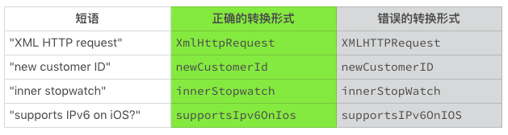
2. 蛇形命名法（snake_case）
在蛇形命名法中，单词之间通过下划线“_”连接，比如“out_of_range”。
3. 串式命名法（kebab-case）
在蛇形命名法中，单词之间通过连字符“-”连接，比如“background-color”。
4. 匈牙利命名法
在匈牙利命名法中，标识符由一个或者多个小写字母开始，这些字母用来标识标识符的类型或者用途。标识符的剩余部分，可以采取其他形式的命名法，比如大驼峰命名法。
如果起始的小字母用来表示标识符的数据类型，这种命名法也被称为系统匈牙利命名法。 比如：
- lAccountNum 标识一个 _ 长整数 _（首字母“l”，long）。
- szName 标识一个 _ 零字符结束的字符串 _（首字母“sz”，zero-terminated string）。
如果起始的小字母用来表示标识符的实际用途，这种命名法也被称为应用匈牙利命名法。 比如：
- rwPosition 标识一个 _ 行 _（首字母“rw”，row）。
- usName 标识一个 _ 非安全字符串 _（首字母“us”, unsafe string）。
由于在微软产品中的广泛使用，匈牙利命名法曾经是一种流行的命名形式。然而，由于这种命名会带来不必要的记忆负担和阅读障碍，导致命名规则的执行和名称的维护都很困难，微软已经抛弃了这种命名形式。
由于历史的原因，还有很多代码使用这种命名形式。阅读这些代码时，你可以选择性地忽略这些表示类型或者用途的字母前缀。
Java 命名规范
一段代码，是不是只能使用一种命名方法？ 一般来说，一个编码规范会组合使用这些命名方法，每一种命名方法都被规定了适用的范围。 这样就形成了命名规范。
比如，Java 的命名规范可以使用下表来表示。
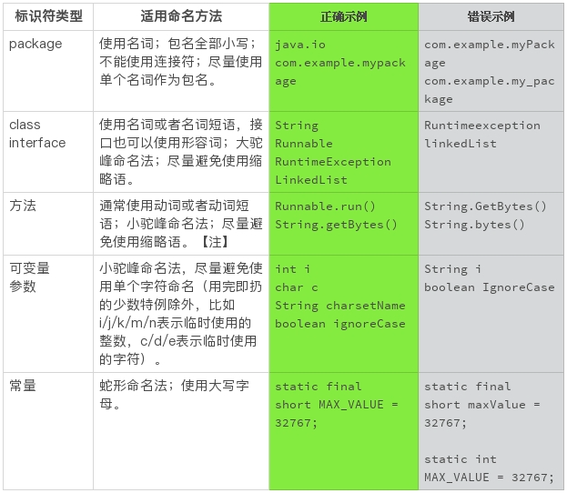
需要注意的是，常量必须是真的不能改变的量，不打算改变或者能够改变的量都不能算作常量。
比如，下面的例子声明的是常量：
static final short MAX_VALUE = 32767;
static final Set<String> EMPTY_NAMES =
Collections.unmodifiableSet(Collections.emptySet());
下面的例子声明的就不是常量，它们的值都可以改变：
static short nonFinalShort = 32767;
static final Set<String> mutableNames = Collections.emptySet();
static final String[] names = { "Alice", "Bob", "Tom" };
需要注意的是，方法标识符使用动词或者动词短语，这是传统的方法命名。如果能够分隔开配置（set）和使用（get），使用名词的方法标识符。比如 Builder 模式的接口设计。这个接口设计和命名惯例，我们以后再讨论。
怎么取好名字？
了解了命名方法后，你是不是想知道怎么取好名字呢？一般来说，给代码取名字，需要遵守如下三条原则。
1. 要有准确的意义
名字要能够准确、完整地表达出它代表的意义，可以见字知意，名副其实。
比如，表达式“a = b - c”的语法是没有什么问题，可是该表达式代表的实际含义并不清楚。相比而言，“grossIncome = grossRevene - costOfGoodsSold”就有很准确、清晰的现实意义。这样的命名更容易阅读和理解。
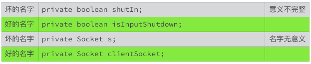
2. 严格遵守命名规范
不同的编程环境，偏爱不同的命名规范，比如 Java 倾向于使用驼峰命名法，C 语言倾向于使用蛇形命名法，CSS 使用串式命名法。 尽管如此，如果定义了个性化的命名规范，请严格遵守自定义的命名规范，如果没有定义个性化的命名规范，我们就需要严格遵守业界普遍公认的命名规范。
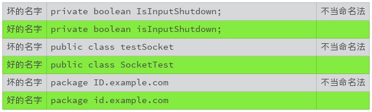3. 可读性优先
名字的可读性一定要优先考虑，一般需要注意以下几点。
- 可读性强的名字优先于简短的名字，尽量使用完整的词汇。
- 不要使用缩写、简写、缩略词，除非这些词语被广泛使用。
- 不要使用太短的名字，比如一个字母，除非是广泛接受的特例（i/j/k/m/n 表示临时使用的整数，c/d/e 表示临时使用的字符）。
- 避免含糊、混淆或者误导。
另外，不要混合使用英文和汉语拼音。由于很多类库使用的是英文，如果使用汉语拼音命名，会造成事实上的拼音名字与英文名字的混用，所以也要尽量避免使用拼音命名。
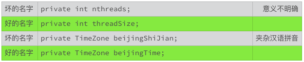
小结
简言之，取名字要做到“信、达、雅”（准确、直观、优美）。“信”和“达”是基本要求，有才气的你可以有“雅”的追求。
取好名字是编写优秀代码最基础也是最重要的一项修炼。 你不妨试试上述的原则和规范，将它们用于新代码，或者整理老代码。 仅仅因为名字的优化，你就会立刻感受到代码质量的大幅度提升！
一起来动手
所以为了让你更好地实践，我找了一段 Java 代码。你来试试，这段代码中有哪些名字可以优化？ 欢迎你把优化的代码发在评论里，我们亲自感受下如何优化代码名字。
import java.util.HashMap;
import java.util.Map;
class Solution {
/**
* Given an array of integers, return indices of the two numbers
* such that they add up to a specific target.
*/
public int[] twoSum(int[] nums, int target) {
Map<Integer, Integer> map = new HashMap<>();
for (int i = 0; i < nums.length; i++) {
int complement = target - nums[i];
if (map.containsKey(complement)) {
return new int[] { map.get(complement), i };
}
map.put(nums[i], i);
}
throw new IllegalArgumentException("No two sum solution");
}
}
备注：代码选自https://leetcode.com/problems/two-sum/# 06代码整理的关键逻辑和最佳案例 写一篇文章，要层次清楚、段落分明，写代码也是这样。杂志排版，要布局合理，阅读舒适，代码的编排也要这样。
可是很多人想的是，代码能工作就行，不用讲究格式；时间紧，哪有时间整理代码。
可事实上，干净整洁的代码带给我们的，远远不止格式上的赏心悦目，它更可以减少错误，提高我们的编程速度与效率。因为代码的层次结构、格式部署，是我们对自己思维的整理，也是我们思考逻辑的展现。
很多人不愿意整理代码，觉得这项工作很麻烦。其实代码的整理并不复杂，也不需要什么高深的技巧。有效地使用空行、空格和缩进，简单的分割与对齐，就可以使得代码的视觉效果甚至质量发生巨大的变化，理顺编码的思路，提高编码的效率。这是一个付出少、收获大，值得养成的好习惯。
给代码分块
其实整理代码，就是给代码分块。我们的大脑接收信息是按照分块的模式进行的。一块就是一个可识别的信息，它被安放到短期记忆的“插槽”里。信息块的实际信息量是可变的，但是越简单、越具体的信息块越容易被记住和理解。
一份好的报纸或者杂志，文章本身往往很简短，或者被分割为简短的块。使用小段落、子标题，大量留白，版面切割，尽一切可能分解文章、版面，让眼睛舒适，让大脑有时间停留下来接受每个信息快。
一个代码文件，可以看做是一个杂志版面。在这个版面里，我们要把代码整理成清晰的模块，这样每一小块在视觉上和逻辑上都是可以区分的，可以帮助我们阅读和记忆，减轻眼睛和大脑的疲劳。
比较下面的两种形式的语句。这两种形式，在实际逻辑上是完全相同的。但是，第二个语句使用了更细化的块，这样视觉形式和逻辑形式都是清晰直观的。
if (firstName != null && lastName != null)
if ((firstName != null) && (lastName != null))
如果一段代码放眼望去都是大块大块的，那对于一个初学者来说，阅读和理解就非常困难。他需要将复杂的表达式再次分解，分解到可以单独理解的变量和运算符，再重新组合。
你看，这样是不是很麻烦？
一个好的程序员，要识别并且区分代码块，让它们易于阅读和辨认。程序代码分块时，我们需要注意以下三个点。
- 保持代码块的单一性，一个代码块只能有一个目标。代码块内所有的内容都是为了一个目标服务的，不能把无关的内容放在同一个代码块里。同一个代码块里语句的相互联系比与相邻代码块里的语句关系更为紧密；
- 注意代码块的完整性。代码块是一个完整的信息块。一个代码块要表达一个相对完整的意思，不能一个意思没说完就分块了，就像话说了半句一样；
- 代码块数量要适当。代码块过多，会让人觉得路径太长，逻辑复杂，不容易阅读理解。一个基础的代码块最好不要超过 25 行（通常显示屏小半个页面），否则就会有增加阅读理解的困难。
我们读文章的时候，如果段落划分合理，那么读一次差不多就能清楚地记住了。日常阅读的新闻、时事、娱乐报道，和学术著作相比，通常会使用更短的段落。这就是有意缩短信息快，使报道更加适合快速阅读的需要。
同样的，我们划分代码块，就是要让人清楚地阅读和理解。如果一个代码块太长，说明我们还可以进一步细分它。
使用空白空间
给代码分块的办法之一，就是有效地使用空白空间。空白的空间虽然没有内容，但会给我们重要的信息提示。因此我们写代码的时候，一定要合理地运用空白。
为什么呢？
靠近的代码会形成一个视觉块，并且具有隐含的关联。分开的代码，意味着上下两段代码的关联没有那么紧密。这种视觉效果会给我们暗示，代码靠得越近，代码之间的关系越紧密。
因此，空白区域，不仅仅可以用来分割代码，还展示了代码之间的关系。
代码的分块，通过空格、缩进和空行来整理，或者分割。其中空格可以进行逻辑区隔，用于同一行代码内部的信息分块。缩进用于水平分割，用于表示代码块的级别。空行用于垂直分割，用于分开同级别的不同代码块。
下面这个简图，可以直观地表示这种代码块的布局方式。
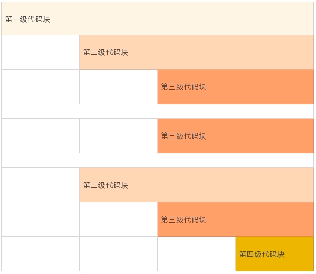或者，也可以参考下面的代码示例。 这段代码，也包含了使用空格区分同一行代码内部的信息块。
package coding;
public class CodingFormat {
public static void main(String[] args) {
System.out.println(
"German say hello with "
+ Greeting.GERMAN.getGreeting());
}
private static enum Greeting {
ENGLISH ("English", "Hello"),
SPANISH ("Spanish", "Hola"),
GERMAN ("German", "Hallo"),
MANDARIN ("Mandarin", "Ni Hao");
private final String language;
private final String greeting;
private Greeting(String language, String greeting) {
this.language = language;
this.greeting = greeting;
}
private String getGreeting() {
return greeting;
}
private String getLanguage() {
return language;
}
}
}
那么到底如何利用空白空间呢？可以分为下面四个方法，我来一一讲解一下。
同级别代码块靠左对齐
我们阅读的习惯顺序是从左到右，代码也如此。因此不同行，但同级别的代码要靠左对齐。
比如，上面的 CodingFormat 例子中，main() 方法和 Greeting 枚举类都是 CodingFormat 的下一级内容，属于同一级别的两个块。 两个代码块的左侧要对齐。
上面的 CodingFormat 例子中的枚举常量、枚举类的变量、枚举类的方法，也是属于同一级别的内容。 对应地，左侧要对齐。
同级别代码块空行分割
我们阅读代码总是从上往下读，不同行的同级别的代码块之间，要使用空行分割。
当我们读到一个空行的时候，我们的大脑就会意识到这部分的信息结束了，可以停留下来接受这段信息。 另外，我们阅读代码的时候，碰到空白行，我们也可以暂停，往回看几行，或者重新回顾一下整个代码块，梳理逻辑、加深理解。
比如，上面的 CodingFormat 例子中，main() 方法和 Greeting 枚举类之间的空白行，getGreeting() 和 getLanguage() 方法之间的空行，都是用来分割不同的信息块的。greeting 变量和 Greeting 构造方法之间的空白行，表示变量声明结束，下面是开始定义类的方法，同样起到分割信息块的作用。
下一级代码块向右缩进
我们上面讲了同级别的代码格式，那么不同级别的呢？
区分不同行的不同级别的代码，可以使用缩进。缩进的目的是为了让我们更直观地看到缩进线，从而意识到代码之间的关系。
缩进虽然是一个共识，但怎么缩进是一个富有争议的话题。不同的语言，不同的程序员，有着不同的偏好。
我刚开始工作时，编写代码必须使用制表符缩进，并且要把制表符设置为四个字符空间。那个时候，还没有什么 IDE 可以依赖，大家都使用 vi 编辑器编写代码。缺省的，vi 制表符使用八个字符空间。所以，那个时候我们看代码的第一件事，就是看看 vi 配置有没有把制表符设置为四个字符空间。 要不然的话，代码就凌乱得找不到头绪。
现在，OpenJDK 的代码里已经不允许存在制表符了，缩进统一使用四个空格。也有的缩进规范使用两个空格，或者八个空格。
上面的 CodingFormat 例子中，我们使用了四个空格作为一个缩进单元。下面，我们看看两个空格的缩进，以及八个空格的缩进效果。
两个空格的缩进：
package coding;
public class CodingFormat {
public static void main(String[] args) {
System.out.println(
"German say hello with " + Greeting.GERMAN.getGreeting());
}
private static enum Greeting {
ENGLISH ("English", "Hello"),
SPANISH ("Spanish", "Hola"),
GERMAN ("German", "Hallo"),
MANDARIN ("Mandarin", "Ni Hao");
private final String language;
private final String greeting;
private Greeting(String language, String greeting) {
this.language = language;
this.greeting = greeting;
}
private String getGreeting() {
return greeting;
}
private String getLanguage() {
return language;
}
}
}
两个空格的缩进，可以为每一行语句释放出更多的空间，从而减少换行，方便我们使用较长标识符或者语句。
两个空格的缩进，视觉上，缩进线靠得太近，相对而言，更容易混淆代码的分块级别。这是两个空格缩进的一个小缺点。
我们再来看下八个空格的缩进：
package coding;
public class CodingFormat {
public static void main(String[] args) {
System.out.println(
"German say hello with "
+ Greeting.GERMAN.getGreeting());
}
private static enum Greeting {
ENGLISH ("English", "Hello"),
SPANISH ("Spanish", "Hola"),
GERMAN ("German", "Hallo"),
MANDARIN ("Mandarin", "Ni Hao");
private final String language;
private final String greeting;
private Greeting(String language, String greeting) {
this.language = language;
this.greeting = greeting;
}
private String getGreeting() {
return greeting;
}
private String getLanguage() {
return language;
}
}
}
八个空格的缩进，视觉上可以看到缩进线明显，缩进的级别也容易辨认。
但过多的缩进空格也有缺点。它很容易超过每行字数的限制，比如屏幕每行可容纳字符的限制。特别是当我们使用较长标识符或者语句的时候，如果每行字符空间较小（手机屏幕），就很容易导致自动换行，让代码变得难以阅读。
另外，如果我们使用八个空格作为一个缩进单元，为了代码的整洁性，我们往往会被迫使用最少的缩进嵌套，这也导致了额外的复杂性，可读性就降低了。
由于我们倾向于使用有准确意义的命名，标识符的长度往往是一个不能忽视的因素。现在的编码规范，四个空格的缩进最为常见，二个空格的缩进次之，八个空格的缩进使用的较少。
同行内代码块空格区隔
我们上面讲的都是不同行的代码该如何注意格式。位于同一行内的代码块，同样需要注意。我们可以使用空格区分开不同的逻辑单元。
比如，逗号分隔符后要使用空格，以区分开下一个信息：
String firstName, lastName;
双目运算符或者多目运算符，运算符前后都要使用空格：
firstName != null
(firstName != null) && (lastName != null)
一行一个行为
上面我们讨论了代码块的一些整理办法。 那对于每一行代码，有没有整理办法呢?
当然是有的。
一个重要的原则是，每一行代码仅仅表示一个行为。这样每一行的代码才是一个常规大小的、可以识别的基础信息块。
比如说，下面的这行代码就包含了两个行为，一个是判断行为，一个是执行行为。 两个行为放在一行，这样的代码不仅看起来有些乱，我们的大脑处理起来也有些懵。
if (variable != null) variable.doSomething();
如果分隔开这两个行为，信息块的区隔会更明显，代码会更清晰：
if (variable != null) {
variable.doSomething();
}
一般一个完整的表达式可以看作是一个独立的行为。
编辑器的宽度，屏幕的宽度，都是有限制的。当一个完整的表达式比较长时，就需要换行。
基本的换行原则
我们前面讨论的代码分块的基本思想，同样适用于换行。基本的换行规范需要考虑以下三点。
- 每行代码字符数的限制。一般情况下，每行代码不要超出 80 个字符（ 80 个字符是传统终端的宽度，比如 vi 编译器）。由于屏幕尺寸和代码阅读终端的变化，现在的很多规范，开始使用 120 个字符的限制。所以我们编码的时候，需要留意一下；
- 如果一行不足以容纳一个表达式，就需要换行；
- 一般的换行原则包括以下五点。
- 在逗号后换行。
String variable = anObject.getSomething(longExpressionOne,
longExpressionTwo, longExpressionThree);
- 在操作符前换行。
String varibale = longStringOne + longStringTwo
+ longStringThree;
- 高级别的换行优先。
anObject.methodOne(parameterForMethodOne,
anObject.methodTwo(parameterForMethodTwo));
/ conventional indentation
int runningMiles = runningSpeedOne * runningTimeOne
+ runningSpeedTwo * runningTimeTwo;
// confusing indentation
int runningMiles = runningSpeedOne
* runningTimeOne + runningSpeedTwo
* runningTimeTwo;
- 新的换行与上一行同级别表达式的开头对齐。
anObject.methodOne(parameterOne,
parameterTwo,
parameterTwo);
- 如果上述规则导致代码混乱或者代码太靠右，使用 8 个空格作为缩进（两个缩进单位）。
anObject.methodOne(parameterForMethodOne,
anObject.methodTwo(parameterOneForMethodTwo,
parameterTwoForMethodTwo,
parameterThreeForMethodTwo));
// bad indentation
if ((conditionOne && conditionTwo)
|| (conditionThree && conditionFour)) {
doSomething();
}
// a better indentation, using 8 spaces for the indentation
if ((conditionOne && conditionTwo)
|| (conditionThree && conditionFour)) {
doSomething();
}
小结
今天，我给你讲了整理代码的重要性以及一些方法。其实归根结底，整理代码有一个基本的思想，那就是把代码分割成大脑能够有效识别并记忆的信息块，通过合理地使用空行、空格和缩进，把这些信息块清晰地呈现出来。清晰的代码结构，可以帮助我们理顺编码的思路，提高编码的效率，减少编码的错误，提高代码的可读性，降低代码的维护成本。
总之，整理代码带给我们的好处，是很多的。
一起来动手
还记得我们上一节的练习题吗？上次我们改名字，这次我们来修改一下代码的编排。欢迎你把优化的代码公布在讨论区，也可以写下你的优化思路，我们一起来看看编排优化后的代码是不是更好阅读了呢？
import java.util.HashMap;
import java.util.Map;
class Solution {
/**
* Given an array of integers, return indices of the two numbers
* such that they add up to a specific target.
*/
public int[] twoSum(int[] nums, int target) {
Map<Integer, Integer> map = new HashMap<>();
for (int i = 0; i < nums.length; i++) {
int complement = target - nums[i];
if (map.containsKey(complement)) {
return new int[] { map.get(complement), i };
}
map.put(nums[i], i);
}
throw new IllegalArgumentException("No two sum solution");
}
}
07写好注释，真的是小菜一碟吗？
上一讲中我们讲了如何整理代码，但有些时候，即便我们取好了名字，编排好格式，但代码还是让我们抓狂，不明出处，不好理解。这时候，就需要注释登场了。
顾名思义，注释就是对代码的解释。注释不需要运行，它是用来提高代码的可读性和可维护性的。不好的注释会使代码变得更糟糕，使人更抓狂。
理想虽丰满，现实很骨感。注释虽小，写好不易。那写注释有哪些注意事项？有没有什么技巧呢？今天我们就来聊聊写注释这个话题。
当然了，不同的语言，注释的语法差别很大。为方便起见，我们统一使用 Java 语言的注释语法，来解释说明写好注释的基础原则。
注释是无奈的妥协
那你是不是有这样一个问题，源代码一定需要解释吗？
其实在理想状况下，代码不需要注释。理想的代码，命名恰当，结构清晰，逻辑顺畅，含义显而易见。但正如一个作家无法预料他的读者能否清晰地理解他的文字一样，一个程序员也不能判断他的读者能否清晰地理解他写的代码。所以，写注释其实是下巧功夫。
可是，注释也是一个麻烦鬼，可能会给我们带来三个麻烦。
首先，因为注释不需要运行，所以没有常规的办法来测试它。 注释对不对？有没有随着代码变更？这些问题都是写注释需要注意的地方。注释难以维护，这是使用注释带来的最大的麻烦。
另一个麻烦是，注释为我们提供了一个借口。使用注释来解释代码，是注释的本意。但是，我们有时候会过度依赖解释，从而放弃了潜在的替代方案，比如更准确的命名，更清晰的结构，更顺畅的逻辑等等。 注释，被我们用成万能的狗皮膏药，有时会让代码更糟糕。
比如，下面的代码和注释，看起来没毛病，但读起来很吃力。
String name1; // first name
String name2; // last name
如果使用准确、有意义的命名，我们就可以去掉没有意义的注释了。
String firstName;
String lastName;
还有一个麻烦，就是注释的滥用。 由于注释部分不被执行，那么就可以被用来注释掉一些不需要的东西。比如，在正式的产品代码中，注释掉调试信息、代码块、俏皮话等等。
比如说，看到下面的注释，你是不是立即就转移注意力了？ 我理解这个注释的初衷是幽默一下，但是众口难调，这样的注释有些人感觉到的不是幽默，而是散漫和业余。
// 哈哈，有没有人姓好，叫“好名字”？
String firstName;
String lastName;
讲了这么多，总结一下，注释是代码的一部分，是需要阅读的内容，目的是让其他人能更好地理解我们的代码，写注释需要我们有“用户思维”。虽然也有过度依赖注释的情况，但是，对于大部分程序员来说，问题还是注释太少，而不是太多。
几种常见注释类型
接下来，我们就聊聊几种常见的注释类型。一个典型的源代码文件，一般包含不同类型的注释。不同类型的注释，有着不相同的要求，适用于不同的注释风格和原则。
第一种类型，是记录源代码版权和授权的，一般放在每一个源文件的开头，说明源代码的版权所有者，以及授权使用的许可方式，或者其他的公共信息。比如，如果是个人的代码，版权信息可以写成：
/*
* Copyright (c) 2018, FirstName LastName. All rights reserved.
*/
一般来说，版权和授权信息是固定的。版权和授权信息是法律条款，除了年份，一个字都不能更改。对于每个源代码文件，我们记得复制粘贴在文件开头就行。需要注意的是，如果文件有变更，记得更改版权信息的年份（比如上例中的 2018）。
第二种类型，是用来生成用户文档的，比如 Java Doc。 这部分的作用，是用来生成独立的、不包含源代码的文档。 这些文档帮助使用者了解软件的功能和细节，主要面向的是该软件的使用者，而不是该软件的开发者。 比如 Java 的 API 规范的文档。
第三种类型，是用来解释源代码的。换句话说，就是帮助代码的阅读者理解代码。这是大家默认的注释类型，也是我们今天讨论的重点。
简化注释的风格
上面我们介绍了三种常见的注释类型，下面就针对这三种注释类型，再给你介绍三种风格的注释。
针对第一种注释类型，也就是固定的版权和授权信息，使用一般的星号注释符（/-/）。注释块的首行和尾行只使用星号注释符，中间行以缩进一个空格的星号开始，文字和星号之间使用一个空格。注释的每行长度限制，和代码块的每行长度限制保持一致。
比如：
/*
* Copyright (c) 2018, FirstName LastName. All rights reserved.
*/
针对第二种注释类型，即生成用户文档的注释，使用 Javadoc 要求的格式，文档注释符（/-*/）。 除了首行使用特殊的文档注释符（/），其他的格式和第一种风格保持一致。
比如：
/**
* A {@code Readable} is a source of characters. Characters from
* a {@code Readable} are made available to callers of the read
* method via a {@link java.nio.CharBuffer CharBuffer}.
*
* @since 1.5
*/
public interface Readable {
...
}
针对第三种注释类型，也就是代码解释注释，只使用行注释符（//）。 每行长度限制，和代码块的每行长度限制保持一致。
比如：
// Verify that the buffer has sufficient remaining
private static void verifyLength(
ByteBuffer buffer, int requiredLength) {
...
}
String myString; // using end-to-line comment
// This is a multiple line comment. This is a multiple
// line comment.
if (!myString.isEmpty()) {
...
}
写代码注释时，我一般只用这三种风格。它们各自有固定的使用范围，简单直观，规避不必要的代码错误。也不会让别人混淆注释的类型。
我不会使用如下的注释，因为这种注释风格可能和有效的代码混淆在一起。 注释越长，错误越容易隐藏起来。
/*
* This is a multiple line comment. This is a multiple
* line comment.
if (programingLanguage.equals("Java")) {
...
} */
当然了，肯定有人会喜欢上述的风格，因为这种风格可以注释掉不用的代码。这一点，方便我们调试分段代码。我自己在调试的时候也喜欢使用这种注释方式，但是一旦调试结束，我就会清理掉这些注释。
从我自己的经验来看，养成这样的习惯很有帮助：**如果一段代码不再需要，我会清理掉代码，而不会保留这个注释掉的代码块。**不要在源代码里记录代码历史，那是代码版本管理系统该干的事情。
注释的三项原则
那么，用来解释源代码的注释有什么需要注意的地方吗？为了规避注释的种种麻烦，有没有什么原则我们必需要遵守呢？我总结了以下三点。
- 准确，错误的注释比没有注释更糟糕。
- 必要，多余的注释浪费阅读者的时间。
- 清晰，混乱的注释会把代码搞得更乱。
比如，当我们说编程语言时，一定不要省略“编程”这两个字。否则，就可能会被误解为大家日常说话用的语言。这就是准确性的要求。
如果代码已经能够清晰、简单地表达自己的语义和逻辑，这时候重复代码语义的注释就是多余的注释。注释的维护是耗费时间和精力的，所以，不要保留多余的、不必要的注释。
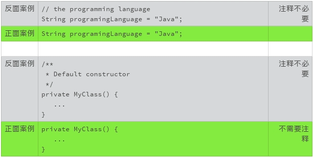如果注释和代码不能从视觉上清晰地分割，注释就会破坏代码的可读性。
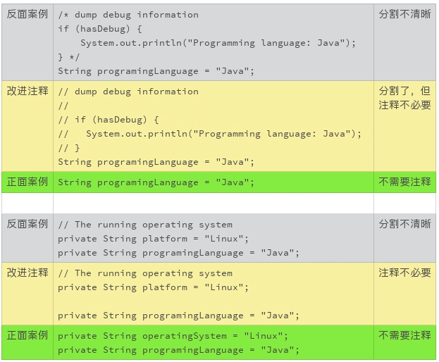另外，不要在代码里标注你想要做的工作和已经做过的工作。比如使用 TODO，记录代码更改记录等等。这些信息会干扰代码的阅读者。
特别需要注意的是，我们可以使用临时的调试语句，但是，不要把代码的调试语句保留在提交的代码里。这些调试语句，既不容易维护，也不容易阅读。
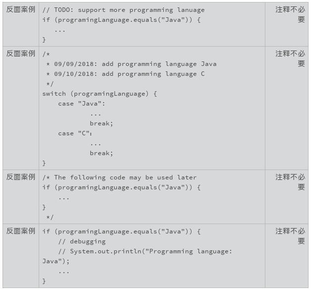
注释用英文还是汉字呢？
你会注意到，上面的代码案例中，我基本使用的是英文注释，在这里我也建议你使用英文注释。
为什么呢？
因为使用中文注释，不是一个所有人都能接受的风格。一部分人，一部分公司，并不接受中文注释。特别是国际化的项目，比如说贡献给 Apache 的项目，就没有办法使用中文注释了。而且，如果是去面试，我也会尽最大的努力不使用中文注释，以免踩到坑。
除了接受度之外，汉字带来的真正困扰是，它会影响到编码风格的偏好。比如命名的问题，到底是应该使用拼音还是英文？ 由于代码命名只能使用 ASCII 字符，注释里的拼音、英文、汉字混杂的问题该怎么处理？代码编辑时，字符的切换也是一个麻烦事。比如，空格使用汉字全角，编译器会报错，但是肉眼看不到，问题排查起来也很心累。
那么什么情况下使用汉字呢？
面对国内的需求文档的时候。因为很多项目的需求文档一般是汉字书写的。程序的编码，当然需要按照需求来。如果需求的引用还要翻译成英文，那就太麻烦了。
还有一种状况，就是团队的英文水平不太好。与其使用难以读懂的蹩脚英文，不如使用大家更熟悉的中文注释来的便捷。不过，我对这种状况的担心越来越少，现在大部分年轻软件工程师的英语水平是可以让人放心的。
试着对比下面的几种注释，你喜欢哪一种呢？
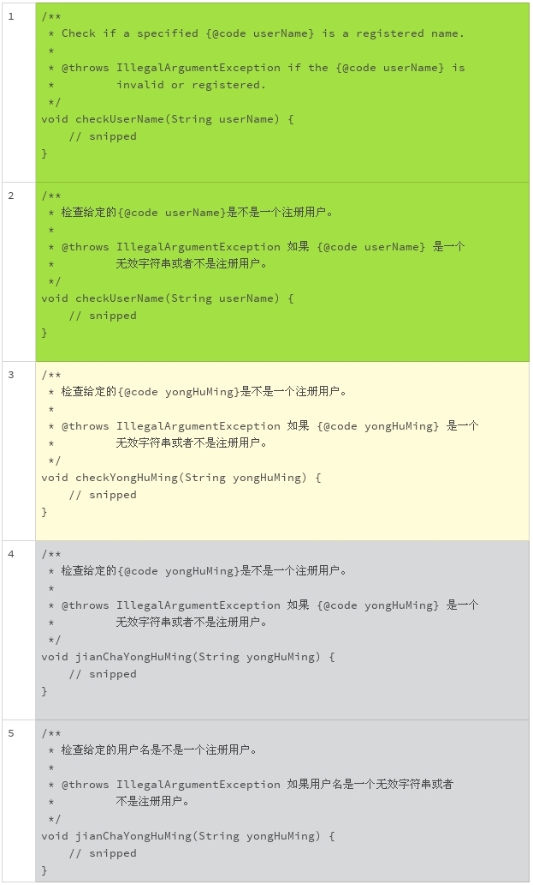
上面的五种不同的风格，我个人比较喜欢第一种和第二种，第三种也可以接受。 但是我会尽量避免第四种和第五种风格。
总结一下，今天我们讨论了怎么写好注释这个话题，希望你能理解一个基本的原则：注释是用来提高代码的可读性和可维护性的。 不要让注释偏离了这个原则，破坏了代码的逻辑和可读性。你也可以实践一下我们讨论的“三项原则”和“三种风格”，看看能不能让你的代码变得更友好？
一起来动手
还记得我们上一节的练习题吗？前面，我们改了名字，改了编排。这一次，我们来修改注释。认真读一下这段代码，看看有需要增加或者修改注释的地方吗？欢迎你把优化的代码公布在讨论区，我们一起来感受修改后的代码是不是更好阅读，更好维护。
import java.util.HashMap;
import java.util.Map;
class Solution {
/**
* Given an array of integers, return indices of the two numbers
* such that they add up to a specific target.
*/
public int[] twoSum(int[] nums, int target) {
Map<Integer, Integer> map = new HashMap<>();
for (int i = 0; i < nums.length; i++) {
int complement = target - nums[i];
if (map.containsKey(complement)) {
return new int[] { map.get(complement), i };
}
map.put(nums[i], i);
}
throw new IllegalArgumentException("No two sum solution");
}
}
08写好声明的“八项纪律”
我们在前面讨论了该怎么取一个好名字。在编程语言里，我们使用标识符来表示不同的逻辑和对象。声明就是用来定义这些标识符的。标识符声明的地方，就是取名字和第一次使用名字的地方。这一次，我们聊一聊该怎么声明一个标识符。
“声明”是我们和标识符初次见面的地方，第一印象就显得特别重要。如果我们忘记了，回头能够清晰地找到它，也很重要。如果我们印象模糊了，回头能够重新认识它，对于我们阅读程序也有很大的帮助。
一个标识符，不仅仅只是一个名字。 像人分男女、高矮胖瘦一样，标识符也可以有附加信息，用来增强人们对它的认识。
一个声明，一般至少包含两个部分，一个是标识符的名字，一个是标识符的类型。 比如：
int size;
有的声明，还有修饰和限定部分，比如 Java 的访问控制修饰符（private，public 等）：
private int size;
或者 C 语言的存储类别限定符（auto，extern 等）：
auto int size;
写声明很简单，但写好声明也并非易事。我们以 Java 语言为例来讨论声明的编码风格。在 Java 语言里，声明可以用来定义类、方法、类变量、局部变量和常量。不同声明的语法有着巨大的差别，但是也有很多共通的地方，你可以把这些思路用在自己熟悉的语言上。
接下来，我会带你一起来学写好声明的“八项纪律”。
取一个好名字
既然是标识符，就涉及到取名字的问题。我们前面已经讨论过“怎么取好名字”这个话题了，你可以复习一下。
一行一个声明
我们在前面讨论过“一行一个行为”的代码整理规则。这一规则，同样适用于标识符的声明。不推荐在同一行里声明多个变量，即使这一行很短。
这样可以很方便地变更和维护代码。 比如，下面的两个代码变更，第二种格式更容易发现大意的错误。
- int size;
+ int size, length;
int size;
+ int length;
下面这个代码变更例子，也是同理。
- int size, length;
+ int size; // size of the list
+ int length;
- int size;
+ int size; // size of the list
int length;
另外，不要在同一行声明不同类型的标识符。
需要注意的是，表示数组的中括号“[]”是类型的一部分，而不是标识符的一部分。无论是 Java 语言，还是在 C 语言的代码中，我都建议把数组符号放在类型该在的地方。
局部变量需要时再声明
标识符的声明应该和它的使用尽可能地靠近，特别是局部变量的标识符声明。这样在视觉上，标识符的定义和使用，可以方便我们阅读和记忆。
比如，在下面的例子中，GroceryStore 的声明就太早了。如果代码再长一些，等我们读到代码的末尾时，前面声明的变量很可能都忘记了，如果还要返回来查看这个具体的声明，那就太麻烦了。
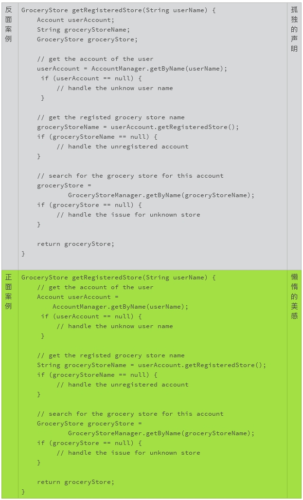
类属性要集中声明
同样是为了阅读和记忆，类变量的声明则要集中。因为类变量无论是私密变量，还是公开变量，在类的方法实现中，随时都可以调用。我们需要把这些变量放在一起，以便于修改和查找。
在下面的例子中，变量的声明散乱在类的代码块里。如果我们想要新加一个方法，或者调整方法声明的顺序，代码马上就会变得混乱不堪。
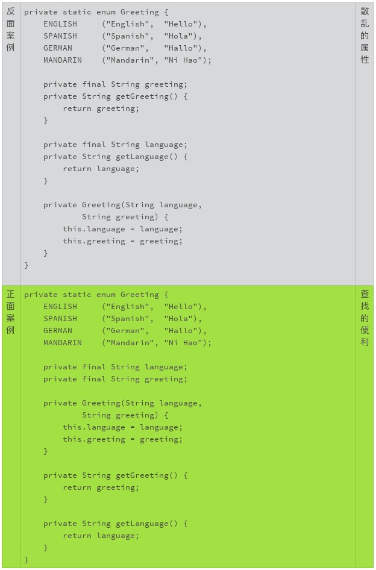
声明时就初始化
除非变量的初始值依赖于更多的条件，或者涉及到一定的计算，否则，声明时就应该完成初始化。声明时初始化，可以防止初始化的遗漏或者不必要的代码重复。
在下面的例子中，你可以设想一下，如果变量 isNegotiated 是后来加入的属性，哪一种编码方式更容易变更、更容易维护？
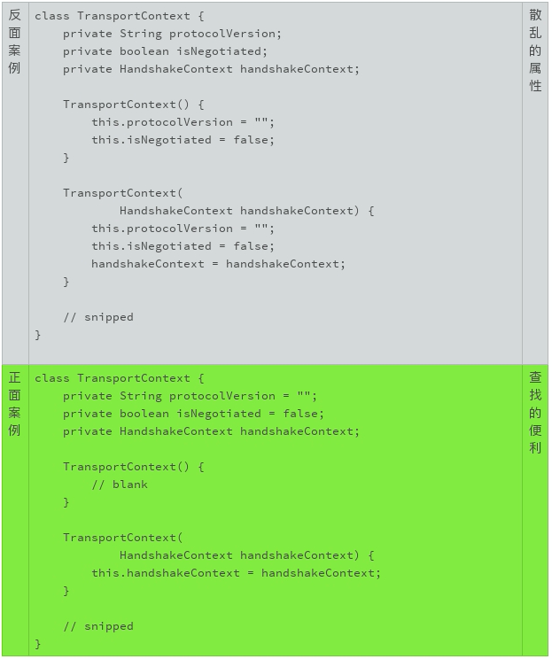
尾随的花括号
一般来说，类声明和方法声明后，要使用花括号把实现的代码包括进来。花括号的使用语法很随意。我不建议代码中混杂地使用不同的格式。我只推荐一种方法：
- 左括号不要单独成行，要紧随在语句尾部，以一个空格隔开；
- 右括号单独一行。
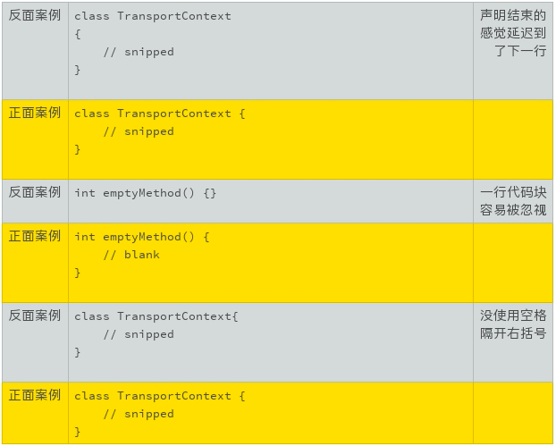
靠紧的小括号
小括号的使用语法也可以很随意。小括号一般用来识别一个标识符是不是方法标识符，所以建议小括号要紧靠着标识符，中间不要有空格。
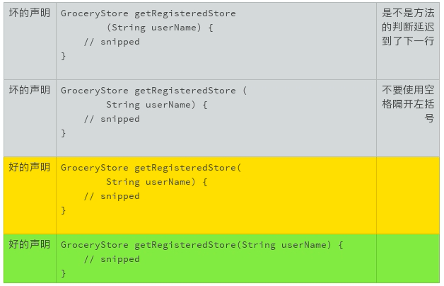
搜索优化的换行
搜索优化是我们编写代码时要考虑的一个因素。搜索优化既包括针对搜索引擎的优化（SEO），也包括针对编辑器（vi, Netbeans）以及系统工具（grep）的搜索优化。
常见的搜索模式有：
- “public class”
- “abstract class”
- “class TheClassName”
- “extends TheClassName”
- “implements TheInterfaceName”
- “theMethodName(”
这些常用的搜索模式给了我们一个很好的启示：语义相关的词语，常见的搜索模式，要尽量放在用一行。
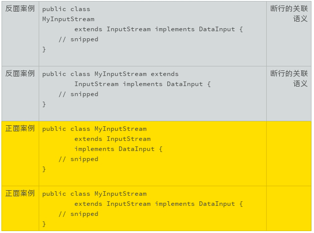
小结
我们讲完了写好声明的八项原则，虽然相对来说比较细致，但基本的大原则主要有两个：
- 取好名字
- 容易识别
掌握住这两条大原则，你会慢慢积累更多的最佳实践案例和纪律细节，让自己的代码声明越来越好读、越来越好用。
一起来动手
所以为了让你更好地实践，我找了一段 Java 代码。你来试试看，怎么把这段代码改得更漂亮？欢迎你把优化的代码公布在讨论区，我们一起来看看这段代码都有哪些可以改进的地方。
import java.util.ArrayList;
import java.util.HashMap;
import java.util.List;
import java.util.Map;
class Solution {
/**
* Return a list of the words in words that match the given pattern.
*
* A word matches the pattern if there exists a permutation of
* letters p so that after replacing every letter x in the pattern
* with p(x), we get the desired word.
*
* Example:
* Input: words = ["abc","deq","mee","aqq","dkd","ccc"],
* pattern = "abb"
* Output: ["mee","aqq"]
*
* Explanation: "mee" matches the pattern because there is
* a permutation {a -> m, b -> e, ...}.
*
* "ccc" does not match the pattern because
* {a -> c, b -> c, ...} is not a permutation, since a
* and b map to the same letter.
*/
public List<String> findAndReplacePattern(String[] words, String pattern) {
List<String> ans = new ArrayList();
for (String word: words)
if (match(word, pattern))
ans.add(word);
return ans;
}
public boolean match(String word, String pattern) {
Map<Character, Character> M = new HashMap();
for (int i = 0; i < word.length(); ++i) {
char w = word.charAt(i);
char p = pattern.charAt(i);
if (!M.containsKey(w)) M.put(w, p);
if (M.get(w) != p) return false;
}
boolean[] seen = new boolean[26];
for (char p: M.values()) {
if (seen[p - 'a']) return false;
seen[p - 'a'] = true;
}
return true;
}
}
备注：代码选自https://leetcode.com/problems/find-and-replace-pattern/
09怎么用好Java注解？
如果你使用面向对象的概念和技术有一段时间了，不知道你会不会有这样的困惑： 面向对象技术带来的麻烦，一点都不比它带来的好处少！
比如说，我们辛辛苦苦继承了一个类，重写了它的方法。过几天，这个类居然修改了它的接口，而且没人通知我们。然后，我们写的子类还可以美滋滋地编译，运行，就是总出错误，怎么调试都没发现这个子类的实现有什么不妥。直到有人说，父类变了！这时候，我们就想找杯咖啡暖暖手，一个人静静。
面向对象技术确实有它值得傲娇的地方。但是，只有把类似上面的小麻烦解决掉，它的使用才更合理。 比如说，父类做了修改，能不能立即就通知我？ 别等到问题出现了，我们还被蒙在鼓里。
Java 注解就可以帮助我们。
什么是 Java 注解
Java 注解是 Java 1.5 引入的一个工具，类似于给代码贴个标签，通过注解可以为代码添加标签信息。这些标签信息可以添加在字段、方法和类上。开发工具、部署工具或者运行类库，可以对这些标签信息进行特殊的处理，从而获得更丰富的功能。
经过十多年的发展，注解已经成了 Java 生态系统一个非常重要的技术。使用注解可以大幅度降低我们的开发强度，提高工作效率，减少潜在的错误。像 Java 类库一样，注解也有了越来越丰富的定义和规范，成了我们需要掌握的重要技术之一。
我们这里只讨论编写规范的代码时，该怎么合理地使用注解，具体就是 Override、Deprecated、SuppressWarnings 这三个注解。更详细的 Java 注解技术和规范，以及如何自定义注解，需要你参考相关的文档。
在声明继承关系中，Java 注解该如何使用？
在代码编写中，继承和重写是面向对象编程的两个重要的机制。这两个机制，在给我们带来便利的同时，也顺便带来了一些麻烦，这就需要我们用到注解了。
第一个麻烦是，识别子类的方法是不是重写方法。比如下面的例子，在一般情况下，对代码阅读者来说，最直觉的感受就是，getFirstName() 这个方法不是重写方法，父类 Person 没有定义这个方法。
class Student extends Person {
// snipped
public String getFirstName() {
// snipped
}
// snipped
}
通常如果一个方法是重写方法，一定要使用 Override 注解，清楚地标明这个方法是重写的方法。 使用 Override 注解的另一个好处是，如果父类更改了方法，子类的编译就会出错。这样我们就能在第一时间获得通知，既可以及时地变更子类，也可以使父类的变更更加合理。
class Student extends Person {
// snipped
@Override
public String getFirstName() {
// snipped
}
// snipped
}
为什么要识别重写方法呢？这是因为继承的第二个麻烦。
第二个麻烦是，重写方法可以不遵守父类方法的规范。面向对象编程的机制，理想的状况是，父类定义了方法和规范，子类严格地遵守父类的定义。 比如 Person.getFirstName() 要求返回值是一个人的名，不包括姓氏部分，而且不可以是空值。但是子类 Student.getFirstName() 的实现完全有可能没有严格遵守这样的规范，不管是有意的，或者是无意的。 比如，返回了姓氏，或者返回了包括姓氏的姓名，或者可以返回了空值。
class Student extends Person {
// snipped
@Override
public String getFirstName() {
return null;
}
// snipped
}
编译器无法检查重写到底该怎么实现，保持重写方法的行为一致需要我们凭借经验、肉眼识别。一般来说，一个重写方法不应该改变父类定义的规范。如果的确需要改变，就要有充足的理由，以及面对潜在兼容问题的具体的解决办法。
比如上面的例子中，如果 Person.getFirstName() 不允许返回空值，应用程序可以很安心地使用返回值，而不需要检查空值。
boolean isAlice(Person person) {
return person.getFirstName().equals("Alice");
}
但是，有了可以返回空值的 Studen.getFirstName() 的重写，上面的代码就可能抛出 NullPointerException。一段简单的、严格遵守规范的代码，就变得危机四伏。
既然需要肉眼的判断，第一步就是要识别出重写方法。 识别方法越简单越好。
所以，重写的方法，一定要加上 Override 注解。这个注解，既可以提醒代码的阅读者，也提醒代码的书写者，要谨慎对待该方法在父类定义的规范。
识别出重写方法后，第二步就要判断重写的方法和父类规范的定义有没有冲突和抵触。
虽然一般情况下，子类的重写方法不应该改变父类的规范。但是，编写代码处处充满了无奈和妥协。极少数情况下，除了变更方法的规范，我们可能别无选择。 一旦这种情况发生，一定要明确标明，并注明潜在的后果。
如果重写方法既没有改变父类规范，也没有其他情况需要重点说明，重写方法就不应该有规范描述部分的存在。这样，可以减少规范描述对于阅读者的误导。我们当然需要了解具体的规范，但是应该查找、阅读父类的规范描述。
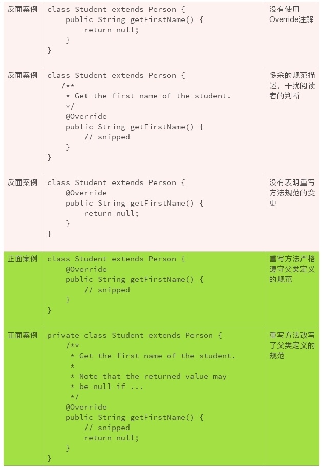继承和重写还有一些其他的麻烦，我们后面的章节接着再聊。
在废弃退役接口的情况下，如何使用注解？
一个软件，部署得越广泛，生命力越悠久，就越需要不断地改进、升级。而废弃不合理的设计，拥抱更新的思想，也是软件改进的一部分。
然而，软件接口的废弃，不是一件简单的事情。越是广泛使用的接口，它的废弃、退役越困难。
比如，下面的 String 构造方法，是 1994 年 Java 1.0 设计实现的方法。很快，人们发现了这个方法的局限性。在 1997 年发布的 Java 1.1 中，废弃了该构造方法以及其他相关的方法。到现在，已经废弃 20 多年了，但 Java 依然没有删除这些方法，因为 String 的使用太广泛了！
@Deprecated(since="1.1")
public String(byte ascii[], int hibyte) {
this(ascii, hibyte, 0, ascii.length);
}
无论对于软件的维护者，还是软件的使用者，废弃的接口都是不值得让我们继续耗费精力的。
如果软件的维护者继续在废弃的接口上投入精力，意味着这个接口随着时间的推移，它的实现可能会存在各种各样的问题，包括严重的安全问题，就连使用者也要承担这些风险。而且还会有用户持续把它们运用到新的应用中去，这就违背了废弃接口的初衷。更多的使用者加入危险的游戏，也增加了删除废弃接口的难度。
这就要求我们做好两件事情。
第一件事情是，如果接口的设计存在不合理性，或者新方法取代了旧方法，我们应该尽早地废弃该接口。
及时止损！
做好这件事情，需要我们使用 Deprecated 注解，并且用一切可以使用的办法，广而告之。对于代码而言，要在声明中使用 Deprecated 注解；在规范描述中，说明废弃的原因以及替代的办法；对于有计划要删除的接口，要注明计划删除的版本号。
下面是两个可以参照的 Java 代码废弃接口的例子：
java/lang/String.java:
/**
* Counts the number of stack frames in this thread. The thread must
* be suspended.
*
* @return the number of stack frames in this thread.
* @throws IllegalThreadStateException if this thread is not
* suspended.
* @deprecated The definition of this call depends on
* {@link #suspend}, which is deprecated. Further,
* the results of this call were never well-defined.
* This method is subject to removal in a future
* version of Java SE.
* @see StackWalker
*/
@Deprecated(since="1.2", forRemoval=true)
public native int countStackFrames();
java.security.Certificate.java:
/**
* <p>This is an interface of abstract methods for managing a
* variety of identity certificates.
*
* ... snipped ...
*
* @deprecated This class is deprecated and subject to removal
* in a future version of Java SE. It has been replaced by
* {@code java.security.cert.Certificate} and related classes.
* @see java.security.cert.Certificate
*/
@Deprecated(since="1.2", forRemoval=true)
public interface Certificate {
// snipped
}
第二件事情是，如果我们在现有的代码中使用了废弃的接口，要尽快转换、使用替换的方法。等到废弃方法删除的时候，再去更改，就太晚了，不要等到压力山大的时候才救火。
如果一个接口被废弃，编译器会警告继续使用的代码。Java 提供了一个不推荐使用的注解，SuppressWarnings。这个注解告诉编译器，忽略特定的警告。警告是非常有价值的信息，忽略警告永远不是一个最好的选项。
再次强调，除非万不得已，不要使用 SuppressWarnings。如果万不得已来临，请参考下面的例子。
@SuppressWarnings("deprecation")
private boolean myMethodUseDeprecatedMethod() {
// snipped
}
当然，这样的使用带来了一系列的后遗症。 由于，废弃的编译警告被无视，我们使用了废弃接口的事实就被淹没在代码的海洋里，再也进入不了我们的视野。不到废弃接口被删除的那一天，我们都意识不到我们的代码里使用了废弃的接口，我们的应用程序都要承担着废弃接口维护不足的种种风险，包括严重的安全风险。
后面我们还会谈到，不要轻易地更改现有的代码，即使这些代码很丑陋，散发着浓浓的腐臭味。但是，有一个例外，如果看到了使用 SuppressWarnings 的代码，我们要尽可能地想办法把相关的警告消除掉、把这个注解去掉，越快越好。
小结
Java 注解的功能很丰富，了解注解可以使得我们编码的工作更轻松。 这一次，希望我们记住三个基本的实践：
- 重写的方法，总是使用；
- 过时的接口，尽早废弃；
- 废弃的接口，不要使用。
一起来动手
Java 的注解非常丰富，功能也很强大。借这个机会，我想让大家互相分享一下，你最经常使用的注解是什么？什么情况下使用这个注解？这个注解给你带来哪些便利？欢迎你把你的经验发布在评论区，我们一起来学习更多的注解，一起来进步。
10异常处理都有哪些陷阱？
上一讲中我们聊了聊怎么用好 Java 注解，今天我们谈谈怎么处理异常。
处理好异常状况是掌握一门编程语言的基础，也是我们编程离不开的基本功。相信你对异常处理的机制已经很熟悉了。异常处理便捷、灵活、好用。但是，越好用的东西，我们越容易忽视它的缺陷。异常处理就有很多我们容易忽视的陷阱。今天，我们来聊聊这些问题，以及该怎么处理这些问题。
异常就是非正常
异常状况，就是不正常的状况。
异常状况的处理会让代码的效率变低。一个流畅的业务，它实现代码的执行路径，理想的状况就是没有任何异常状况发生。否则，业务执行的效率就会大打折扣。既然这样，我们就不应该使用异常机制来处理正常的状况。
这一点不难理解。可是，由于一门语言无法理解什么样的状况是正常状况，什么样的状况又是异常状况，也就无法限制异常机制使用的具体场景。所以作为程序员，我们需要自己解决好这个问题，不要滥用了异常机制。
比如说，很多 API 的设计有检查参数有效性的方法。如果参数通过检验，就没有异常抛出，否则就会抛出异常。在使用这个方法的代码时，我们需要检查有没有抛出异常来确认参数是否有效。
/**
* Check if the user name is a registered name.
*
* @throws IllegalArgumentException if the user name is invalid or
* not registered.
*/
void checkUserName(String userName) {
// snipped
}
这是一个糟糕的设计！
在这个例子中，如果 userName 字符串不符合规范，这是一个异常状况； 如果 userName 不是一个注册用户，这通常是一个正常状况。 在正常状况下使用异常处理，无疑会降低系统的效率，以及编码的效率。
所以正常的状况和异常的状况一定要分开、分清，不能混用。
/**
* Check if the user name is a registered name.
*
* @return true if the userName is a registered name.
* @throws IllegalArgumentException if the user name is invalid
*/
boolean isRegisteredUser(String userName) {
// snipped
}
分清异常的类别
我们上面讲了异常的一些基本概念，现在我们来讲讲异常的类别。在 Java 语言里，异常状况分为三类。
- 非正常异常（Error）：这类异常的命名以 Error 结尾，比如 OutOfMemoryError，NoSuchMethodError。这类异常，编译器编译时不检查，应用程序不需要处理，接口不需要声明，接口规范也不需要纪录；
- 运行时异常（RuntimeException）：这类异常的命名通常以 Exception 结尾，比如 IllegalArgumentException，NullPointerException。这类异常，编译器编译时不检查，接口不需要声明，但是应用程序可能需要处理，因此接口规范需要记录清楚；
- 非运行时异常：除了运行时异常之外的其他的正常异常都是非运行时异常，比如 InterruptedException，GeneralSecurityException。和运行时异常一样，命名通常以 Exception 结尾。这类异常，编译器编译时会检查异常是否已经处理或者可以抛出，接口需要声明，应用程序需要处理，接口规范需要记录清楚。
通常我们说的异常，指的是运行时异常和非运行时异常。对于非正常异常，我们通常使用“错误”这个词汇而不是“异常”来表示。 由于非正常异常不需要特别处理，使用“错误”这个词汇，并不会导致使用方面的误导。
非运行时异常还有一个别名，叫作检查型异常（CheckedException）。对应地，运行时异常的别名是非检查型异常（UncheckedException）。 为了便于识别，我们通常使用检查型异常指代非运行时异常，使用运行时异常指代非检查型异常。
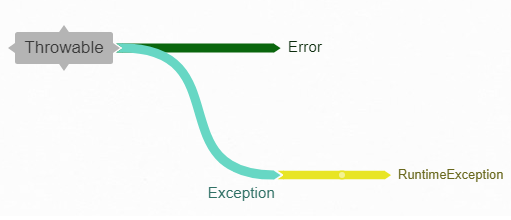我们来看看两个例子，感受下运行时异常和检查型异常不同的处理方式。
下面这个例子中，IllegalArgumentException 是运行时异常。虽然方法的声明中没有出现 IllegalArgumentException，但是在方法的规范中，需要使用记录什么情况下抛出该异常。只有这样，方法的调用者才能知道什么时候异常会抛出，该采取什么样的处理办法。
/**
* Check if the user name is a registered name.
*
* @return true if the userName is a registered name.
* @throws IllegalArgumentException if the user name is invalid
*/
boolean isRegisteredUser(String userName) {
// snipped
}
下面这个例子中，CloneNotSupportedException 是检查型异常。这样的异常，一定要出现在对应方法的声明中。
/**
* Returns a clone if the implementation is cloneable.
*
* @return a clone if the implementation is cloneable.
*
* @throws CloneNotSupportedException if this is called on an
* implementation that does not support {@code Cloneable}.
*/
public Object clone() throws CloneNotSupportedException {
// snipped
}
这三类异常的处理，可以用下表来总结。
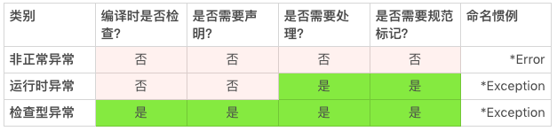
标记清楚抛出异常
应用程序需要处理异常（CheckedException 和 RuntimeException），就需要我们在方法的规范描述文档中清楚地标记异常。没有标记的异常，应用程序没有办法通过文档了解哪些异常需要处理、什么状况下会抛出异常以及该怎么处理这些异常。
对于检查型异常，编译器或者 IDE 会友好地提醒使用合适的声明。我们一般不会遗漏检查型异常的声明。既然声明不会遗漏，异常的标记也通常不容易遗漏。 比如上面 clone() 方法的例子，CloneNotSupportedException 已经在方法定义部分声明了。在方法规范描述部分，只要不遗漏这个异常的描述就好了。
然而，对于运行时异常，我们就没有这么幸运了。目前我们使用的编译器或者 IDE，还没有提醒运行时异常遗漏的功能。由于没有工具的帮助，我们就很难发现运行时异常，这就很容易导致代码效率降低，错误增多。
我举个例子，在上面的检查用户名的例子中，如果我们不在方法的规范描述中记录抛出的运行时异常，该方法的使用立即就会遇到问题。
/**
* Check if the user name is a registered name.
*
* @return true if the userName is a registered name.
*/
boolean isRegisteredUser(String userName) {
// snipped
}
其中最常见的问题包括：
- 如果参数 userName 是一个无效引用（null），会发生什么状况，该怎么处理？
- 如果参数 userName 是一个空字符串（“”），会发生什么状况，该怎么处理？
- 如果参数 userName 不是一个规范的用户名，会发生什么状况，该怎么处理？
每一个问题，都会降低使用者的效率，让使用者陷入难以摆脱的困扰。
如果代码的层次结构再多一层，这个问题就会更加严重：
/**
* Check if the {@code userName} is an authenticated user.
*
* @return true if the {@code userName} is an authenticated user.
*/
boolean isAuthenticatedUser(String userName, String password) {
// WRONG, should catch or describe the thrown exception.
if (isRegisteredUser(userName)) {
// snipped
} else {
// snipped
}
// snipped
}
如果一个方法既没有异常的声明，又没有异常的规范描述，调用者一般不会进行异常处理，也不在规范描述中加入抛出异常的描述。 这样的层次结构，只要稍微多个一两层，运行时异常虽然在代码和规范描述层面消失得无影无踪，但它并没有真正消失，依然会在运行时准时出现。
即使调用者拥有源代码，可以阅读源代码，也不容易意识到有运行时异常需要谨慎对待。代码的阅读者也不会有足够的精力和动力去深挖所有的层次，来确认有没有运行时异常。
由于编译器或者 IDE 并不能给我们太多的帮助，我们更需要谨慎、严格地处理好运行时异常。具体该怎么做呢？
- 对于所有的可能抛出运行时异常，都要有清晰的描述，一个也不要错过；
- 查看所有的调用方法的规范描述，确认抛出的异常要么已经处理，要么已经规范描述。
如果我们都遵循了这两条运行时异常处理的办法，我们只需要查看一层代码的异常就可以了，这样无论是编码还是阅读代码，都会轻松不少。
处理好捕获异常
要想处理好异常，我们需要了解异常机制的基本原理。 我们一起回顾一下 Java 异常的四个要素：
- 异常类名（IllegalArgumentException， FileNotFoundException）
- 异常描述（“Invalid file path”）
- 异常堆栈（at sun.security.ssl.InputRecord.read(InputRecord.java:504)）
- 异常转换（Caused by: javax.net.ssl.SSLException: Unrecognized SSL message, plaintext connection?）
这四个要素满足了三个现实的异常处理问题：
- 出了什么错？
- 什么地方出了错？
- 为什么会出错？
其中，异常类名解决了“出了什么错”的问题；异常描述解决了“为什么会出错”的问题；异常堆栈解决了“什么地方出了错”的问题；而异常转换记录了不同场景对这三个问题的不同理解和不同处理。
其中 JVM 自动帮我们处理异常堆栈，我们需要特别关注的就只有三点了。
- 对于异常类名，我们要准确地选择异常类。
Exception 类是一个包罗万象的超级异常类，如果我们使用 Exception 作为声明和抛出的异常，就不方便用户精准定位，从而解读和判断“出了什么错”。 类似的超级异常类还有 RuntimeException、IOException 等。 除非是超级的接口，否则我们应该尽量减少超级异常类的使用，而是选择那些意义明确、覆盖面小的异常类，比如 FileNotFoundException。
- 对于异常描述，我们要清晰地描述异常信息。
虽然 Java 异常允许使用没有具体异常信息的异常，但是这种使用却容易丢失用户对于“为什么会出错”这个问题更精准的解读。 所以我不推荐使用没有描述信息的异常。
3. 对于异常转换，我们要恰当地转换异常场景。
随着应用场景的转换，我们还需要转换异常的类型和描述。 比如，SQLException 这种涉及具体实现细节的异常类就不太适合直接抛给最终的用户应用。 用户关心的是商业的逻辑，并不是实现的细节，这就需要我们随着使用场景调整异常。如果一股脑儿地把所有的异常抛到底，业务逻辑就会很混乱，用户体验也不好。
但是随着场景调整异常也不是没有代价的。这是一个妥协的选择，会带来一些负面的情况。
第一个情况，就是需要编写转换的代码，这当然没有异常一抛到底方便。
第二个情况，就是信息的冗余。如果转换场景有两三层，异常打印出来的堆栈信息就会很长，而最有用的信息其实只有最原始的异常。
第三个情况，就是信息的丢失。有些信息的丢失是有意的，比如对敏感信息的过滤而丢掉的异常信息。有些信息的丢失是无意的过失。信息的丢失很难让我们排查出异常问题，于是错误的源头被硬生生地隐匿了起来。所以，除非有明确的需求，我们要尽量保留所有的异常信息以及转换场景。
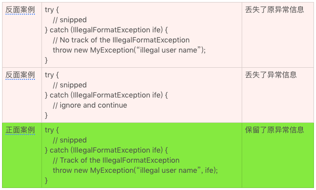由于这些负面情况的存在，我们就更要谨慎地使用异常场景转换，特别是要认真权衡信息丢失的问题。
小结
今天我给你讲了处理异常的一些情况，它的小陷阱很多。单就编写规范的代码来说，我们要记住三条准则：
- 不要使用异常机制处理正常业务逻辑；
- 异常的使用要符合具体的场景；
- 具体的异常要在接口规范中声明和标记清楚。
你还知道哪些异常处理的陷阱呢？欢迎你分享在留言区，我们一起来学习。
一起来动手
下面的这段 Java 代码，它的异常处理有没有违反我们上面讨论的原则？你能够改进下面的代码吗？
欢迎你把优化的代码公布在讨论区，我们一起来讨论，看哪些地方我们可以做得更好。也欢迎你把今天的内容分享给协作的小伙伴，和他一起进步。
import java.util.HashMap;
import java.util.Map;
class Solution {
/**
* Given an array of integers, return indices of the two numbers
* such that they add up to a specific target.
*/
public int[] twoSum(int[] nums, int target) {
Map<Integer, Integer> map = new HashMap<>();
for (int i = 0; i < nums.length; i++) {
int complement = target - nums[i];
if (map.containsKey(complement)) {
return new int[] { map.get(complement), i };
}
map.put(nums[i], i);
}
throw new IllegalArgumentException("No two sum solution");
}
}
11组织好代码段，让人对它“一见钟情”
当我们看到一个事物的时候，它的轮廓首先进入视野，给了我们第一印象。如果第一印象没有吸引到我们，那我们就不会集中注意力去关注它，也不会想去认识它。
我觉得有个俗语非常好地概括了这个认知习惯。这个俗语就是“不起眼”，更通俗一点的说法是“放在人群里认不出来”。
不管我们愿不愿意，第一印象特别影响我们的判断和心情。我们看到美好的东西，自己也跟着高兴；看到乱糟糟的东西，自己也感觉乱糟糟的。
代码也是这样的。如果我们看到整齐、清爽的代码，我们就对它有好感，愿意阅读，也愿意改进。 如果代码一团糟，风格混乱，我们就特别想静静地走开，一行都不想看。
前面的几讲中，我们讨论了注释、声明、格式、注解等编码规范。现在，是时候把这些零散的知识放到一块儿了。这些规范组合在一起，就会让代码既有让人喜悦的轮廓，也有让人清爽的细节。
这一次，我们将使用大量的例子，从代码文件头部结构、对象结构、类的内部结构、方法的代码结构、限定词的使用以及空行的使用这六大维度，来说明到底该怎么组织一个源代码文件。
代码文件头部结构
一般来说，一个源代码文件的开始部分包含三项内容。 按照出现顺序，分别为：
- 版权和许可声明；
- 命名空间（package）；
- 外部依赖（import）。
下面就是一个例子。
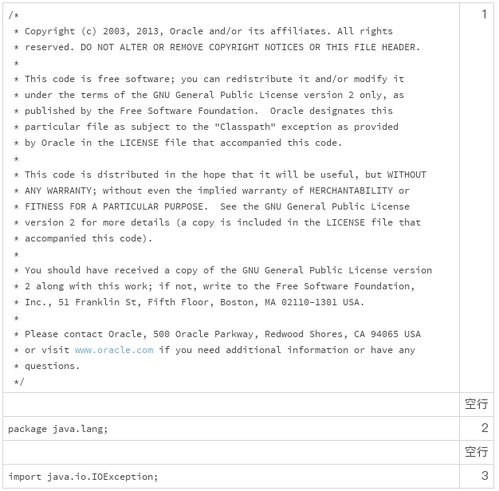在版权部分中，“2003, 2013”中的 2003 表示的是代码的诞生日期，2013 表示的是代码的最近更改日期。需要注意的是，每次代码变更，都要更改代码的最近更改日期。
代码文件对象结构
紧随着源代码的头部，是对目标类的定义，这一部分包含三个部分。 按照出现顺序，分别为：
- 类的规范；
- 类的声明；
- 类的属性和方法。
这一部分中，我们需要注意的是，对于公共类，需要使用 since 标签，标明从哪一个版本开始定义了这个类。 这样的标明，方便我们对类进行版本管理，减少我们进行代码变更时的工作量。
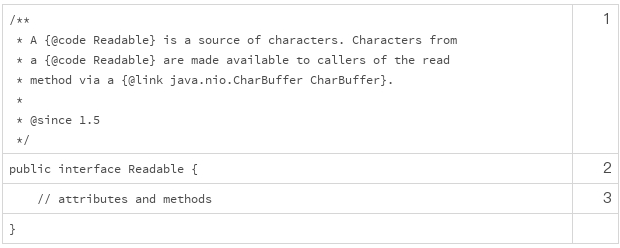比如在上面的例子中，如果需要修改 Readable，当看到“since 1.5”的标签时，我们就不需要检查 Java 1.4 的代码了。
你也许会问，为什么 Java 1.4 不能使用 Readable 呢？since 标签同样可以给你答案，因为 Readable 是从 Java 1.5 开始才有的接口。
这些问题虽然简单，但是如果没有使用 since 标签，答案就没有这么直观明显了。
类的内部代码结构
类的属性和方法，一般是一个代码文件的主要组成部分。类的结构，推荐的编码顺序依次为：
- 类的属性；
- 构造方法；
- 工厂方法；
- 其他方法。
我摘抄了一段 JDK 的代码，你看这样是不是更干净整洁？
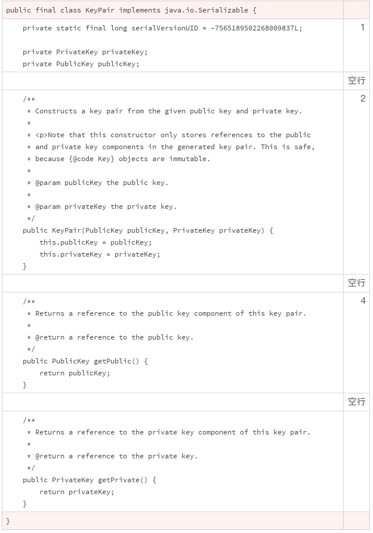上面的代码案例中没有用到工厂方法，我来讲一下这个。
类似于构造方法，工厂方法也是用来构造一个类的实例。不同的是，工厂方法有具体的返回值。它可以是静态方法，也可以是实例方法。
如果是实例方法，工厂方法还可以被子类重写。这是工厂方法和构造方法的另外一个重要的区别。由于工厂方法也扮演着构造类实例的功能，我们一般把它放在构造方法的后面，其他方法的前面。
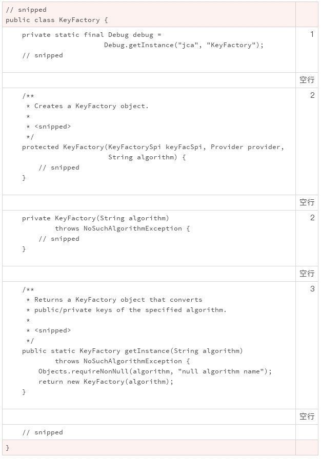
方法的代码结构
讲完了类的内部代码结构，我们再来讲讲方法的代码结构。一般来说，一个方法需要包含三项内容：
- 方法的规范；
- 方法的声明；
- 方法的实现。
内部类的内部方法，可以没有第一部分。但对于公开类的公开方法，方法的规范一定不能缺失。 一个典型的规范，应该包含以下十个部分：
- 方法的简短介绍；
- 方法的详细介绍（可选项）；
- 规范的注意事项 (使用 apiNote 标签，可选项)；
- 实现方法的要求 (使用 implSpec 标签，可选项)；
- 实现的注意事项 (使用 implNote 标签，可选项)；
- 方法参数的描述；
- 返回值的描述；
- 抛出异常的描述：需要注意的是，抛出异常的描述部分，不仅要描述检查型异常，还要描述运行时异常；
- 参考接口索引（可选项）；
- 创始版本（可选项）。
下面的这个例子，也是来自 JDK 的源代码。你可以清晰地看到，这段代码中的规范是非常典型的。
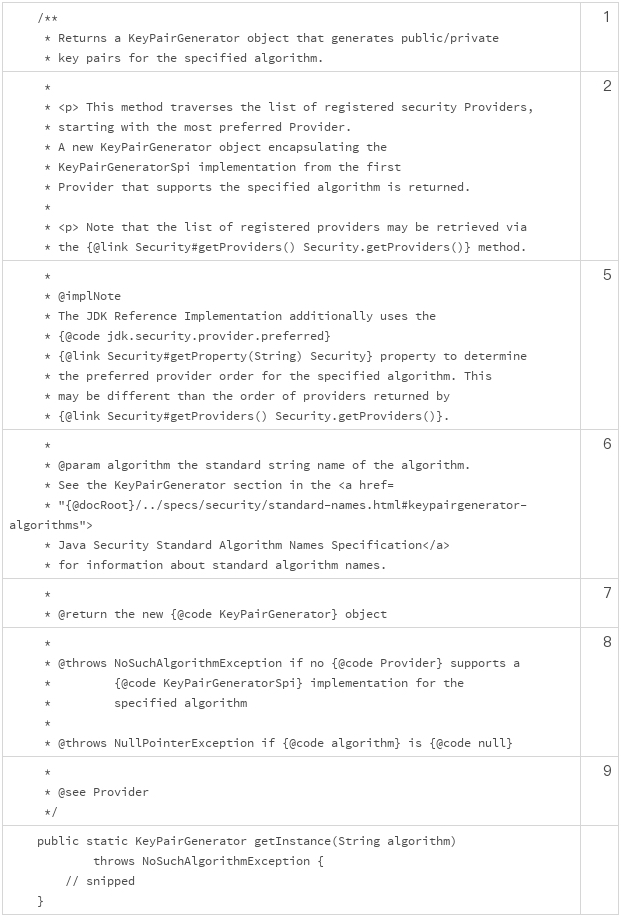如果方法的创始版本和它所属类的创始版本一致，方法的创始版本描述可以省略。 要不然，一定要加入方法的创始版本标签。
像下面这个例子，就添加了创始版本标签。
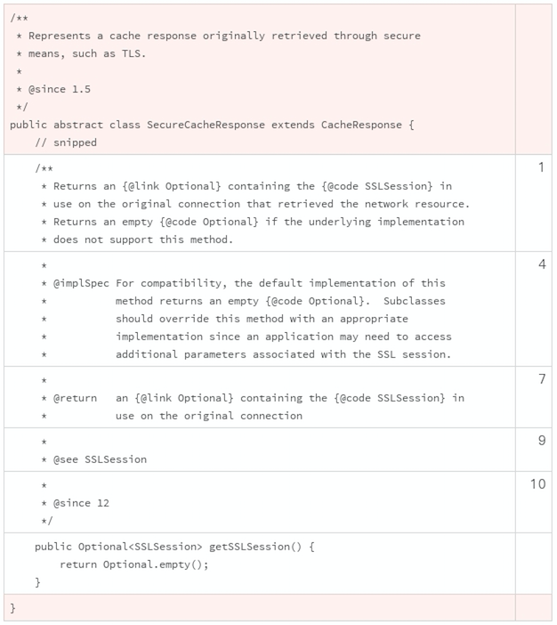
按顺序使用限定词
在声明一个类、方法或者方法属性时，为了更准确地描述和理解声明的适用场景，我们通常要使用修饰性的关键词。这些修饰性的关键词，我们通常称它们是修饰符或者限定词。 一个声明，可以使用多个限定词。
Java 的语法中，限定词的使用顺序没有强制性规定。但是，限定词的使用顺序有一个约定俗成的规则。按照这个规则使用限定词，一般来说，我们最关切的修饰符最先进入我们的视野，和标识符最密切的位置最靠近标识符。使用一致性的顺序，我们就能更快速地理解一个声明。
限定词推荐使用顺序：
- public/private/protected （访问控制限定词，制定访问权限）
- abstract （抽象类或者抽象方法，具体实现由子类完成）
- static （静态类、方法或者类属性）
- final （定义不能被修改的类、方法或者类属性）
- transient（定义不能被序列化的类属性）
- volatile（定义使用主内存的变量）
- default（声明缺省的方法）
- synchronized（声明同步的方法）
- native（声明本地的方法，也就是 Java 以外的语言实现的方法）
- strictfp（声明使用精确浮点运算）
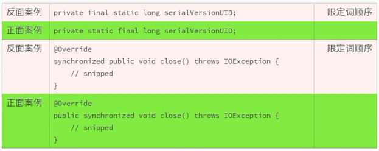
使用空行分割代码块
我们之前讲过怎么整理代码，一个重要的原则就是“给代码分块”，通过空格、缩进、空行实现这个目的。
再来回顾一下空行的作用，空行用于垂直分割，用于分开同级别的不同代码块。
我们可以使用空行分割如下的代码块：
- 版权和许可声明代码块；
- 命名空间代码块；
- 外部依赖代码块
- 类的代码块；
- 类的属性与方法之间；
- 类的方法之间；
- 方法实现的信息块之间。
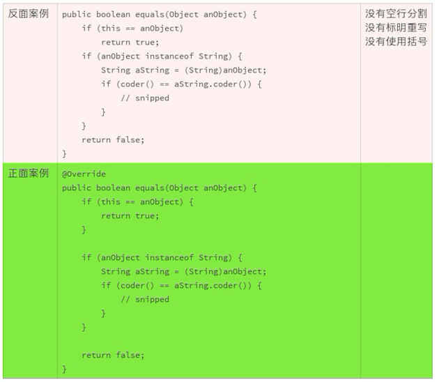
小结
对于软件开发者来说，组织代码是一项基本技能，也是我们需要养成的好习惯。组织代码有许多不同的习惯和策略，我们要学会辨别这些策略中哪些是有效的，哪些是有害的。
怎么辨别呢？
和其他技能一样，最快的提升方法是仔细思考一下为什么我们要做出这样的选择，而不是其他的。知其然远远不够，还要知其所以然。
你可以试着看看你的项目，源代码是按照这种方式组织的吗？哪些部分采用了合理的组织方式，哪些部分还有改进的空间？哪些是值得分享的经验？欢迎你把想法分享在留言区，我们一起来学习。
一起来动手
下面的这段 Java 代码，我们已经很熟悉了。前面，我们对它做过很多方面的修改。这一次，我们把前面的修改集中起来。你试着去找到所有可以改进的地方，然后比较一下修改前和修改后的代码。你有什么感受？
欢迎你把优化的代码公布在讨论区，让我们一起来感受、来欣赏！
也欢迎点击“请朋友读”，把这篇文章分享给你的朋友或者同事，一起来体验修改代码的快感。
import java.util.HashMap;
import java.util.Map;
class Solution {
/**
* Given an array of integers, return indices of the two numbers
* such that they add up to a specific target.
*/
public int[] twoSum(int[] nums, int target) {
Map<Integer, Integer> map = new HashMap<>();
for (int i = 0; i < nums.length; i++) {
int complement = target - nums[i];
if (map.containsKey(complement)) {
return new int[] { map.get(complement), i };
}
map.put(nums[i], i);
}
throw new IllegalArgumentException("No two sum solution");
}
}
12组织好代码文件，要有“用户思维”
上一讲中，我们讲了如何组织代码段，今天我来讲下，如何组织代码文件。
最开始接触一个项目代码时，我们最渴望的，就是快速揭开项目的面纱。这个项目是干什么的？是怎么做的？该怎么使用？
有很多这样的问题，排着队等我们处理。我们需要从一个点开始，先撕破一点点皮，然后，像剥洋葱一样，一层一层地阅读，一层一层地了解。
刚拿到一个项目的代码时，你最想找哪一个文件？面对大量的文件，该从哪里入手？创建一个项目时，各式各样的文件该怎么规整？
如果一个项目很小，只有三五个文件，我们不用担心上述的问题。
但事实上，一个典型的软件项目，拥有上百个文件是寻常的事情。如果这些文件组织混乱，就会让整个项目乱糟糟的，我们很难入手去查找、阅读和测试。
其实文件的组织是一个简单的事情，但这些简单的事情如果不能做得清晰、明了，就会变成一个效率的黑洞。
文件的组织要层次分明、易于检索、一目了然。要做到这一点，我们可以从用户思考问题的逻辑入手。
逻辑之一：软件是干什么的？
无论我们开始一个软件项目，还是阅读一个软件的代码，第一个遇到的问题就是，这个软件是干什么的？
可以回答这个问题的文件叫做 README，它的命名全部使用大写字母。需要被放在一个软件工程的根目录里，方便人或者机器第一时间找到，从而轻而易举地找到并进行阅读。
“软件要用来干什么？”是一个软件工程的启动问题。
一个软件项目开始时，这个问题的答案可以不是很丰满，但是，最基本的思想一定要有。随着软件的研发进程，它的描述可以越来越清晰。软件成型之前，这个问题必须干脆地解决掉，得到明确的答案。
这个问题的描述，要记录在代码的工程里。可以让代码的阅读者轻而易举地找到并阅读。
由于机器的参与，尤其是在线代码管理服务（比如 GitHub、Maven）的广泛使用，README 的名字和位置也就慢慢地形成了共识。
逻辑之二：软件可以拿来用吗？
如果我们看到了 README，想使用这个软件，那么紧接着的问题就是，这个软件我们可以使用吗？
所有的软件，都有归属，都受版权的保护。谁拥有这个软件的版权？这是我们需要关注的一个问题。
有时候，一个软件包含很多贡献者，不同的贡献者有不同的版权诉求。软件的不同部分，就有不同的版权。
这种情况下，版权描述一般放在每一个源文件的头部。不同的源文件可以有不同的版权，同一个源文件也可以有一个以上的版权所有者。
如果版权来源只有一个，而且源文件头部没有版权描述，我们就需要把版权描述放到最显眼的地方。这个地方就是软件工程的根目录，命名为 COPYRIGHT，全部使用大写字母。
没有版权描述的软件，并不是没有版权保护。如果一个软件没有版权描述或者版权描述不清晰，使用起来有很多法律风险。如果这个软件依赖外部的版权，那么问题就会变得更为复杂。
有了版权保护，不代表我们就不能使用这个软件了。我们能不能使用、怎么使用，是由软件的许可证确定的。
许可证文件是 LICENSE，全部使用大写字母，放在软件工程项目的根目录下。
当使用软件的时候，不能超越许可证约定的范围。 一个没有许可证的软件，我们是不能使用的，因为不知道许可的范围，也不知道应承担的义务。同样，如果一个软件的许可证不清晰，或者我们不了解，那么使用起来也会有很多法律问题。
逻辑之三：软件是怎么实现的？
作为程序员，代码是我们看软件世界的语言。我们关心的下一个问题就是，这个软件是怎么实现的？
代码的位置在现在的软件工程里有了一定的共识。通常来说，源代码存放在根目录下的 src 目录下。
当看到 src 目录的时候，我们就可以确认，这里面是源代码文件。当我们要查找源代码的时候，也是在软件工程文件里查找 src 目录。我不建议在这里搞创新，不要使用其他的名字或者位置。
但源代码并不能一股脑地堆在 src 这一个目录里。src 目录下面可以有很多子目录。一般来说，稍具规模、相对正规的软件，都需要有命名空间的区隔。使用命名空间的区隔至少有三个好处：
- 可以把一个组织的代码和另外一个组织的代码区隔开；
- 可以把一个项目的代码和另外一个项目的代码区隔开；
- 可以把一个模块的代码和另外一个模块的代码区隔开。
每一个命名空间的节点，都要对应一个文件目录。比如，我们常用的 java.lang 这个命名空间，就要相应地使用“java/lang”这两级目录。
如果软件项目把所有的源代码文件不加分别地放在同一个目录下，说明软件的开发人员并没有厘清代码之间的逻辑关系。纠缠在一起的代码越多，代码越难以维护，代码的安全越难以保证。
逻辑之四：软件该怎么测试？
如果要使用或者发布一个软件，最值得关注的还有软件的质量。软件的质量，首先要通过软件测试这一关。那么软件该如何测试呢？ 这是我们要面对的另一个问题。
有很多传统的软件项目，测试代码和功能代码是放在同一个目录下的。如果一个项目比较小，那么这样做也许没什么大问题。一旦软件工程变得复杂，这样做就会让项目变得难以管理，尤其是在测试人员和开发人员分离的情况下。
让测试人员看着实现代码写测试，会误导测试的用例选择和测试效果；让开发人员看着测试代码改实现，也会影响开发的质量和效率。
既然要分工，不同的代码就要区隔开来。
如果开发和测试是一个人，或者是同一个小组成员，是不是就可以混在一起了呢？ 当然不是，因为看代码的人依然可能是分工的。区隔实现和测试，可以尽可能照顾到每个工程师，方便他们工作。
幸运的是，现在的很多软件项目，大都采用了分离的组织方式。通常来说，源代码要存放在根目录下的 test 目录下。
仅仅放置在对应的目录下还不够，测试文件本身还有一个需要注意的地方，一个测试文件，最好执行一个独立的任务。如果测试出错误，我们就能够快速定位错误。这也要求测试的目标要小，测试的结果要清晰，测试的组织要照应功能代码的组织。
比如说，对 java.io 测试的文件，要放在 java/io 测试目录下；对 java.util 测试的文件，要放在 java/util 目录下。这种互相照应的组织方式，从目录名就可以看出测试的范围。这样既可以快速从功能代码找到测试代码，也可以快速地从测试代码找到功能代码。
软件该怎么使用？
使用软件工程项目文件的，不仅仅只有程序员，还有软件的用户。
要是只能通过阅读软件代码来揣测软件该怎么使用，这样既没有效率，也容易犯错，更偏离了软件设计者的初衷。
一个好的软件，要尽可能降低使用门槛。编写使用指南和代码示例是两个常用的办法。一份好的用户文档，应该让软件的用户快速入门，然后再逐步深入地了解整个软件的使用细节，以及潜在的问题。
软件的文档，需要随着软件的变更不断升级维护。有很多项目会把文档和代码分开管理。
但实际上，这样做有一些缺陷，它会让文档变得难以维护。
我们经常看到很多文档和软件脱节的软件，很大一部分是由于项目组织和管理方面的问题导致的。如果代码的变更，也需要相应地变更文档，那么文档和代码统一管理，是一个更高效的组织方式。
如果你留意，就会注意到现在的很多项目，在根目录下，有一个名字为 docs 或者 doc 的目录。 这个目录就是存放软件文档的。
作为程序员，我们不仅要熟悉源代码，还要熟悉文档。当需要更直观的用户指南或者代码示例时，就要写作这样的软件文档。对于每一行的代码变更，我们都要问，需不需要文档变更？如果代码和文档一致的话，就会节省我们大量的维护时间和维护成本。
下面的例子，是一个常见的软件组织形式，也是我们对上述讨论的小结。
Project directory layout:
src/
java/
lang/
io/
javax/
net/
ssl/
test/
javax/
net/
ssl/
doc/
make/
README
COPYRIGHT
LICENSE
小结
我们的日常软件开发工作，有很多都依赖于集成开发环境（IDE）。主流的 IDE 有缺省的文件组织形式。一般情况下，我们可以使用缺省的组织形式，然后添加进缺失的内容。
也有很多软件开发，不依赖于 IDE。这就需要我们自己规划好文件的组织原则和基本形式。不同的语言，不同的项目，文件的组织方式差别可能很大。
如果你需要自己制定组织形式，我建议参考一些成功项目的组织方式。比如，如果你要做一个中间件，为客户提供类库，就可以参考 OpenJDK 的文件组织方式。
如果没有什么现成的项目可以参考借鉴的，请记住以下两点：
- 文件的组织要一目了然，越直观，越有效率；
- 可维护性要优先考虑。这要求文件组织要层次分明，合理区隔、照应、使用不同的空间。
一起来动手
由于项目的多样性，项目文件组织的具体形式有很多差异。借这个机会，我也想学习一下大家的项目文件组织经验。你做的项目，是怎么组织文件的？为什么选择这种组织的形式？你最欣赏的这种形式的哪几点？你阅读一个项目代码时，是怎么一步一步深入进去的？欢迎你把你的经验公布在讨论区，我们一起来学习，一起进步。
13接口规范，是协作的合约
一个软件项目，一般需要交付两类文档。一类文档是面向开发者的，另一类文档是面向最终用户的。这两类文档，由于面向用户的不同，无论是内容还是形式，都有巨大的差异。今天我们先来聊聊面向开发者的文档。下一讲中，我们再接着聊面向最终用户的文档。
区分外部接口和内部实现
为了便于维护和协作，一个软件通常被划分为几个不同的部分。比如我们通常使用的 MVC 架构，把软件分为模型（Model）、视图（View）和控制器（Controller）三个部分。这样做，可以降低复杂度，让程序结构更加直观。同时，这种架构也很容易对程序进行修改和扩展，并且可以重复利用基础的功能。
不同功能的分离，让程序员之间产生了分工，专业人员可以更聚焦于个人的专长领域。这是一个多赢的局面，也能让软件的质量得到提升。
既然有分工，就要有协作。MVC 架构把软件拆分为三块，是分工；而 MVC 模块之间的调用关系，就是协作。
一个好的软件设计，要区分外部接口和内部实现。外部接口，就是协作的界面，要简单规矩；内部实现，可以是千变万化的复杂小世界。
这种区分无处不在，即使是最普通的 API。比如我们常用的 InputStream，一旦我们获得这个对象实例，就可以调用它的 read() 方法。 我们不用去关心，它的底层实现是一个文件，一段内存，还是一个远程连接。InputStream 的接口定义只有十个方法，短短的 500 多行代码。
但是它的内部实现却是一个更大的世界，广泛地分布在不同的类库、不同的模块，实现着不同的具体功能，有些实现甚至超出想象的复杂，比如一个安全连接的 InputStream 的实现，一般有着数万行的代码。
幸运的是，我们区分了接口和实现，调用者就不用去关心这些复杂的实现了，只需要理解接口规范就好。
提高协作效率的最高技巧不是提高沟通技巧，而是要减少沟通的数量，提高沟通的质量，尤其是要减少数量。如果你参加了工作，没完没了的会议，没完没了的文案，都会加深你对这条原则的理解。软件的设计也是这样，外部接口，要少、要小、要描述清楚。
接口规范是协作合约
由于外部接口是协作的界面，是调用者和实现者之间的合约，所以对它就有了更加严格的要求。这里我总结了合约的四个原则：成文、清楚、稳定、变更要谨慎。
具体要怎么实践这些原则呢？
合约要成文
无论对于调用者，还是实现者来说，外部接口的使用都要有章可循，有规可依。如果调用者需要去看实现代码来理解外部接口，那么外部接口和内部实现的分离还有什么用呢？不就背离了外部接口和内部实现分离的初衷吗？这样做既是对实现者的纵容，也是对调用者的无视。
比如说，Java 的每个版本的 API 文档和指南，就是 Java 语言的合约。
合约要清楚
合约既然是我们协作的依靠，就一定要清晰可靠、容易遵循，不能有模棱两可的地方。如果接口规范描述不清，既误导调用者，也误导实现者。
如果接口规范复杂难懂，说明接口的设计也很糟糕。
那么接口规范要怎么描述呢？
接口规范主要用来描述接口的设计和功能，包括确认边界条件、指定参数范围以及描述极端状况。比如，参数错了会出什么错误？
这里需要注意的是，接口规范不是我们定义术语、交代概念、提供示例的地方。这些应该在其他文档中解决，比如我们下次要聊的面向最终用户的文档。
合约要稳定
既然是合约，意味着调用者必须依赖于现有的规范。比如 InputStream.read() 这个方法，接口规范描述的是读取一个字节（8-bit），返回值是介于 0 和 255 之间的一个整数。如果我们要把这一个规范改成返回值是介于 -128 到 127 之间的一个整数，或者是读取一个字符（比如一个汉字），都会对现有的使用代码造成灾难性的影响。
接口的设计和规范的制定，一定要谨慎再谨慎，小心再小心，反复推敲，反复精简。一旦接口合约制定，公布，然后投入使用，就尽最大努力保持它的稳定，即使这个接口或者合约存在很多不足。
变更要谨慎
世界上哪里有一成不变的东西呢！技术的进步、需求的演进，总是推着我们朝前走。合约也需要跟得上变化。
可是，接口合约毕竟不是租房合约，可以一年一续，每年变更一次。租房合约的变更成本很小，但软件的接口合约变更的影响要严重得多。特别是兼容性问题，稍微一丁点儿的接口规范变化，都可能导致大面积的应用崩溃。越成功的接口，使用者越多，变更的影响也就越大，变更的成本也就变高，变更也就越困难。你可以试着想一想，如果 InputStream.read() 这个方法在 Java 中删除，会造成多大的影响？会有多少应用瘫痪？
所以，对于接口规范，我们的原则是，能不变更就不变更；必须的变更，一定要反复思量该怎么做才能把影响降到最低。
使用 Java Doc
说完了接口规范的几个原则，我们就来讲一下，如何实践这些原则。接口的规范描述，应该怎么组织？
从使用者角度出发，包括接口的调用者和实现者，接口的规范应该便于阅读，便于查找。从制定者的角度出发，接口的规范应该便于定义，便于维护。
JavaDoc 就是一种顾及了多方利益的一种组织形式。它通过文档注释的形式，在接口声明的源代码定义和描述接口规范。这种和源代码结合的方式，可以方便我们维护接口规范，也有利于保持接口规范和接口声明的一致性。
JavaDoc 工具可以把文档注释，转换为便于阅读为 HTML 文档。这样就方便规范的使用者阅读了。
当然，也不是所有的规范，都一定要使用 JavaDoc 的形式，特别是冗长的规范。如果有两种以上不同形式的规范组织文档，我建议一定要互相链接、引用。比如，冗长的规范可以单独放在一个文件里。然后，在 Java Doc 对应的文件里，加上改规范的链接。
比如下面的例子中，“Java Security Standard Algorithm Names Specification”就是一个独立的，较长的规范文档。当需要使用这个文档的时候，就要在对应的接口中指明该文档的位置，这样方便用户进行检索。
上面的文档注释，经过 JavaDoc 的处理，就变成了便于用户阅读的文字。
protected Signature(String algorithm)
Creates a Signature object for the specified algorithm.
Parameters: algorithm - the standard string name of the algorithm. See the Signature section in the Java Security Standard Algorithm Names Specification for information about standard algorithm names.
谁来制定接口合约？
这本来不是一个问题。但是由于我们选择在源代码中，需要通过文档注释表达接口合约，这就成了一个很严肃的问题。
源代码的维护者，是不是对接口合约拥有无限的修改权利呢？
肯定不是的。
既然是合约，就是大家都认可并且接受的规范和细节，只有形成共识才能编辑和修订。合约的编写和修订，一般不应该由源代码的维护者一人决定，而应该由参与各方充分沟通和协商。
“三个臭皮匠，顶个诸葛亮”，我们要充分尊重参与各方的能力，信任充分的沟通可以成就更好的规范。
一个软件项目，不管大小，只要参与者超过两个，都要讨论清楚彼此之间的分工协作方式。这当然也包括，讨论清楚如何制定、修改程序接口。
比如，OpenJDK 的接口制定和修订，就一定要经过下面的步骤：
- 起草接口规范，或者起草提议的修订规范；
- 找相关领域的专家，审议草案，并根据评审意见，修改接口规范；
- 如果领域专家审议通过，提交兼容性和规范性审查程序； 并根据审查意见，相应地修改接口规范；
- 兼容性和规范性审查通过，修改接口合约；
- 按照议定的接口规范，编写最终的实现的代码。
当然了，你的软件项目，也许和 OpenJDK 有巨大的差异。你要找到适合自己公司和项目的，接口合约制定和修改的适当方式。
小结
对于接口规范，我们要有意识地使用下面的这条原则：
接口规范是使用者和实现者之间的合约。
我们在工作过程中，如果有和接口相关的迷惑或者争执，可以多想一想上面的这条原则。
一起来动手
2018 年 12 月 25 日，部分开发者突然发现他们开发的 Web 网页的界面发生了变化，按钮上方出现“积雪”。这超出开发者的脑洞和认知，难道是圣诞老人的礼物，或者是黑客的祝福？经过探索发现这是前端 UI 组件库 Ant Design（简称 antd）提前埋入一个未经声明的“彩蛋”。事件迅速发酵，引起了巨大争议。
前人的危机都是后人的财富。该怎么做，才可以避免类似的事情？欢迎你在讨论区留言，我们一起把这个事件转化成我们的见识和能力。
14怎么写好用户指南？
前一段时间，我要买一部家用的跑步机。有一款跑步机看起来配置齐备，商品的标题中指明“需要组装”。
商品的评论只有两条。其中一条给了三分：“还没有来得及试一试这个新到的跑步机。因为，我一直试着把它组装起来。我做梦都没有想到，‘需要组装’意味着我花了三天时间，都没有组装起来。它也许是一个好的跑步机，可是令人失望的是，这些零件到底该怎么凑在一起！”
而另一条则给了最低的一分。评论写道：“商品描述不准确。这台机器非常重，长度甚至超过两人沙发。一般的家庭根本放不下这台跑步机。已经退货了”。
你可以想象，这两条仅有的评论对这款跑步机的销售有多大的杀伤力。它本身的品质无论如何，都不至于沦落到一分、三分的地步。
问题在哪儿呢？无论是谁，花了三天时间都搞不定组装，肯定有一肚子的不满意。好不容易组装起来，却发现没有空间放置，又要拆掉退货，就会更不满意。
我了解了一下这款跑步机的用户手册，发现组装非常繁琐，所涉及的部件有很多，还真不是一下子就可以搞定的。
很显然，用户指南非常重要，但这款跑步机却给我们提供了一个反面的案例，可见写出一份好的用户指南也不是一件容易的事。
最好的用户指南，是产品本身。我们随手拿一只圆珠笔，就知道怎么用。然而，不是所有的产品都能够简单到拿来就用。一份合格的用户指南，要帮助用户减少产品使用的障碍，快速地使用产品。
作为程序员，我们常和软件的用户指南打交道。软件和的用户指南和家用电器的操作指南一样，是最终用户的参考手册。今天，我就和你聊聊怎么写好软件的用户指南这个话题。
谁是指南的用户？（用户指南写给谁？）
既然是用户指南，就必须让用户看得懂、用得上。首先我们需要搞懂，谁是用户？ 只有这样，我们才能了解用户的日常习惯和知识偏差。
一般来说，我们把用户的门槛降得越低，潜在用户的群体就越大，软件就越容易推广。
比如说，访问一个网站时，我们只要在浏览器输入网址，就可以浏览网站的内容。这背后的技术，真的像大海一样深不可测。可是，作为用户，我一点儿也不关心这些技术，我只关心，我能不能访问到这个网站。
假设一个浏览器的设计者，添加了两个强制的选择项，让用户访问网站时选择：
- 使用 TCP 协议还是 UDP 协议？
- 使用 HTTP 还是 HTTPS?
估计很多用户立即就会不知所措。他们大部分都不知道这些协议到底是什么，更别提让他们做出有实际意义的选择了。
我举这样的一个例子，想说明的是，有了用户的千差万别，才有了软件的千差万别。我们不能想当然地认为，有了详实的用户指南，用户就能够使用产品。
事实上，用户指南，不能超越用户的理解能力和操作能力。
什么时候确定产品用户？
这是一个老生常谈的问题。之所以常谈，是因为我们很容易就忘了我们的用户。所以，不得不经常拎出来谈一谈，时不时地拽一拽这根弦。
等到产品出来的时候才确定用户，再写用户指南，就太晚了。 谁是我们的用户？用户该怎么使用我们的产品？这些问题应该是产品还没有影子的时候，就要开始着手解决的问题。 然后，在产品研发的全工程中，反复地调试、测试这两个问题的答案。
需要注意的是，这两个问题答案，千万不要越来越丰富，而是要简化再简化，越来越简单。
无论用户手册写得有多好，一个需要组装近百个部件才可以使用的跑步机，都瑜不掩瑕。
所以在产品设计时，就需要解决掉用户定位和怎么使用这两个问题。
比如浏览器的设计，我们一定要压制住给用户提供更多选择的冲动，把技术细节隐藏到具体实现中去，而不是让用户来做选择。即便是简单的给浏览器输入地址这一行，你想一想下面的这些地址隐藏了多少细节！
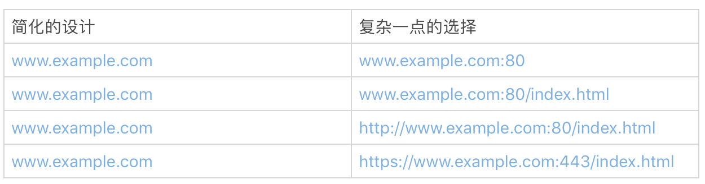我们经常使用浏览器，所以讨论浏览器的设计时，可能比较容易理解简单带来的巨大好处。如果换成我们自己的软件产品，看起来就没有那么容易了。
我们可能生怕遗漏了什么、错过了什么。丢掉东西，尤其是放弃一个看似美妙的想法，不符合我们的思维方式和行为习惯。 但在用户指南这个问题上，我们需要记住“less is more”。如果可以从用户的角度看问题，产品中自我的影子就会少一点点，这些选择也会简单一点点。
保持指南和代码的一致
和接口规范一样，用户指南一般也是由程序员和其他的作者一同完成的。和接口规范不一样的是，接口规范可以在源代码文件中定义、描述，而用户指南通常是独立于源代码的文档。这种分离的组织形式，经常会让用户指南和源代码脱节。如果维护指南的作者和维护源代码的作者不是同一个人，脱节就会更加严重，导致维护和服务都很困难。
那么该怎么办呢？程序员一定要和用户指南的维护者保持通畅的沟通，商定协作的方式。
比如，在 OpenJDK 中，如果源代码的修改导致了行为和接口的改变，就要考虑是不是需要修改用户指南。如果需要修改用户指南，就要提交一个用户指南修改的提议。在这个提议里，说明代码导致的行为、接口的变更，以及用户指南修改的建议。用户指南的维护者收到提议后，就会跟踪代码的变更，提议具体的修改方案，完成用户指南的修改。源代码修改和用户指南的修改，一定要放在一个连贯的流程里。
保持用户指南和源代码的一致性是一个很有挑战性的任务。这是一个成本很高的问题，你一定要找到适合自己的办法。比如可以像 OpenJDK 一样，通过改进开发流程，把用户指南修改和代码变更绑定在一起。用户指南修改修改完成，这个代码变更才算完成。如果工具使用得当，团队合作流畅，这是一个可以尝试的好办法。
开发指南的实践
开发指南是一类我们经常接触的用户指南，它的典型用户是使用该软件 API 的软件工程师。
我们上一次聊到了接口规范。开发指南和接口规范这两类文档是怎么分工的呢？ 接口规范的重点在于接口的设计和功能描述上，包括确认边界条件、指定参数范围以及描述极端状况。而开发指南的重点在于定义术语、交代概念、提供示例、问题排查等。
接口规范描述的是每一个部件的规格，是一个细节、局部的范围。开发指南说的就是怎么理解这些部件之间的关系，怎么把这些部件组合起来，形成更大的部件或者产品。
对于一个陌生的类库，我们一般要先阅读开发指南，然后检索接口和接口规范。如果开发指南让用户抓狂，你可以回顾一下开头讲到的跑步机的例子，想象下影响会有多糟糕！
那么合格的开发指南都要符合哪几个规则呢？我总结为三点：需要交代清楚概念，可以快速上手，示例都可操作。
交代概念
一个合格的开发指南，不要假定用户具有和开发者一样的知识范围。对应的接口规范和开发指南里涉及到的概念，一定要交代清楚。我们可以假定一个程序员了解 IP 地址这个概念，这是计算机入门的基本概念。但是，不要假定他了解 IP 地址的计算方式，虽然也是基础知识，但是大部分人记不住知识的细节。
所以说，交代清楚概念，很方便作者和读者之间建立共识，降低后续文档的阅读负担。
快速上手
一个好的开发指南，要尽最大可能，让开发者快速上手。
我们学习一门编程语言，往往从“Hello, World!”这个例子开始。它本身并没有太多玄妙的东西，但可以让一个初学者最快地玩耍起来，然后，再逐步探索更深入的内容。
这是一个值得学习的方法。很多开发指南，都有一个类似于“Hello, World!”这样的简短的快速入门章节。你也可以试试这个办法。
但需要注意的是，快速入门的章节一定要简单、靠前。让读者最快接触到，很容易学会，方便“玩耍”。
示例都可操作
可操作性是开发指南的一个命门。所有成文的方法和示例，都要求可以使用、可以操作、可以验证。虽然说起来简单，但是做到这一点并不简单。
开发指南，需要适应版本的变迁和代码的修改。第一版的开发指南也许看起来、用起来都很美妙，但到了第二版，就会面临代码和指南脱节的问题。
指南的方法是否还适用？示例的代码是否需要修改？示例的输出有没有变化？问题排查的办法有没有变更？ 这些都是潜在的问题。
如果我们在开发指南里使用了不能执行的伪代码，这些问题就会更加突出。我们虽然清楚第一版伪代码的逻辑，却没有办法验证这样的逻辑在第二版是不是依然成立。
如果开发指南里的示例都可以被编译、被使用，那么解决起来就会轻松很多。修订开发指南时，如果我们把这些示例重新编译、运行、查看结果，然后对比文档，就可以解决掉很多潜在的忧患。
当然，可操作的开发指南，用户不仅仅是可以阅读，也可以照着例子玩耍。
小结
最后我来总结一下，用户指南的形式和组织方式各式各样，我们没有办法去限定它的具体格式。 一般而言，我们要建立下面的意识：
- 从用户的角度出发来思考用户指南，用户指南要容易上手；
- 用户指南和源代码一样，也有开发周期，也是需要维护的。
一起来动手
今天，我们找两个真实的例子练练手。限于版权，我不能拷贝这两个例子的内容。麻烦大家去看原文。
第一个例子是腾讯微信的《小程序开发指南》第一小节的"Hello World"示例。第二个例子是GitHub 页面开发的入门网页，也是一个 Hello World 示例。你仔细研究下，看看是不是都容易上手？每一个例子都有什么优点，有什么缺点？ 你有哪些改进的建议？
欢迎在留言区分享你的看法，我们一起来讨论、学习。
15编写规范代码的检查清单
通过前面十几讲的学习，我们已经把代码“规范”篇的内容学习完了。今天，我们一起把前面讨论到的观点总结一下，并探索一下编写规范代码时的最佳实践检查清单。一份有效的检查清单，可以帮助我们记忆、遵循和执行代码的一系列规范。
标准与指南
在讨论编码规范之前，我们首先要认识什么是标准，什么是指南，以及它们各自的局限性。这样我们就能知道，什么可以做，什么不可以做。
标准是既定的做事方式，它定义了一个事物如何始终如一地达到同样水准的细节。标准的特征在于，它既是必需的，也是强制的。
然而，在现实实践中，能够标准化的东西是有限的。所以就有了指南，它是标准的补充。
指南告诉我们应该采取的总体方向和最佳实践，它是一个指导原则，是建议，不强制执行。用户可以根据具体情况，决定是否遵循相关的条款。
我们所说的编码规范，实际上通常是指导原则。虽然不具备强制性，但我们也有必要区分对不同建议条款的态度，比如对使用“强烈推荐”这样字眼的建议来说，我们就应该格外重视。这样，可以避免不必要的争执，降低复杂性。
为什么需要编码规范？
1. 提高编码的效率
在不损害代码质量的前提下，效率可以节省我们的时间和成本。这种节省不仅仅停留在编码阶段，更体现在整个软件的生命周期里。我在第四篇已经详细解释了这一点。
2. 提高编码的质量
代码的质量在于它和预期规范的一致性。一致、简单、规范的代码易于测试。相反，复杂的代码会加大测试的难度，难以达到合适的测试覆盖率。另外，代码的复用也意味着质量的复用，所以代码的问题会随着它的复用成倍地叠加，提高了软件的使用或者维护成本。
3. 降低维护的成本
代码的维护要求代码必须能够修改，增加新功能，修复已知的问题。如果代码结构的清晰、易于阅读理解，那么问题就容易排查和定位。
4. 扩大代码的影响
要想让更多的人参与，就需要一致的编码风格，恰当地使用文档。要方便他们阅读，便于解释。
使用编码规范可以让一个程序员减少出错，避免不必要的困扰。另外，编写规范的代码也是一种专业、成熟的体现。
编码规范的心理因素
编码风格最原始的依赖因素是人的行为习惯和心理学基础。通过了解一些基本的心理学原理，我们可以更好地理解编码风格的的基本规则。
- 两种思维模式
我们有两种思维模式，自主模式（快系统）和控制模式（慢系统）。自主模式的运行是无意识的、快速的、不怎么耗费脑力；控制模式需要集中注意力，耗费脑力，判断缓慢，如果注意力分散，思考就会中断。
自主模式在熟悉的环境中是精确的，所作出的短期预测是准确的，遇到挑战时，会第一时间做出反应。然而，它存在成见，容易把复杂问题简单化，在很多特定的情况下，容易犯系统性的错误。比如说，第一印象、以貌取人，就是自主模式遗留的问题。
当自主模式遇到麻烦时，控制模式就会出面解决，控制模式能够解决更复杂的问题。但刻意掌控会损耗大脑能量，而且很辛苦。处于控制模式中太长时间，人会很疲惫，丧失一部分动力，也就不愿意去做启动控制模式了。比如，很多人害怕数学，多是因为控制模式确实很吃力。
自主模式和控制模式的分工合作是高效的，损耗最小，效果最好。快速的、习惯性的决断交给勤快省力的自主模式，复杂的、意外的决断由耗时耗力的控制模式接管。
编码规范中很大一部分内容，是增加共识、减少意外，扩大自主思维模式覆盖的范围，减少控制模式必须参与的内容。熟练掌握编码规范可以逐渐让这一套规则存在于人们的下意识中，这样编码的时候就像我们使用筷子一样，简单又自然。
- 识别模式
我们能够在这个世界上存活下来，依靠的不是识别完整的情景，也不是从头开始分析每一个情景，而是通过既定的可识别模式，来匹配这个世界。正常期望以外的模式，常常会让我们感到吃惊和困惑，甚至是生气。
模式识别的认知是一柄双刃剑，既是福音也是祸害。它可以帮助我们毫不费力地使用经验，但习惯一旦养成就很难改变，我们不愿意打破旧模式，去学习新模式和接受新技术。
程序员很容易理解和自己编码风格类似的代码。如果编码风格和自己的大相径庭，就会感到焦躁和烦恼。编码风格一旦形成，就难以更改，转变很痛苦。幸运的是，一旦努力转换成新习惯，我们就会喜欢上新的编码风格。
一份好的编码规范，刚开始接受会有些困难。我们甚至会找很多借口去拒绝。但是，一旦接受下来，我们就成功地改进了我们的识别模式。
- 猜测模式
对于既定模式的识别，是通过猜测进行的。对于每一个新场景，大脑立即会把它起始部分当作一个线索，然后通过拟合所有已知模式的起始部分，来预测模式的其余部分，猜测“言外之意”。我们掌握的信息越少，就越有可能犯错误。比如，在医院看到穿白大褂的，我们默认他们是医护人员。但医护人员的判断标准并不是白大褂。
所以在编写代码时，我们要有意识地提供足够的线索和背景，使用清晰的结构，加快模式的识别，避免造成模式匹配过程中的模糊和混淆带来的理解障碍。
- 记忆模式
我们的记忆模式有四种，包括感官、短期、工作和长期记忆。
感官记忆是对我们感官体验的记忆，非常短暂（大约三秒钟），比如我们刚刚看到的和听到的。
短期记忆是我们可以回忆的，刚刚接触到的信息的短暂记忆。短期记忆很快，但是很不稳定，并且容量有限。如果中途分心，即便只是片刻，我们也容易忘记短期记忆的内容。
工作记忆是我们在处理认知任务时，对信息进行短暂存贮并且执行操作的记忆。工作记忆将短期记忆和长期记忆结合起来，处理想法和计划，帮助我们做出决策。
长期记忆涵盖的记忆范围从几天到几十年不等。为了成功学习，信息必须从感官或短期记忆转移到长期记忆中。和短期记忆相比，长期记忆记忆缓慢，但是保持长久，并且具有近乎无限的容量。
我们在组织代码时，不要让短期记忆超载，要使用短小的信息快，方便阅读；要适当分割需要长期记忆和短期记忆的内容，比如接口规范和代码实现，帮助读者在工作记忆和长期记忆中组织和归档信息。
- 眼睛的运动
当我们看一样东西的时候，我们不是一下子就能看清它的全貌。事实上，我们的眼睛一次只能专注于一个很小的区域，忽视该区域以外的内容。当然，我们可以意识到还有更大的区域，然后快速跳转到其他区域。
有时候，我们需要反复研读一段代码。如果这段代码可以在一个页面显示，我们的眼睛就很容易反复移动，寻找需要聚焦的目标。如果这段代码跨几个页面，阅读分析就要费力得多。
当我们阅读时，我们的眼睛习惯从左到右，从上到下移动，所以靠左的信息更容易被接受，而靠右的信息更容易被忽略。
但是，当我们快速阅读或者浏览特定内容时（比如搜索特定变量），眼睛就会只喜欢上下移动，迅速跳过。聚焦区域小，眼睛倾向于上下移动，这就是报纸版面使用窄的版面分割，而不是整幅页面的原因之一。
在编码排版时，要清晰分块，保持布局明朗，限制每行的长度，这样可以方便眼睛的聚焦和浏览。
编码规范的检查清单
下面的这个清单，是我看代码的时候，通常会使用的检查点。如果有检查点没有通过，阅读代码的时候，就要格外留意；编写代码的时候，还要想想有没有改进空间；评审代码的时候，要问清楚为什么这么做，给出改进的建议。
你也可以参考一下。
- 代码是按照编码指南编写的吗？
- 代码能够按照预期工作吗？
- 文件是不是在合适的位置？
- 支撑文档是不是充分？
- 代码是不是易于阅读、易于理解？
- 代码是不是易于测试和调试？
- 有没有充分的测试，覆盖关键的逻辑和负面清单？
- 名字是否遵守命名规范？
- 名字是不是拼写正确、简单易懂？
- 名字是不是有准确的意义？
- 代码的分块是否恰当？
- 代码的缩进是否清晰、整洁？
- 有没有代码超出了每行字数的限制？
- 代码的换行有没有引起混淆？
- 每一行代码是不是只有一个行为？
- 变量的声明是不是容易检索和识别？
- 变量的初始化有没有遗漏？
- 括号的使用是不是一致、清晰？
- 源代码的组织结构是不是一致？
- 版权信息的日期有没有变更成最近修改日期？
- 限定词的使用是不是遵循既定的顺序？
- 有没有注释掉的代码？
- 有没有执行不到的代码？
- 有没有可以复用的冗余代码？
- 复杂的表达式能不能拆解成简单的代码块？
- 代码有没有充分的注释？
- 注释是不是准确、必要、清晰？
- 不同类型的注释内容，注释的风格是不是统一？
- 有没有使用废弃的接口？
- 能不能替换掉废弃的接口？
- 不再推荐使用的接口，是否可以今早废弃？
- 继承的方法，有没有使用 Override 注解？
- 有没有使用异常机制处理正常的业务逻辑？
- 异常类的使用是不是准确？
- 异常的描述是不是清晰？
- 是不是需要转换异常的场景？
- 转换异常场景，是不是需要保留原异常信息？
- 有没有不应该被吞噬的异常？
- 外部接口和内部实现有没有区分隔离？
- 接口规范描述是不是准确、清晰？
- 接口规范有没有描述返回值？
- 接口规范有没有描述运行时异常？
- 接口规范有没有描述检查型异常？
- 接口规范有没有描述指定参数范围？
- 接口规范有没有描述边界条件？
- 接口规范有没有描述极端状况？
- 接口规范的起草或者变更有没有通过审阅？
- 接口规范需不需要表明起始版本号？
- 产品设计是不是方便用户使用？
- 用户指南能不能快速上手？
- 用户指南的示例是不是可操作？
- 用户指南和软件代码是不是保持一致？
小结
虽然说编码规范不是强制性的标准，但是如果你能尽可能遵守相同的规范，就会让可以工作更简单、更高效。
需要特别强调的是，认为写好代码只有一种方法是愚蠢的。虽然编码规范的指导原则是通用的，但是其中的具体细节则依赖于具体的环境，因具体的需求而变化。所以，除了遵循编码规范外，你还要做好随时重审、调整编码规范的准备，保持编码规范的活力，跟得上实际情况的变化。
希望你根据自己的实际情况，不断完善、丰富上面的清单，使这份清单更直观、更容易遵循，保持长久的活力，让它更适合你自己。
一起来动手
正像我们讨论到的，不同的场景，检查清单也不一定相同。如果让你列一个你自己实际工作中需要的编码规范检查清单，会是什么样子的？ 你可以在我上面的清单上加减检查点，或者新做一个列表。欢迎在留言区公布你的检查清单，我们一起来讨论、学习。
另外，推荐一本书《清单革命》。清单能够起到的作用，常常被忽视。这本书告诉我们清单这个小东西，能给我们的工作带来多么巨大的帮助。
16代码“规范”篇用户答疑
更到这一篇的时候，意味着专栏第一模块“代码规范”篇已经更新完毕了。在更新的时候，非常感谢同学的积极踊跃地留言，提出了很多独到的见解，也给专栏增色了许多。
今天，我来解答一下留言里的一些疑问。其实有很多问题，我们已经在留言区里讨论了。这里，我们就挑选一些还没有解决掉的问题，深入讨论一下。
@大於一：回归测试其实怎么测? 不懂。
答：InfoQ 有一篇文章《回归测试策略概览》我觉得写得不错。你可以找来看看。
我想要补充的一点是，要想发挥回归测试的最大作用，要把回归测试自动化。只需要简单的操作，就可以启动回归测试。比如使用“make test”命令行，或者其他集成工具的触发配置。这样，我们做的每一个更改，哪怕只是修改了一行代码，都可以跑一遍回归测试。
@一一：高质量的代码，依赖于高质量的流水线，那么问题来了，如何建立中小企业的高质量的代码流水线呢？
答：回答这个问题之前，我们先看看一些公开的数据。
Java SE 的安全，是由 OpenJDK 的 Security 组负责的，评审一般通过 [email protected] 的邮件列表进行。根据 OpenJDK 的登记数据，Security 组总共有过 13 人，其中包括离职的，退休的。现存的团队，也就八九个人的样子。
这八九个人要做多少东西呢？下面是一个不完全的简要的列表：
- Java 平台安全（platform security, Java language）
- 密码学 （Cryptography，JCA）
- 认证和授权（Authentication and Access Control，JAAS）
- 安全通信（Secure Communications，JSSE/JGSS/SASL）
- 公开密钥基础设施（Public Key Infrastructure (PKI)）
其中任何一个模块，如果没有多年的经验积累，都很难做好。如果你观察 Security-Dev 邮件列表，就会注意到每一个模块的话题，参与活跃的也就两三人。这就是说，如果把一个模块看作一个虚拟的团队，这个团队也就两三人而已。
我想通过这个例子告诉你，大公司的研发团队，也可以是一个小团队；团队里的成员，也不是什么都懂的。
这样的团队和中小企业的研发团队有什么区别呢？我觉得数量上的区别可能不是很大，两三人的团队，八九人的团队，中小企业的团队规模大抵也是这样的，甚至更大。质量上的差别呢？我觉得这没有可比性，你的团队不一定需要密码学的专家。能够满足产品目标的团队就是一个质量好的团队。
我们来看看我们在专栏里提到的流水线，有哪一道关卡是中小企业做不了的？其实都做得了，但是没有养成这么做事的习惯。
首先，程序员是最重要的关卡，决定着整个流水线的运转效率。专栏里有一篇文章，我们讨论了优秀的程序员是什么样的。我们要做的就是，让自己成为这样的程序员，找到这样的程序员做同事，帮助同事成为这样的程序员。建立这样的氛围确实不容易。比如，我们讨论的编写代码允许犯错误，允许反复地犯错误，这一点很多中小企业很难做到。杀一个程序员祭天，简单粗暴，还能发泄愤怒，大家都喜欢这样的方式。有时候，要求程序员有责任心，有主人翁意识，要知错就改，就是一种看起来正确无比，其实没有什么意义的做法。
在编译器这道关中，其实我们大都使用相同的编译器。区别可能在于我们对于编译器警告的处理态度。我们可以忽视编译器警告，也可以认真分析每一个编译器警告，甚至消除每一个编译器警告。这样做，谁不会花费很多时间呢？刚开始，一个程序员写的代码，可能有很多警告，然后他试图弄清楚这些警告，消除掉这些警告。通过这个过程，他成为一个更好的程序员，下一次写代码，就不会出现这么多警告了。随着他越来越清楚警告的来源和解决办法，他的程序越来越好，花的时间越来越少。如果他把所有的警告都忽视掉，无论多长时间，他都掌握不了解决这些警告的方法，无法保证代码质量。我们小时候，算 1 加 2 等于几，都要掰掰手指头。长大后，这样的计算，根本都不需要思考。每个程序员，都有掰着手指头学习的阶段。这一点，我觉得大企业和小企业，没有太大的区别。
回归测试这道关，其实就是把研发流程中的测试，规范化出来。我们写程序，都要测试，都要有测试代码。把测试代码独立出来，形成测试案例，然后每次代码变更时，把所有测试案例都跑一遍，就是回归测试了。如果回归测试通不过，就说明代码变更可能有潜在的问题，需要修改。这里面的难点，就是要坚持写测试代码。这些代码，测试人员要写，研发人员也要写。如果写测试代码是一个硬条件的话，一个公司就不能寄希望于程序员的责任心这种幻象。更有效的做法是，如果一个变更没有测试代码，就不允许提交代码。如果允许意外，程序员必须清楚地解释为什么没有测试代码。比起写个测试代码，解释起来大都是很费劲的。这个小制度的安排，就可以帮助我们养成写测试代码的好习惯。习惯了之后，我们很快就会发现，写测试代码，使用回归测试，其实是帮助我们节省时间、减少错误的。这时候，我们一般就会喜欢上写测试代码了。这一点，我觉得大企业和小企业，没有太大的区别。
代码评审这道关，其实是误解最深的一道关。第一个误解是，公司没有牛人，没办法评审。其实，评审做重要的，就是多几双眼睛看着，防范我们个人难以避免的错误。不是说做评审的，就一定要比被评审的专业、见识多。即便是刚毕业的大学生，也能够看到我们自己无法完全克服的错误，比如说我们在文章里提到的"goto fail"错误。在 OpenJDK 社区，谁都可以评审，谁都可以发表不同的意见，提出改进的建议。如果评审依赖牛人，牛人就是最大的瓶颈。第二个误解是，代码评审太浪费时间，耽误功夫。代码评审，确实需要付出时间。可是这只是表象，代码评审可以减少错误，提高代码质量，减少代码返工，帮助积累经验，这些都是节省时间的。如果我们看的角度稍微大一点，就会有不同的结论。这一关的难点，就是要坚持代码评审。这同样不能依赖于我们脆弱的责任心和主人翁精神，而要依靠小制度的安排。比如没有经过评审的代码，就不能提交代码。这一点，我觉得大企业和小企业，没有太大的区别。
代码分析这道关，其实相对来说，比较简单。找到相关的工具，坚持定期检测，检查分析结果就行了。没什么玄妙的东西。这一点，我觉得大企业和小企业，也没有太大的区别。
我们该怎么把这个流水线搭建起来呢？我认为最重要的就是要启动代码评审这个环节。这个环节启动了，其他的环节，顺势就建立起来了。这个环节没有，其他环节也不能很好地执行。
- 使用 Git 或者 Mercurial 这样成熟的版本控制工具，以及像 Bugzilla，Phabricator，Jira 这样的 bug 管理工具。
- 找一个工具，可以生成可视化的代码变更页面。比如 OpenJDK 的 webrev，或者像 Phabricator 这样的集成工具。
- 找到一个集中的地方，可以让所有人都看到代码变更页面，都可以方便地提意见。比如，OpenJDK 使用 cr.openjdk.java.net 展示，使用邮件列表讨论。GitHub 和 Phabricator 这样的集成工具也有类似展示窗口。
- 制定小制度，没有经过评审的代码，不能提交。OpenJDK 的提交，是用过检查 Reviewed-by 这样的提交描述字段，来自动判断的。Phabricator 这样的集成工具，也有类似的强制设置。
- 制定代码评审的通过准则，比如不规范的代码，没有通过测试的代码，以及没有测试代码的变更，不能提交。如果允许例外，提交者要解释清楚。
- 把测试归拢起来，找一个自动化的工具，可以执行回顾测试。比如说使用“make test”命令行，就可以执行所有的回归测试。类似 Phabricator 这样的集成工具，也有类似的测试执行功能。
- 定期执行代码分析，并且把分析结果记录下来，检查、分析、改进。这个分析工具可以是 SpotBugs，或者其他的商业软件。
- 把需求分析、架构设计、接口设计，也当作 bug 管理，纳入到评审的过程中来。
- 改进激励标准。程序员的评价标准不要狭隘在编写了多少行代码上，还要看看参与了多少评审，发现了多少问题。
- 鼓励内部推广软件开发经验，比如说什么样的插件可以编写规范的代码，什么样的代码容易出现安全问题，什么样的代码效率比较高。有了成熟的经验后，就总结下来，推广出去，形成团队的重要共识和财富。
这些工具用起来，各个流程衔接起来，就是一个可以运转的流水线了。随着大家越来越习惯这样的工作方式，流水线的效率就会越来越高。而且流水线本身就是一个好老师，可以促进交流，加快每个参与者的成长。当然，从无到有，去适应这个流水线需要一段时间。
如果对比大公司和小公司，也许有没有现成的流程，算是区别吧。由于丰富的开源软件以及云服务，工具本身的区别，其实很小了。
拎着一挺 AK47 去战斗，总不如赤手空拳、手抓子弹来得陶醉，更别提使用飞机大炮了。我们尽可以耻笑电视里的画面，“拿着手枪，算什么英雄！” 但是轮到我们自己去战斗时，最好有飞机大炮航空母舰。
@轻歌赋：想问问老师，如何在身边没有其他评审的情况下，提供一些自己检查代码逻辑 bug 的方法呢？而且对业务分析不熟悉，经常会出现建表少了某个字段的情况，请问老师有没有什么相对系统化的设计方面的知识可以学习呢？
答：对于业务分析，你可以参考下使用 UML 或者思维导图这样的工具。画画图，有助于我们加深对业务的理解，找出业务的逻辑甚至问题。我自己做需求分析的入门书籍，是《软件工程》（Roger S. Pressman 或者 Ian Sommerville 的，我忘记自己当初学的是那一本了）和《软件需求》（Karl E. Wiegers）。
我们应该都过了面向对象设计的门槛了，有三本书，可以让我们接触优秀的设计理念和最佳时间。一本是《Unix 程序设计艺术》（Eric S. Raymond）。另一本是《设计模式》（Erich Gamma， Richard Helm, Ralph Johnson, John Vlissides）。学设计模式，千万不要固化了思维，所以我建议一定要仔细阅读每一个设计模式的“意图”“动机”“适用性”这几方面的内容。另外一本书，就是《Effective Java》（Joshua Bloch），Java 程序员应该人手一本，像是使用字典一样使用这本书，先看一遍，然后时刻备查。
17为什么需要经济的代码？
如果你在线购买过春运的火车票，经历过购票网站的瘫痪，你应该深有体会，网站瘫痪是一件让人多么绝望的事情。
根据有关报道，2014 年 1 月 9 日，火车票售票网站点击量高达 144 亿次，相当于每个中国人点击了 10 次，平均每秒点击了 16,000 次，峰值的点击量可能远远超出 16,000 次。这么强悍的访问量，导致了火车售票网站多次瘫痪。这是一个典型的性能错配导致的重大网络事故，处理这么大的点击量需要特殊的程序设计和架构安排。
有句俗话说：“又要马儿跑，又要马儿不吃草。”马该怎么活呀？活不了呀！要想让马跑得快，既要有好马，也要有好料。
如果可以把软件比作一匹马的话，让这匹马出生时有一个优良的基因，平日里精心地伺候，是让它跑得快的先决条件。
前一段时间，我们讨论了如何让代码“写得又快又好、读得又快又好”的话题。接下来的这段时间，我们来聊聊怎么让代码“跑得又快又好”。跑得又快又好，一般也意味着更少的运营费用。该怎么让我们写的代码有一个跑得好的基因呢？
需不需要“跑得快”的代码？
很多项目是面向订单的，代码的功能是需要优先考虑的任务。这并没有错误。如果不能兼顾性能，这个债将来还起来会很痛苦，成本很高。而且，很多情况下，它是躲不开、赖不掉的。
怎么理解代码的性能？
为了理解这个问题，我们需要对代码的性能有一个共同的认识。代码的性能并不是可以多块地进行加减乘除，而是如何管理内存、磁盘、网络、内核等计算机资源。代码的性能与编码语言关系不大，就算是 JavaScript 编写的应用程序，也可以很快，C 语言编写的程序也可能很慢。
事实上，代码的性能和算法密切相关，但是更重要的是，我们必须从架构层面来考虑性能，选择适当的技术架构和合适的算法。很多纸面上看起来优美的算法，实际上很糟糕。也有很多算法看起来不咋样，但实际上很高效。为了管理代码的性能，在一定程度上，我们需要很好地了解计算机的硬件、操作系统以及依赖库的基本运行原理和工作方式。一个好的架构师，一定会认真考虑、反复权衡性能要求。
需不需要学习性能？
一个程序员，可以从多个方面做出贡献。有人熟悉业务逻辑，有人熟悉类库接口，有人能够设计出色的用户界面。这都非常好，但是如果考察编程能力，有两件事情我们需要特别关注。
第一件事情是，我们的代码是不是正确？事实上，代码正确这个门槛特别低。如果代码出现了大范围的错误，说明编程还没有入门。
第二件事情是，我们的代码运行起来有没有效率，运营成本低不低？这也是我们判断代码是否经济的一个标准。编写经济的代码的门槛稍微高一些，它需要更多的知识和经验，但它也是能让我们脱颖而出的一个基本功。门槛越高，跨越门槛的价值就越大。我们要是一直不愿意跨越这个高门槛，面临的竞争压力就会越来越大。
这个价值到底有多大呢？就我熟悉的领域来说，如果你可以把 Java 垃圾管理器的效率提高 50%，或者把列表的查询速度提高 50%，更或者，你能用三五台服务器解决掉春运火车票售票网站崩溃的问题，那么找到一份年薪百万的工作是不难的。
当然上面的一些问题实现起来非常困难，比如提高 Java 垃圾管理器的效率。但是，需要我们解决的性能问题，很多时候，都不是技术问题，而是意识和见识的问题。成熟的解决方案就在那儿，容易理解，也容易操作。只是，我们没有想到，没有看到，也没有用到这些解决方案。我们越不重视性能，这些知识离我们就越远。
一个好的程序员，他编写的代码一定兼顾正确和效率的。事实上，只有兼顾正确和效率，编程才有挑战性，实现起来才有成就感。如果丢弃其中一个指标，那么大多数任务都是小菜一碟。
有过面试经验的小伙伴，你们有没有注意到，正确和有效地编码是面试官考察的两个重点？招聘广告可不会提到，程序员要能够编写正确的代码和有效的代码。但是一些大的企业，会考察算法，其中一条重要的评判标准就是算法够不够快。他们可能声称算法考察的是一个人的基本功，是他的聪明程度。但是如果算法设计不够快，主考官就会认为我们基本功不够扎实、不够聪明。 你看，算法快慢大多只是见识问题，但很多时候，会被迫和智商联系起来。这样做既无理，也无聊，但是我们也没有办法逃避开来，主考官可能也没有更好的办法筛选出更好的人才。
需不需要考虑代码性能？
具体到开发任务，对于软件的性能，有很多误解。这些误解，一部分来自我们每个人都难以避免的认知的局限性，一部分来自不合理的假设。
比如说，有一种常见的观点是，我们只有一万个用户，不要去操百万用户的心。这种简单粗暴的思考方式很麻烦！你要是相信这样的简单论断，肯定会懵懂得一塌糊涂。百万用户的心是什么心？你根本没有进一步思考的余地。你唯一能够理解的，大概就是性能这东西，一边儿玩去吧。
一开始，我们就希望大家能从经济的角度、从投入产出的角度、从软件的整个生命周期的角度来考虑代码。我们要尽量避免这种不分青红皂白，一刀切下去的简单方式。这种简单粗暴的方式可能会帮我们节省几秒钟的时间，我们思考的快系统喜欢这样，这是本性。但是，我们真的没必要在乎这几秒钟、几分钟，甚至是几小时，特别是在关乎软件架构和软件质量的问题上。该调用我们思考的慢系统的时候，就拿出来用一用。
我们可以问自己一些简单的问题。比如说，一万个用户会同时访问吗？如果一秒钟你需要处理一万个用户的请求，这就需要有百万用户、千万用户，甚至亿万用户的架构设计。
再比如说，会有一万个用户同时访问吗？也许系统没有一万个真实用户，但是可能会有一万个请求同时发起，这就是网络安全需要防范的网络攻击。系统保护的东西越重要，提供的服务越重要，就越要防范网络攻击。而防范网络攻击，只靠防火墙等边界防卫措施，是远远不够的，代码的质量才是网络安全防护的根本。
你看，哪怕我们没有一万个用户，我们都要操一万个用户的心；当我们操一万个用户的心的时候，我们可能还要操百万用户的心。
你有没有意识到，你操心的程度和用户量的关系不是那么紧密？你真正需要关心的，是你的代码有多重要？ 代码带来的绝对价值越大，消耗的绝对成本越高，它的性能就越重要。
当然，也不是所有的软件都值得我们去思考性能问题。有人统计过，大概 90% 以上的软件，都没有什么实际用处，也就是说，运营价值非常小。比如我们的毕业论文代码，比如入门教科书的示例代码，比如我们为公司晚会写的、用完就扔的抽奖程序。这是对的，大多数代码的性能优化是无用的，因为它们并没有多大的实际运营价值。
但是，如果我们要去开发具有商业价值的软件，就要认真思考代码的性能能够给公司带来的价值，以及需要支付的成本。
经验告诉我们，越早考虑性能问题，我们需要支付的成本就越小，带来的价值就越大。甚至是，和不考虑性能的方案相比，考虑性能的成本可能还要更小。
你可能会吃惊，难道优化代码性能是没有成本的吗？ 当然有。这个成本通常就是我们拓展视野和经验积累所需要支付的学费。这些学费，当然也变成了我们自身市场价值的一部分。
有时候，有人说：“我们只有一万个用户，不要去操百万用户的心。” 其实，潜台词是说，我们还没有技术能力去操一百万个用户的心，也没有时间或者预算去支付这样的学费。这其实对我们是有利的。一旦我们有了这样的见识和能力，我们就可以发挥市场的价值。这是一个可以赚回学费的机会，也会让我们变得越来越有价值。
什么时候开始考虑性能问题？
为了进度，很多人的选择是不考虑什么性能问题，能跑就行，先跑起来再说；先把代码摞起来，再考虑性能优化；先把业务推出去，再考虑跑得快不快的问题。可是，如果真的不考虑性能，一旦出了问题，系统崩溃，你的老板不会只骂他自己，除非他是一个优秀的领导。
硬件扩展能解决性能问题吗？
有一个想法很值得讨论。很多人认为，如果碰到性能问题，我们就增加更多的机器去解决，使用更多的内存，更多的内核，更快的 CPU。网站频繁崩溃，为什么就不能多买点机器呢？！
但遗憾的是，扩展硬件并不是总能够线性地提高系统的性能。出现性能问题，投入更多的设备，只是提高软件性能的一个特殊方法。而且，这不是一个廉价的方法。过去的经验告诉我们，提高一倍的性能，硬件投入成本高达四五倍；如果需要提高四五倍的性能，可能投入二三十倍的硬件也达不到预期的效果。硬件和性能的非线性关系，反而让代码的性能优化更有价值。
性能问题能滞后处理吗？
越来越多的团队开始使用敏捷开发模式，要求拥抱变化，快速迭代。很多人把这个作为一个借口：我们下一次迭代的时候，再讨论性能问题。他们忘了敏捷开发最重要的一个原则，就是高质量地工作。没有高质量的工作作为基础，敏捷开发模式就会越走越艰难，越走越不敏捷，越走成本越高。而性能问题，是最重要的质量指标之一。
性能问题，有很多是架构性问题。一旦架构性问题出现，往往意味着代码要推倒重来，这可不是我们可以接受的快速迭代。当然，也有很多性能问题，是技术性细节，是变化性的问题。对于这些问题，使用快速迭代就是一个经济的方式。
很多年以来，我们有一个坏的研发习惯，就是性能问题滞后处理，通过质量保证 (QA) 环节来检测性能问题，然后返回来优化性能。这是一个效率低、耗费大的流程。
当应用程序进入质量保证环节的时候，为时已晚。在前面的设计和开发阶段中，我们投入了大量时间和精力。业务也要求我们尽快把应用程序推向市场。如果等到最后一分钟，才能找到一个严重的性能问题，推迟产品的上市时间，错失市场良机，那么这个性能问题解决的成本是数量级的。没有一个企业喜欢事情需要做两遍才能做到正确的团队，所以我们需要在第一时间做到正确。
要有性能工程的思维
采用性能工程思维，才能确保快速交付应用程序，而不用担心因为性能耽误进度。性能工程思维通过流程“左移”，把性能问题从一个一次性的测试行为，变成一个贯穿软件开发周期的持续性行为；从被动地接受问题审查，变成主动地管理质量。也就是说，在软件研发的每一步，每一个参与人员，都要考虑性能问题。整个过程要有计划，有组织，能测量，可控制。
采用性能工程思维，架构师知道他们设计的架构支持哪些性能的要求；开发工程师清楚应该使用的基本技术，而不是选择性地忽略掉性能问题；项目管理人员能够在开发软件过程中跟踪性能状态；性能测试专家有时间进行负载和压力测试，而不会遇到重大意外。实现性能要求的风险在流程早期得到确认和解决，这样就能节省时间和金钱，减轻在预算范围内按时交付的压力。
现在很多公司的研发，完美地匹配了敏捷开发和性能工程这两种模式。降低研发成本的同时，也促进了员工的成长，减轻了程序员的压力。
小结
最后，我们总结一下。编写有效率的代码是我们的一项基本技能。我们千万不要忽视代码的性能要求。越早考虑性能问题，需要支付的成本就越小，带来的价值就越大，不要等到出现性能问题时，才去临时抱佛脚。另外，性能问题，大部分都是意识问题和见识问题。想得多了，见得多了，用得多了，技术就只是个选择的问题，不一定会增加我们的编码难度和成本。
接下来的这一模块，我们会聚焦在解决性能问题的一些基本思路和最佳实践上，比如架构设计问题、内存管理问题、接口设计问题和开发效率问题等等。
最后问你个问题吧，你有因为性能问题承担过巨大的压力吗？这个性能问题是怎么来的？最后怎么解决的？欢迎你在留言区分享你的想法。
一起来动手
下面的这段代码，我们前面使用了很多次，主要是为了学习编码规范。其实，它也有性能问题。这一次，我们来试着优化它的性能。
我先要说明的是，如果你之前没有接触过类似的问题，那么它是有点难度的。如果你已经接触过类似的问题，这个问题就是小菜一碟。这就是一个见了多少、经验也就有多少的问题。
欢迎你把优化的代码公布在讨论区，我们一起来看看性能优化后的代码可以是什么样的？
import java.util.HashMap;
import java.util.Map;
class Solution {
/**
* Given an array of integers, return indices of the two numbers
* such that they add up to a specific target.
*/
public int[] twoSum(int[] nums, int target) {
Map<Integer, Integer> map = new HashMap<>();
for (int i = 0; i < nums.length; i++) {
int complement = target - nums[i];
if (map.containsKey(complement)) {
return new int[] { map.get(complement), i };
}
map.put(nums[i], i);
}
throw new IllegalArgumentException("No two sum solution");
}
}
18思考框架：什么样的代码才是高效的代码？
如果让你设计一个有十亿用户使用的售票网站，你会考虑哪些问题？如果让你设计一个有一万亿用户使用的服务，你又会考虑哪些问题？不要以为有一万亿个用户的服务离我们很远，它正在快速地逼近我们。
我们前面讨论了，代码的性能是关于如何管理内存、磁盘、网络和内核等计算机资源的。该怎么衡量这些资源管理的好坏呢？这就需要一些评价指标。
这些指标不仅指导着代码的交付标准，也指导着我们编码时的技术选择。
用户的真实感受
最直接的指标就是用户的真实感受。用户的感受是我们软件开发最基本的风向标，当然也是代码性能追求的终极目标。
如果去超市买东西，我们享受的是购物的过程，讨厌结账。结账之所以令人讨厌，一小部分原因在于这时我们要付钱，更大的原因在于这个过程排队时间可能会很长。如果再算错了帐，就更让人不爽了。
用户对于软件性能的要求，和我们超市结账时的要求差不多：等待时间要短，出错的概率要小。
等待时间要短
这个概念很好理解。等待时间越短，我们越喜欢。最好是一点儿都感觉不到等待时间。使用“感觉”、“快”、“慢”这种词汇，有点主观了。有一种统计方法，被广泛地用来评价应用程序性能的满意度，它就是应用程序性能指数（Apdex）。
根据任务的响应时间，应用程序性能指数定义了三个用户满意度的区间：
- 满意：如果任务的响应时间小于 T，用户感觉不到明显的阻碍，就会比较满意；
- 容忍：如果任务的响应时间大于 T，但是小于 F，用户能感觉到性能障碍，但是能够忍受，愿意等待任务的完成；
- 挫败：如果任务的响应时间大于 F 或者失败，用户就不会接受这样的等待。挫败感会导致用户放弃该任务。
在互联网领域，最佳等待时间（T）和最大可容忍等待时间（F）的选择有着非常经典的经验值，那就是最佳等待时间是 2 秒以内，最大可容忍等待时间是最佳等待时间的 4 倍，也就是 8 秒以内。
有了统计数据，应用程序性能指数可以按照下属的公式计算：
Apdex = (1 × 满意样本数 ＋ 0.5 × 容忍样本数 + 0 × 挫败样本数) / 样本总数
假如有一个应用，100 个样本里，有 70 个任务的等待时间在 2 秒以内，20 个任务的等待时间大于 2 秒小于 8 秒，10 个任务的等待时间大于 8 秒。那么，这个指数的就是 80%。
Apdex = (1 × 70 ＋ 0.5 × 20 + 0 × 10) / 100 = 0.8
80 分的成绩能不能让我们满意呢？ 通常来说，80 分的成绩还算过得去，90 分以上才能算是好成绩。
需要特别注意的是，这个等待时间是用户能够感受到的一个任务执行的时间，不是我们熟悉的代码片段执行的时间。比如说，打开一个网页，可能需要打开数十个连接，下载数十个文件。对于用户而言，打开一个网页就是一个完整的、不可分割的任务。它们并不需要去理解打开网页背后的技术细节。
有了这个指数，我们就知道快是指多块，慢是指多慢；什么是满意，什么是不满意。这样我们就可以量化软件性能这个指标了，可以给软件性能测试、评级了。
体验要一致
为什么 90 分以上才算是好成绩呢？ 这就牵涉到用户体验的一致性。一致性原则是一个非常基本的产品设计原则，它同样也适用于性能的设计和体验。
一个服务，如果 10 次访问有 2 次不满意，用户就很难对这个服务有一个很高的评价。10 次访问有 2 次不满意，是不是说明用户可以给这个服务打 80 分呢？显然不是的。他们的真实感受更可能是，这个服务不及格。特别是如果有对比的话，他们甚至会觉得这样的服务真是垃圾。
如果你们了解近年来浏览器的发展历史，就会看到一个巨大的市场份额变迁。微软的 IE 浏览器在不到十年的时间内，从无可动摇的市场霸主，被谷歌的 Chrome 浏览器超越，大幅度被甩在了身后，最后被深深地踩在脚下。其中一个非常重要的因素就是，Chrome 浏览器的响应速度更快，用户体验更好。就连 Windows 的用户，都抛弃了 IE，转而使用 Chrome。不是说 IE 浏览器不好，而是相比之下，Chrome 更好。
一个服务能够提供一致的性能体验，拿到 90 分甚至 95 分以上的好成绩，其实有很多挑战。但正是这些挑战，让优秀的程序员和优秀的产品脱颖而出。
比如说，为了性能和安全，谷歌的浏览器和谷歌提供的很多服务之间，甚至抛弃了成熟通用的 TCP 协议，转向使用性能和安全性更好的 QUIC 协议。
难道财大气粗、脑力激荡的微软没有反击吗？ 反击当然有，Windows 10 启用了全新浏览器 Edge，但是没有掀起半点波澜。 2018 年 10 月，微软宣布重构 Edge 浏览器，使用谷歌的 Chrome 引擎技术。
这就是一个利用性能优势和用户体验赢得市场地位，成为后起之秀的经典案例。它告诉我们，仅仅做到好，还不能生存，要做到最好。
浏览器是客户端，服务端也需要提供一致的体验吗？
比如说，有一个服务在一年 12 个月的时间里，有 11 个月的服务都特别流畅，人人都很满意。但是有半个月，网站经常崩溃或者处于崩溃的边缘，平常需要 2 秒就搞定的服务，此时需要不停地刷屏排队，甚至 30 分钟都完成不了。但这项服务特别重要，没有可替代的，不能转身走开，只好隔几秒就刷一次屏。
手动刷屏太累呀，谁也不愿意过 5 秒点一下刷新。为了解放大家的双手、眼睛还有绝望的心，自动刷屏软件出现了，每隔几秒可以自动模拟刷屏，给大家带来了一线的生机。大家都很欢喜，纷纷安装，用过的奔走相告。久而久之使用刷屏软件的人多了，人们就更加访问不到服务了，等待时间会变得更长，于是又有更多的人使用刷屏软件，更频繁地刷屏，形成了一个恶性循环。
就这样，1 千万个人的活动，制造出了 100 亿个人的效果。我相信，只要你经历过这种让人崩溃的场景，就不会因为它有 11 个月的优良服务记录为它点赞。如果有客户评价系统的话，你大概率会给个零分，然后丢下一堆鼓励的话。如果这个服务出现了竞争者，你可能会立即走开投向新服务的怀抱。
代码的资源消耗
如何让用户对服务感到满意呢？这就需要我们通过代码管理好内存、磁盘、网络以及内核等计算机资源。
管理好计算机资源主要包括两个方面，一个方面是把有限的资源使用得更有效率，另一个方面是能够使用好更多的资源。
把资源使用得更有效率
这个概念很好理解，指的就是完成同一件事情，尽量使用最少的计算机资源，特别是使用最少的内存、最少的 CPU 以及最少的网络带宽。
愿景很美好，但是我们的确又做不到，怎么可能“又要马儿跑，又要马儿不吃草”呢？这个时候，就需要我们在这些计算机资源的使用上做出合理的选择和分配。比如通过使用更多的内存，来提高 CPU 的使用效率；或者通过使用更多的 CPU，来减少网络带宽的使用；再或者，通过使用客户端的计算能力，来减轻服务端的计算压力。
所以，有时候我们说效率的时候，其实我们说的是分配。计算机资源的使用，也是一个策略。不同的计算场景，需要匹配不同的策略。只有这样，才能最大限度地发挥计算机的整体的计算能力，甚至整个互联网的计算能力。
能够使用好更多的资源
这个概念也很好理解，就是当我们面对更多计算机资源的时候，能够用上它们、用好它们。遗憾的是，很多代码是做不到这一点的。
比如说，有一个非常成功的应用程序，受欢迎程度远远超过预期，用户量急剧攀升，系统的响应时间急剧下降，服务器面临崩溃的危险。这是值得庆贺的时刻，是不是？也是可以大胆增加投入的时机，对不对？
这时候，如果换一个 128 个内核、64TB 内存的计算机，把服务器搬到网络骨干机房，取消带宽流量限制，我们能保证这个应用程序用得上这些资源吗？能够解决眼前的危机吗？如果一台机器不够用，这个应用程序可以使用好 4 台或者 16 台计算机吗？这个，真的不一定。即便有充足的资源，应用程序的瓶颈可能也不是充沛的资源可以解决的。
不是所有的应用程序设计都能够用好更多的资源。这是我们在架构设计时，就需要认真考量的问题。
算法的复杂程度
如果给定了计算机资源，比如给定了内存，给定了 CPU，我们该怎么去衡量这些资源的使用效率？
一个最重要、最常用、最直观的指标就是算法复杂度。对于计算机运算，算法复杂度又分为时间复杂度和空间复杂度。我们可以使用两个复杂度，来衡量 CPU 和内存的使用效率。
算法复杂度的计算，我相信是大家耳熟能详的内容，我们就不在这里讨论它们的细节问题了。
小结
编写有效率的代码是我们的一项基本技能。要学会这项技能，我们就要了解该怎么去设计、分析、验证代码的效率。从小的代码层面看，我们要有意识、要能够给理解并计算算法的复杂度，来尽量提高每一段代码的效率。从大的架构层面看，我们要采用合适的技术，指导实现的代码能够把有限资源使用的更有效率，也能够在必要时使用更多的资源。从更大的产品层面看，我们一定要关切用户的使用体验和真实感受，特别是糟糕状况下的感受，及时地做出调整。
衡量代码性能的体系和指标很多，你还知道哪些方法？欢迎你分享在留言区，我们一起来学习。
一起来动手
下面的这段 Java 代码，你能够计算出它的时间复杂度和空间复杂度吗？你知道有什么工具可以分析出这段代码里，哪些地方最耗费时间吗？如果你找到了性能的瓶颈，你有优化的办法吗？
欢迎你在留言区讨论上面的问题，我们一起来看看这一小段代码，是不是可以做的更好？
import java.util.HashMap;
import java.util.Map;
class Solution {
/**
* Given an array of integers, return indices of the two numbers
* such that they add up to a specific target.
*/
public int[] twoSum(int[] nums, int target) {
Map<Integer, Integer> map = new HashMap<>();
for (int i = 0; i < nums.length; i++) {
int complement = target - nums[i];
if (map.containsKey(complement)) {
return new int[] { map.get(complement), i };
}
map.put(nums[i], i);
}
throw new IllegalArgumentException("No two sum solution");
}
}
19怎么避免过度设计？
俗话说，“过犹不及”。“过度”这个词仿佛会给我们一些不好的暗示。不要紧张，我们先聊一个轻松的话题。
假设有一个小地方，要建一个火车站。这个地方有数十万人口，每列火车预计上下乘客数十人，高峰时段大概近百人。你会怎么设计这个火车站？
这个火车站可能是个富丽堂皇的建筑，有宽敞的售票厅和候车室。这种设计到处可见，你可以想一想你熟悉的火车站， 也可以观察一下旅途中的火车站。
也有些火车站可能只是一个一百平米左右的小房子，只有简单的售票窗口、进站口和出站口。 比如说北京的清华园火车站，就是这样的。
也有的火车站只有标牌、售票机和遮阳棚的一小块地方，告诉人们火车在这儿停靠，就像我们常见的公交车站。
这三种火车站，都能实现旅客购票、候车、上车和下车的核心需求，帮助他们实现乘车旅行的目的。
既然乘坐火车的核心需求基本是一样的，为什么车站的差别这么大呢？
乘车旅行这个需求，衍生出了购票、候车、上车和下车的需求。
购票的需求衍生出了售票、购票、验票、检票以及各个环节排队的需求。
售票的需求衍生出了要有售票办公室和售票大厅、管理售票人员、购票人员和票贩子的需求。
售票办公室衍生出了科长办公室、科员办公室、会议室、售票窗口。售票窗口的需求也可以接着衍生出更多的需求。这个列表我们可以列很长很长，最后的结果就是火车站的建设耗资大，建设周期长，运营成本高。
哪一种火车站对旅客更方便呢？如果在一个小地方，那么第三种火车站旅客上车的环节最少，是最方便的。而且投资小，建设周期短，运营成本低。
软件开发和建火车站一样，都有设计、建设、运营和维护的环节。该怎么管理好需求和设计，是工程设计者需要重点考虑的问题。
避免需求膨胀
软件开发过程中，最让人痛苦的是什么？如果有这么一个调查的话，“频繁的需求变更”应该是一个高票选项。
频繁的需求变更确实让人抓狂。它变更的可不仅仅只是需求，还有不断重构的代码，不断延长的工期，不断增长的投入，以及越来越多的加班。
在一个五彩缤纷的世界里，拥有多种多样的观点，坚持不懈地改进，是一件好事情。但是，“多姿多彩”对于计算机程序而言，就是个巨大的挑战。现实世界需要丰富，而抽象程序则需要简化。这对不可避免的矛盾，就成了所有程序员的心头刺。
软件是为现实服务的，而现实总是变化的。作为程序员，我们是没有办法抵制住所有的需求变更的。为了限制无节制的需求变更，适应合理的需求进化，我们要使用两个工具，一个工具是识别最核心需求，另一个工具是迭代演进。
识别最核心需求
一个经济的系统，需要从小做起，而不是一上来就胡子眉毛一把抓，什么都要做。什么都要做的结果是什么都做不好。
要从小做起，最重要的就是选择。什么是必须做的？什么是现在就要做的？这是我们做选择时，要时刻准备提出和回答的两个问题。
回答这两个问题，有时候并不容易。我们知道的越多，见识越广，这两个问题越难回答。比如说开头中提到的火车站的建设。既然建造公交车站一样的火车站又方便、又省钱，为什么还要建造富丽堂皇的火车站呢？岂不是又费事又费钱？
但是，专家有他们的考量。逃票问题、安全问题、舒适问题、管理问题、就业问题等，都在他们的考虑范围内。
作为程序员，或者项目经理，我们懂得一大把的原理，学了一大把的技术，手里有一大把工具。这些技术运用起来，就是一个丰富的大世界。我们的很多需求，来源于心里的推断，而不是眼前的事实。推断产生需求，催生的系统就会形成新的事实，强化推断的演进。为了解决了不存在的问题，我们制造出真实存在的问题。
我第一次见到像公交车站一样的火车站时，心里想，这也算火车站吗？多多少少有点震惊。我真的没有见过这么简单的火车站。有一段时间，我每天都要经过这个车站，也没发现什么不妥的地方。只要提前 30 秒到达火车站，就能赶上准时出发的火车，像坐公交车一样很方便。我之所以觉得它方便，因为我是乘客。
如果从最终用户的眼里看软件，类似于从乘客的眼里看火车站。很多软件，承载了太多中间客户的期望和推断，最终用户的真实需求和关键需求反而被膨胀的无效需求弱化了。
所以，我们要回归到最终用户。只有从最终用户的眼里看需求，才能够识别什么是最核心的需求，什么是衍生的需求，什么是无效的需求。这样，我们才能找到一个最小的子集，那就是现在就必须满足的需求。
首先就必须满足的需求，是优先级最高的、最重要的事情，这些事情要小而精致，是我们的时间、金钱、智力投入效率最高的地方，也是回报最丰厚的地方。我们要把这些事情做到让竞争对手望尘莫及的地步。
不要一步到位
有一些需求很重要，但不是现在就必须做的。这就需要另外一个方法——迭代演进。第一次我们没有办法完成的事情，就放在第二次考虑。
迭代演进不仅仅需要考虑上一次没有完成的事情，还要考虑变化促生的新需求。所以，在这一步，还要像第一次一样，先找到最小的子集，也就是现在就必须满足的需求。然后，全力以赴地做好它。
这样迭代了几轮之后，一定有一些第一次看起来很重要的需求，再看反而不重要了，根本就不需要解决。
在 OpenJDK 社区中，每年都会关闭一些有些年头的需求请求。这些需求，要么没有真实用户，要么已经有了替代的解决方案，要么就是已经被抛弃的技术。所以一些曾经看起来值得考虑的需求，时间为我们过滤掉了它们。
是不是迭代的时候，就可以考虑一些不重要的需求了呢？不，永远不要考虑不重要的需求。有时候，遏制住添加新功能、新接口的渴望，是一个困难的事情。我们需要学会放手，学会休假，以及拥有空闲时间。
管理好需求，是提高我们的工作效率以及软件效率最有效路径。但遗憾的是，我们不是总有机会决定软件需求的范围，以及优先顺序。
幸运的是，我们是产品的设计者和生产者，代码该怎么写，我们有很多话语权。
避免过度设计
其实和需求一样，设计也是一个容易膨胀的环节。 看看下面的漫画，是不是有些好笑又熟悉？我们只是需要一点盐，设计师会设计一个能给我们任何调味品的接口。设计接口系统会耗费很多时间，但设计师认为这会节省我们未来的时间。

遗憾的是，对软件来说，过度设计的接口意味着更多的代码、更多的维护、更多的修修补补，未来也不会节省我们的时间。
费迪南德·保时捷曾经说过：“一辆完美的跑车，应该首先越过终点，然后立即陷入困境。”这多少有点苛刻，但这就是“少就是多”的极简主义追求。
过度设计导致过度复杂，过度复杂导致效率降低、危险加剧、性能降低。如果保持简单而不是复杂化，大多数系统都能发挥最佳作用。这就是“少就是多”的魅力。
避免过度设计，和避免需求膨胀一样，我们要时刻准备提问和回答的两个问题：什么是必须做的？什么是现在就必须做的？
这两个问题时常提问、经常回答，有助于我们始终在用户的需求范围内思考设计，有助于我们始终关注核心问题，并且保持设计方案的简介、优雅。
小结
影响代码效率的最重要的两件事情，就是需求的膨胀和过度的设计。为了这两个问题，我们需要回答两个问题：
- 什么是必须做的？
- 什么是现在就必须做的？
弄清楚这两个问题后，我们需要做的，就是做好现在就必须做的事情。
一起来动手
克制住过度设计的倾向，这需要非凡的自律和自信。有时候我就想，微信的团队到底是怎么克制住自己，让微信简洁的页面保持了这么多年。那么多的诱惑，那么多流量变现的办法，都能抵制住，得要有多强大的内心和清醒的认识！
微信的聊天页面是我们最关心的信息：谁发送了信息。一对一的聊天界面，永远只使用窄窄的一行，来完成丰富的功能，红包、语音、表情包、贴图，都可以在这一行完成。所有的其他功能，比如小程序，朋友圈、合作商家，都不能干扰核心功能的呈现。现在我们看着可能觉得很简单，其实这样的设计真的很难，真的很了不起。如果不相信的话，我们来做一做练手题。
这一次的练手题，我想请你思考一个银行账户管理 App，有哪些必须要做的事情。作为一个用户，你最关心的账户管理内容是什么？然后，你看下常用银行的 App，看一看你最关心的内容，需要多少步操作才可以获得，也想一想哪一些内容你会毫不犹豫地删掉。
20 简单和直观，是永恒的解决方案
上一次，我们聊了影响代码效率的两个最重要的因素，需求膨胀和过度设计。简单地说，就是找到要做的事情，做的事情要少。接下来，我们来聊聊怎么做这些事情。其中，我认为最重要的原则就是选择最简单、最直观的做法。反过来说，就是不要把事情做复杂了。
要想简单直观，我们要解决两个问题。 第一个问题是，为什么要简单直观？第二个问题是，该怎么做到简单直观？
为什么需要简单直观？
简单直观，看似是一条每个人都能清楚明白的原则。事实上，这是一个非常容易被忽略的原则。如果我们没有对简单直观这个原则有一个基本的认识，就不太可能遵循这样的原则。
我们都喜欢原创和挑战，来展示我们的聪明才智。而简单直观的事情，显而易见的解决办法，似乎不足以展示我们的智慧和解决问题的能力。
遗憾的是，在软件世界里，一旦我们脱离了简单直接的原则，就会陷入行动迟缓、问题倍出的艰难境地。简洁是智慧的灵魂，我们要充分理解这一点。
简单直观是快速行动的唯一办法
我们真正要的不是简单直观的代码，而是轻松快速的行动。编写简单直观的代码只是我们为了快速行动而不得不采取的手段。有一个说法，如果面条代码能够让我们行动更快，我们就会写出面条代码，不管是刀削面还是担担面。
我见过的优秀的程序员，无一例外，都对简洁代码有着偏执般的执着。甚至小到缩进空格该使用几个空格这样细枝末节的问题，都会严格地遵守编码的规范。乍一看，纠缠于缩进空格不是浪费时间吗？可是真相是，把小问题解决好，事实上节省了大量的时间。
这些对代码整洁充满热情的工程师，会对整个团队产生积极的、至关重要的影响。这种影响，不仅仅关乎到工程进展的速度，还关系到工程的质量。真正能够使得产品获得成功，甚至扭转科技公司命运的，不是关键时刻能够救火的队员，而是从一开始就消除了火灾隐患的队员。
简单直观减轻沟通成本
简单直观的解决方案，有一个很大的优点，就是容易理解，易于传达。事情越简单，理解的门槛越低，理解的人越多，传达越准确。一个需要多人参与的事情，如果大家都能够清晰地理解这件事情，这就成功了一半。
我们不要忘了，客户也是一个参与者。简单直观的解决方案，降低了用户的参与门槛，减轻了学习压力，能够清晰地传递产品的核心价值，最有可能吸引广泛的用户。
简单直观降低软件风险
软件最大的风险，来源于软件的复杂性。软件的可用性，可靠性，甚至软件的性能，归根到底，都是软件的复杂性带来的副产品。越复杂的软件，我们越难以理解，越难以实现，越难以测量，越难以实施，越难以维护，越难以推广。如果我们能够使用简单直接的解决方案，很多棘手的软件问题都会大幅地得到缓解。
如果代码风格混乱，逻辑模糊，难以理解，我们很难想象，这样的代码会运行可靠。
该怎么做到简单直观？
如果我们达成了共识，要保持软件的简单直观，那么，我们该怎么做到这一点呢？最重要的就是做小事，做简单的事情。
使用小的代码块
做小事的一个最直观的体现，就是代码的块要小，每个代码块都要简单直接、逻辑清晰。整洁的代码读起来像好散文，赏心悦目，不费力气。
如果你玩过乐高积木，或者组装过宜家的家具，可能对“小部件组成大家具”的道理会深有体会。代码也是这样，一小块一小块的代码，组合起来，可以成就大目标。作为软件的设计师，我们要做的事情，就是识别、设计出这些小块。如果有现成的小块代码可以复用，我们就拿来用。如果没有现成的，我们就自己来实现这些代码块。
为了保持代码块的简单，给代码分块的一个重要原则就是，一个代码块只做一件事情。前面，我们曾经使用过下面的例子。这个例子中，检查用户名是否符合用户名命名的规范，以及检查用户名是否是注册用户，放在了一个方法里。
/**
* Check if the {@code userName} is a registered name.
*
* @return true if the {@code userName}is a registered name.
* @throws IllegalArgumentException if the {@code userName} is invalid
*/
boolean isRegisteredUser(String userName) {
// snipped
}
如果单纯地从代码分块来看，还有优化的空间。我们可以把上述的两件事情，分别放到一个方法里。这样，我们就有了两个可以独立使用的小部件。每个小部件都目标更清晰，逻辑更直接，实现更简单。
/**
* Check if the {@code userName} is a valid user name.
*
* @return true if the {@code userName} is a valid user name.
*/
boolean isValidUserName(String userName) {
// snipped
}
/**
* Check if the {@code userName} is a registered name.
*
* @return true if the {@code userName} is a registered name.
*/
boolean isRegisteredUser(String userName) {
// snipped
}
遵守约定的惯例
把代码块做小，背后隐含一个重要的假设：这些小代码块要容易组装。不能进一步组装的代码，如同废柴，没有一点儿价值。
而能够组装的代码，接口规范一定要清晰。越简单、越规范的代码块，越容易复用。这就是我们前面反复强调的编码规范。
花时间做设计
对乐高或者宜家来说，我们只是顾客，他们已经有现成的小部件供我们组合。对于软件工程师而言，我们是软件的设计者，是需要找出识别、设计和实现这些小部件的人。
识别出这些小部件，是一个很花时间的事情。
有的程序员，喜欢拿到一个问题，就开始写代码，通过代码的不断迭代、不断修复来整理思路，完成设计和实现。这种方法的问题是，他们通常非常珍惜自己的劳动成果，一旦有了成型的代码，就会像爱护孩子一般爱护它，不太愿意接受新的建议，更不愿意接受大幅度的修改。结果往往是，补丁摞补丁，代码难看又难懂。
有的程序员，喜欢花时间拆解问题，只有问题拆解清楚了，才开始写代码。这种方法的问题是，没有代码的帮助，我们很难把问题真正地拆解清楚。这样的方法，有时候会导致预料之外的、严重的架构缺陷。
大部分的优秀的程序员，是这两个风格某种程度的折中，早拆解、早验证，边拆解、边验证，就像剥洋葱一样。
拆解和验证，看起来很花时间。是的，这两件事情的确很耗费时间。但是，如果我们从整个软件的开发时间来看，这种方式也是最节省时间的。如果拆解和验证做得好，代码的逻辑就会很清晰，层次会很清楚，缺陷也少。
一个优秀的程序员，可能 80% 的时间是在设计、拆解和验证，只有 20% 的时间是在写代码。但是，拿出 20% 的时间写的代码，可能要比拿出 150% 时间写的代码，还要多，还要好。这个世界真的不是线性的。
有一句流传的话，说的是“跑得慢，到得早”。这句话不仅适用于健身，还适用于写程序。
借助有效的工具
我自己最常使用的工具，就是圆珠笔和空白纸。大部分问题，一页纸以内，都可以解决掉。当然，这中间的过程，可能需要一打甚至一包纸。
一旦问题有点大，圆珠笔和空白纸就不够用了。这时候，我们需要称手的工具，帮助我们记忆和思考。
现在我最喜欢的工具有思维导图、时序图和问题清单。在拆解问题时，思维导图可以帮助我厘清思路，防止遗漏。时序图可以帮助我理解关键的用例，勾画清楚各个部件之间的联系。而问题清单，可以记录下要解决和已经解决的问题，帮助我记录状态、追踪进度。
你最顺手的工具是什么？欢迎你分享在留言区，我们一起来学习。
小结
今天，我们主要聊的话题，就是做小事。我们工作生活中，一旦出现两种以上的竞争策略，要记住这个经过实践检验的理念：选择最简单，最直观的解决方案。
当然，我们遇到的不会总是简单的问题。 如果把复杂的问题、大的问题，拆解成简单的问题、小的问题，我们就能够化繁为简，保持代码的整洁和思路的清晰。
一起来动手
通常一个用户登录的设计，需要输入用户名和密码。用户名和密码一起传输到服务器进行校验，授权用户登录。但现在有了更先进的设计。用户先输入用户名，用户名通过服务器检验，才能进一步输入密码，然后授权用户登录。
你愿不愿意分析一下，这种简单的流程变化，带来的收益？ 客户端和服务器端的接口代码，大致应该是什么样子的？你使用了什么工具来分析这些问题？
QA关于代码质量，你关心的那些事
专栏上线后，有一些同学对于代码质量有关的问题还不是很清楚，有很多疑问，所以我特意做了一期 Q&A，来回答一下这些问题。
1. 有没有什么技巧可以不费力地查看源代码？
这是一个好问题。但遗憾的是，我们费力的程度，主要取决于代码的作者，而不是我们自己。我想了好久，也没有找到不费力气查看源代码的技巧。
通常我自己用的办法，有时候就像剥洋葱，从外朝里看；有时候也像挖井，找到地表的一小块地儿，朝下一直挖，直到我理解了代码的逻辑关系。
如果你刚开始接触，我建议你先不要看代码，先去看 README，再去看用户指南。先把软件干什么、怎么用搞清楚。然后再去看开发者指南，搞清楚模块之间的关系、功能，理解代码中的示例。最后，再去看代码。
看代码的时候，找一个顺手的 IDE。IDE 丰富的检索功能，可以帮助我们找到一个方法，在什么地方定义的，有哪些地方使用了。
如果你还不知道要看哪一个源代码，先找一个例子开始。不管这个例子是开发指南里的，还是测试代码里的。先找出一个例子，把它读懂，然后阅读例子中调用的源代码。
比如，你要是看到示例代码调用了 Collections.unmodifiableList() 方法，如果想了解它，就查看它的规范文档或者源代码。从例子开始剥每一个你关心的方法，一层一层地深入下去。
OpenJDK 的代码评审，很多时候代码量很大。代码评审的时候，很多文档还没有出来。我一般是分层看的。先看用户接口设计的这部分代码，这一部分的代码量一般比较少。看完用户接口的设计，才能明白作者的思路和目标。这样，自己就有了一个思路，对代码的方向有了一个大致的了解。然后再看接口实现的代码，看看实现和接口是不是吻合的。这个过程中，我一般会记录下类和方法之间的依赖关系，也会顺着依赖关系来理解代码的逻辑关系。
好的代码，有清晰的分割和层次，逻辑清晰，代码的行文一般也是简单直观，读起来比较容易。不好的代码，阅读起来就费力得多了。
2. 代码质量和工作效率的矛盾如何取舍？
这个问题有一个隐含的假设，就是代码质量和工作效率不可兼得。这本身是个常见的误区。这个误区也给了我们一个看似成立的借口：要么牺牲代码质量，要么牺牲工作效率。
代码质量和工作效率，是不是矛盾的呢？这取决于我们观察的时间、地点以及维度，甚至我们是怎么定义效率的。
如果给我们一个小时的时间，看看谁写的代码多。不顾及代码质量的也许会胜出（只是也许，我们后面再说为什么只是也许）；认真设计、认真对待每一行代码的也许会败北（也只是也许）。
短期内代码写得多与否，我们可以把这个比喻成“走得慢，还是走得快”的问题。
如果给我们半年的时间，那些质量差的代码，编写效率也许可以和质量好的代码保持在同一水准，特别是软件还没有见到用户的时候。
如果给我们一年的时间，软件已经见到了用户，那么质量差的代码的编写效率，应该大幅度落后于优质代码了。甚至生产这些代码的团队，都被市场无情淘汰了。
看谁的代码能够长期赢得竞争，我们可以把这个比喻成“到得慢，还是到得快”问题。
为什么会这样呢？ 一小时内，什么都不管，什么都不顾，怎么能不多产呢！
可是，不管不顾，并不意味真的可以高枕无忧。需求满足不了就会返工，程序出了问题也会返工，测试通不过还会返工······每一次的返工，都要你重新阅读代码，梳理逻辑，修改代码。
有很多时候，你会发现，这代码真是垃圾，没法改了，只有推倒重来。
这个时候再回过头看看这种代码编写的背景，你能说这是一种高效率的行为吗？
这就相当于，一个马拉松比赛，前 1000 米你在前头，后来你就要往回跑。1000 米这个槛，有人跑一次就够了，你要是跑七八次，还谈什么效率呢。这种绝望的事情看似荒唐，其实每天都会发生。
为什么会这样呢？ 因为在软件开发的过程中，遗留的问题需要弥补，这就类似于往回跑。所以，走得快，不一定到得快。
你不妨记录一下三个月以来，你的工作时间，看看有多少时间是花在了修修补补上，有多少时间是花在了新的用户需求上。这样，对这个问题可能有不一样的感受。
另外，是不是关注代码质量，就一定走得慢呢？
其实也不是这样的。比如说，如果一个定义清晰，承载功能单一的接口，我们就容易理解，编码思路也清晰，写代码就又快又好。可是，简单直观的接口怎么来？我们需要花费大量的时间，去设计接口，才能获得这样的效果。
为什么有的人一天可以写几千行代码，有的人一天就只能写几十行代码呢？这背后最重要的一个区别就是心里有没有谱，思路是不是清晰。几千行的代码质量就比几十行的差吗？ 也不一定。
你有没有遇到这样的例子，一个同学软件已经实现一半了，写了十万行代码。另一个熊孩子还在吭哧吭哧地设计接口，各种画图。当这个同学写了十五万行代码的时候，完成一大半工作的时候，那个熊孩子已经五万行代码搞定了所有的事情。你想想，效率到底该怎么定义呢？
那个熊孩子是不是没有能力写二十万行代码呢？不是的，只要他愿意，他也许可以写得更快。只是，既然目标实现了，为什么不去聊聊天，喝喝咖啡呢？搞这么多代码干啥！你想想，效率能用代码数量定义吗？
就单个的程序员而言，代码质量其实是一个意识和技能的问题。当我们有了相关的意识和技能以后，编写高质量的代码甚至还会节省时间。如果我们没有代码质量的意识，就很难积累相关的技能，编写代码就是一件苦差事，修修补补累死人。
有很多公司不愿意做代码评审，效率也是其中一个重要的考量。大家太注重一小时内的效率，而不太关切一年内的效率。如果我们将目光放得更长远，就会发现很多不一样的东西。
比如说代码评审，就可以减少错误，减少往回跑的频率，从而节省时间。代码评审也可以帮助年轻的程序员快速地成长，降低团队出错的机率，提高团队的效率。
有一些公司，定了编写规范，定了安全规范，定了很多规范，就是执行不下去，为什么呢？ 没有人愿意记住那么多生硬的规范，这个时候，代码评审就是一个很好的方法，有很多眼睛看着代码，有反馈，有讨论，有争议，有建议，团队能够更快地形成共识，找出问题，形成习惯，共同进步。看似慢，其实快。
英文里，有一句经典的话 “Run slowly, and you will get there faster”。汉语的说法更简洁，“因为慢，所以快”。
一般情况下，通常意义上的软件开发，如果我们从产品的角度看，我认为高质量的代码，会提升工作的效率，而不是降低工作效率。
当然，也有特殊情况。比如我们对质量有着偏执般的追求，这时候，效率就不是我们的首选项。也有情况需要我们在五秒以内眨眼之间就给出代码，这时候，质量也不是我们的首选项。
代码的质量该怎么取舍呢？这取决于具体的环境，和你的真实目标。
3. 你加入了 Java SE 团队，经历了从 JDK 1.5.0 到 JDK 12 的整个迭代过程，这个阶段中，Java 开发的流程都经历了哪些迭代？
在十多年间，Java 开发的流程有很多大大小小的调整。影响最大的，我觉得主要有三个。
第一个变化是更加开放了。Java 开源以后，不仅仅是把代码开放出来，开发流程也开放了出来。OpenJDK 有详细的开发人员手册，告诉大家怎么参与到 OpenJDK 社区中来。
OpenJDK 开放了 Java 改进的流程，这就是 JEP（JDK Enhancement-Proposal & Roadmap Process）。每一个 Java 的改进，从雏形开始，一直到改进完成，都要经过 OpenJDK 社区的讨论、评审。什么都要经过 OpenJDK 讨论，这效率不是变慢了吗？其实，这种开放反而加快了 Java 的演进。
创新性的想法第一时间就送到用户面前，接受用户的审视。
一个项目是好还是坏？做还是不做？该怎么做？这都在用户可以“挑剔”的范围内。Java 的演进，也从少数的专家委员会模式，变更为小步快走的大集市模式。
OpenJDK 也开放了 Java 代码评审的流程。现在，几乎所有的变更，都是通过 OpenJDK 进行的。为什么要变更？变更的是什么？变更带来的影响有哪些，都要描述得清清楚楚。而且，任何人都可参与评审，都可以发表意见。如果有兼容性的影响，用户会在第一时间发现，而不是等到系统出了问题再来修补。透明化带来的好处就是，有更多的眼睛盯着 Java 的变更，代码的质量会更好，潜在的问题也会更少。
第二个变化是研发节奏更快了。Java 的版本演进，从传统的好几年一个版本，变更为半年一个版本。两三年一个版本的演进模式，使得 Java 的任何改进，都要两三年以后见。即使这些改进已经成熟了，也得在代码库里躺着，到不了用户的场景里。没有用户反馈，产品的质量也就没有经过真实的检验了，没有改进的真实建议。这其实是一种浪费，效率会变低。
第三个变化是自动化程度提高了。现在，OpenJDK 提交的每一个变更，都会自动运行很多的测试。如果这个变更引起了测试错误，测试系统会给参与者发邮件，指明出错的测试，以及潜在的怀疑对象。变更提交前，我们也可以发出指令，运行这些测试。这些自动化的测试，可以提高代码的质量，减轻工程师的压力，提高工作的效率。
4. 您是 JDK 11 TLS 1.3 项目的 leader，在这个项目中，你对代码安全又是怎么理解的呢？
代码的安全，我一直以为是一个见识问题。一个安全问题，你见识到了，认识到了，你就会在代码里解决掉。没有认识到安全问题，可能想破脑袋，也不知道问题出在哪。
比如说，TLS 1.3 废弃掉了密码学的很多经典算法，包括 RSA 密钥交换、链式加密算法等。如果去你去查看经典的密码学教材，你会发现这些算法都被看做牢不可破的算法，全世界的每一粒沙子都变成 CPU，也破解不了它们。
可是，站在 2019 年再来看这些算法，各有各的问题，有的破解也就是几分钟的事情。那我们还应该使用这些算法吗？当然要想办法升级。可现实是，你根本不知道这些算法已经有问题了。当然，也想不到去升级使用这些算法的应用程序。这就是我们说的见识。知道了，你才能想到去解决。
见识是一个坏东西，需要我们看得多、见得多，才能够拥有。甚至，需要付出代价，比如遭受到黑客攻击。
见识也是一个好东西，见得越多，看得越多，你构筑起来的竞争优势就越明显。随着阅历的增长，见识也会增强，竞争力就提高了。
如果一个东西，每个人三秒就可以掌握，那当然是好的。但同时，它就算不上你的优势了。即使有优势，也只是三秒钟的差距。
另一个常见的问题，就是认为安全的代码牺牲效率。
编写安全的代码，会不会牺牲工作的效率呢？一般情况下，这对效率的影响几乎可以忽略不计。 比如说，一个公开接口，我们不应该信任用户输入的数据，应该检查用户输入数据的边界和有效性。做这样的检查，增加不了多少代码量，反而会让我们的思路变得清晰。再编写具体的业务逻辑的时候，编码的效率就变高了，甚至还会减少代码量。
就拿 TLS 1.3 来说，当废弃掉一些经典的算法时，一幅全新的画面就出现在我们面前。TLS 协议的设计更加简单，更有效，效率也会翻倍地提升。
代码质量、工作效率、软件性能、代码安全，这些东西可以作为基准，但是不适用拿来对比。如果非要单纯地从概念上对比，看看有没有冲突，没有一点儿现实意义。安全的代码会牺牲软件性能吗？ 不一定。重视代码质量，就会牺牲工作效率吗？也不一定。
今天挑了几个同学的问题来回答。其实关注代码质量这种事情，就像爬山一样，每个人都会，但不是所有人都能爬到最后。会当凌绝顶，一览众山小。当自己在山峰上爬得越来越高的时候，再回过头，你会发现自己和身边的人已经不一样了。